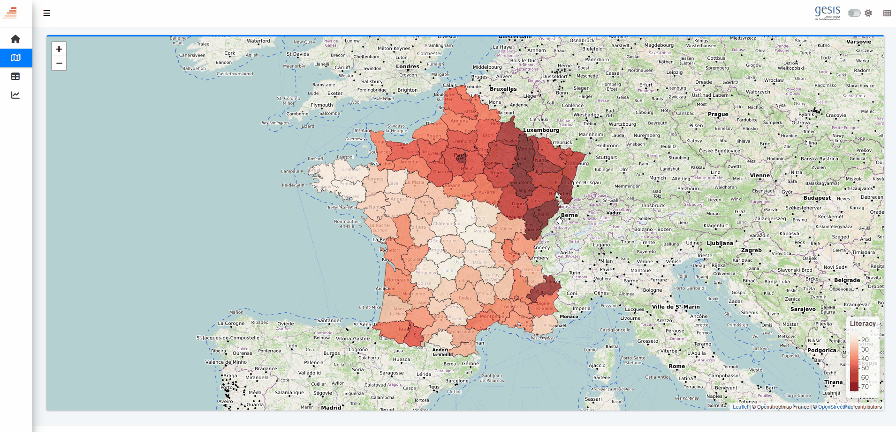
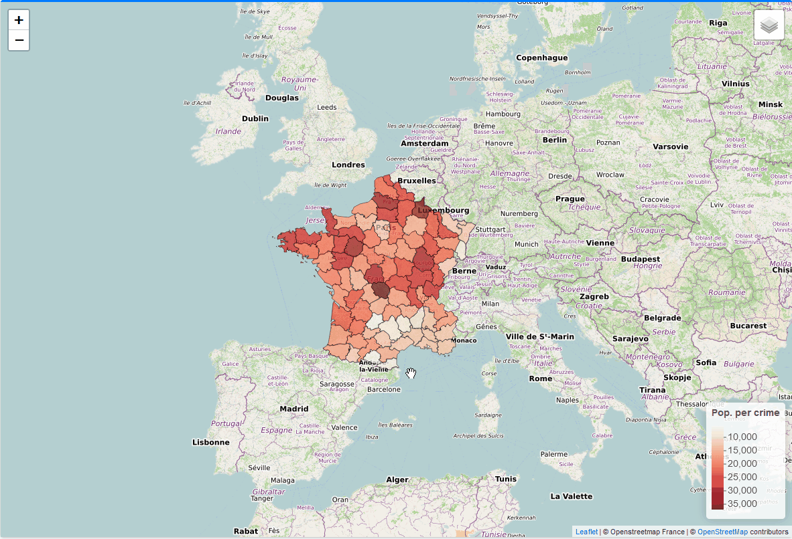
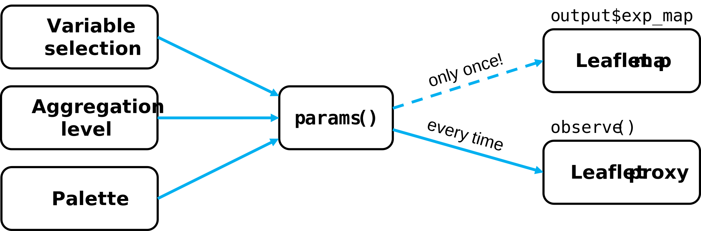
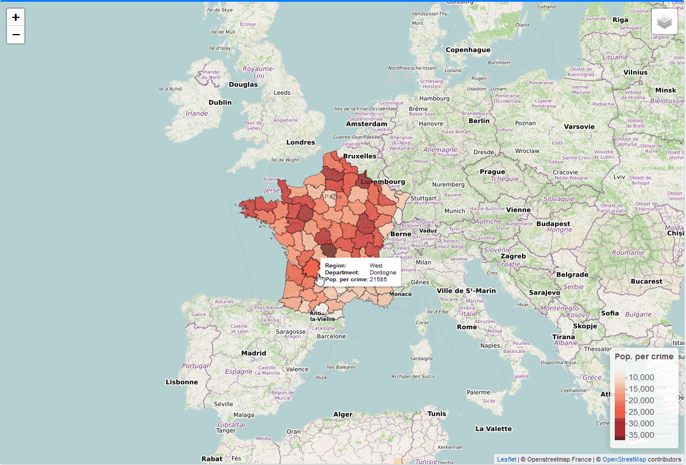
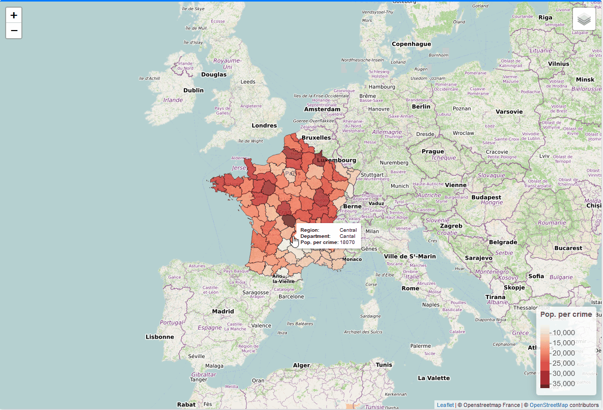

Mapping is a type of data visualization based on spatial data
Classic cartography relies on generalization and interpretation
Interactive cartography removes many limitations such as generalization and map boundaries
Generalization in OpenStreetMap at different scales
1.1 Current app state
Quick recap:
In section 3, we added an introduction tab that contains background info on the app
In section 4, we added a table tab using the DT package
In section 5, we added a modelling tab using all sorts of visualizations
Full code for the current app state
library(shiny)library(htmltools)library(bs4Dash)library(fresh)library(waiter)library(shinyWidgets)library(Guerry)library(sf)library(tidyr)library(dplyr)library(RColorBrewer)library(viridis)library(leaflet)library(plotly)library(ggplot2)library(GGally)library(datawizard)library(parameters)library(performance)library(modelsummary)# 1 Data preparation ----## Load & clean data ----variable_names <-list(Crime_pers ="Crime against persons", Crime_prop ="Crime against property", Literacy ="Literacy", Donations ="Donations to the poor", Infants ="Illegitimate births", Suicides ="Suicides", Wealth ="Tax / capita", Commerce ="Commerce & Industry", Clergy ="Clergy", Crime_parents ="Crime against parents", Infanticide ="Infanticides", Donation_clergy ="Donations to the clergy", Lottery ="Wager on Royal Lottery", Desertion ="Military desertion", Instruction ="Instruction", Prostitutes ="Prostitutes", Distance ="Distance to paris", Area ="Area", Pop1831 ="Population")variable_desc <-list(Crime_pers =list(title ="Crime against persons",desc =as.character(p(tags$b("Crime against persons:"), "Population per crime against persons", hr(), helpText("Source: Table A2 in Guerry (1833). Compte général, 1825-1830"))),lgd ="Pop. per crime",unit ="" ),Crime_prop =list(title ="Crime against property",desc =as.character(p(tags$b("Crime against property:"), "Population per crime against property", hr(), helpText("Source: Compte général, 1825-1830"))),lgd ="Pop. per crime",unit ="" ),Literacy =list(title ="Literacy",desc =as.character(p(tags$b("Percent Read & Write:"), "Percent of military conscripts who can read and write", hr(), helpText("Source: Table A2 in Guerry (1833)"))),lgd ="Literacy",unit =" %" ),Donations =list(title ="Donations to the poor",desc =as.character(p(tags$b("Donations to the poor"), hr(), helpText("Source: Table A2 in Guerry (1833). Bulletin des lois"))),lgd ="Donations",unit ="" ),Infants =list(title ="Illegitimate births",desc =as.character(p(tags$b("Population per illegitimate birth"), hr(), helpText("Source: Table A2 in Guerry (1833). Bureau des Longitudes, 1817-1821"))),lgd ="Pop. per birth",unit ="" ),Suicides =list(title ="Suicides",desc =as.character(p(tags$b("Population per suicide"), hr(), helpText("Source: Table A2 in Guerry (1833). Compte général, 1827-1830"))),lgd ="Pop. per suicide",unit ="" ),Wealth =list(title ="Tax / capita",desc =as.character(p(tags$b("Per capita tax on personal property:"), "A ranked index based on taxes on personal and movable property per inhabitant", hr(), helpText("Source: Table A1 in Guerry (1833)"))),lgd ="Tax / capita",unit ="" ),Commerce =list(title ="Commerce & Industry",desc =as.character(p(tags$b("Commerce & Industry:"), "Commerce and Industry, measured by the rank of the number of patents / population", hr(), helpText("Source: Table A1 in Guerry (1833)"))),lgd ="Patents / capita",unit ="" ),Clergy =list(title ="Clergy",desc =as.character(p(tags$b("Distribution of clergy:"), "Distribution of clergy, measured by the rank of the number of Catholic priests in active service / population", hr(), helpText("Source: Table A1 in Guerry (1833). Almanach officiel du clergy, 1829"))),lgd ="Priests / capita",unit ="" ),Crime_parents =list(title ="Crime against parents",desc =as.character(p(tags$b("Crime against parents:"), "Crimes against parents, measured by the rank of the ratio of crimes against parents to all crimes \u2013 Average for the years 1825-1830", hr(), helpText("Source: Table A1 in Guerry (1833). Compte général"))),lgd ="Share of crimes",unit =" %" ),Infanticide =list(title ="Infanticides",desc =as.character(p(tags$b("Infanticides per capita:"), "Ranked ratio of number of infanticides to population \u2013 Average for the years 1825-1830", hr(), helpText("Source: Table A1 in Guerry (1833). Compte général"))),lgd ="Infanticides / capita",unit ="" ),Donation_clergy =list(title ="Donations to the clergy",desc =as.character(p(tags$b("Donations to the clergy:"), "Ranked ratios of the number of bequests and donations inter vivios to population \u2013 Average for the years 1815-1824", hr(), helpText("Source: Table A1 in Guerry (1833). Bull. des lois, ordunn. d’autorisation"))),lgd ="Donations / capita",unit ="" ),Lottery =list(title ="Wager on Royal Lottery",desc =as.character(p(tags$b("Per capita wager on Royal Lottery:"), "Ranked ratio of the proceeds bet on the royal lottery to population \u2013 Average for the years 1822-1826", hr(), helpText("Source: Table A1 in Guerry (1833). Compte rendu par le ministre des finances"))),lgd ="Wager / capita",unit ="" ),Desertion =list(title ="Military desertion",desc =as.character(p(tags$b("Military desertion:"), "Military disertion, ratio of the number of young soldiers accused of desertion to the force of the military contingent, minus the deficit produced by the insufficiency of available billets\u2013 Average of the years 1825-1827", hr(), helpText("Source: Table A1 in Guerry (1833). Compte du ministère du guerre, 1829 état V"))),lgd ="No. of desertions",unit ="" ),Instruction =list(title ="Instruction",desc =as.character(p(tags$b("Instruction:"), "Ranks recorded from Guerry's map of Instruction. Note: this is inversely related to literacy (as defined here)")),lgd ="Instruction",unit ="" ),Prostitutes =list(title ="Prostitutes",desc =as.character(p(tags$b("Prostitutes in Paris:"), "Number of prostitutes registered in Paris from 1816 to 1834, classified by the department of their birth", hr(), helpText("Source: Parent-Duchatelet (1836), De la prostitution en Paris"))),lgd ="No. of prostitutes",unit ="" ),Distance =list(title ="Distance to paris",desc =as.character(p(tags$b("Distance to Paris (km):"), "Distance of each department centroid to the centroid of the Seine (Paris)", hr(), helpText("Source: Calculated from department centroids"))),lgd ="Distance",unit =" km" ),Area =list(title ="Area",desc =as.character(p(tags$b("Area (1000 km\u00b2)"), hr(), helpText("Source: Angeville (1836)"))),lgd ="Area",unit =" km\u00b2" ),Pop1831 =list(title ="Population",desc =as.character(p(tags$b("Population in 1831, in 1000s"), hr(), helpText("Source: Taken from Angeville (1836), Essai sur la Statistique de la Population français"))),lgd ="Population (in 1000s)",unit ="" ))data_guerry <- Guerry::gfrance85 %>%st_as_sf() %>%as_tibble() %>%st_as_sf(crs =27572) %>%mutate(Region =case_match( Region,"C"~"Central","E"~"East","N"~"North","S"~"South","W"~"West" )) %>%select(-c("COUNT", "dept", "AVE_ID_GEO", "CODE_DEPT")) %>%select(Region:Department, all_of(names(variable_names)))## Prep data (Tab: Tabulate data) ----data_guerry_tabulate <- data_guerry %>%st_drop_geometry() %>%mutate(across(.cols =all_of(names(variable_names)), round, 2))## Prep data (Tab: Map data) ----data_guerry_region <- data_guerry %>%group_by(Region) %>%summarise(across(.cols =all_of(names(variable_names)),function(x) {if (cur_column() %in%c("Area", "Pop1831")) {sum(x) } else {mean(x) } } ))## Prepare palettes ----## Used for mappingpals <-list(Sequential = RColorBrewer::brewer.pal.info %>%filter(category %in%"seq") %>%row.names(),Viridis =c("Magma", "Inferno", "Plasma", "Viridis","Cividis", "Rocket", "Mako", "Turbo"))## Prepare modebar clean-up ----## Used for modellingplotly_buttons <-c("sendDataToCloud", "zoom2d", "select2d", "lasso2d", "autoScale2d","hoverClosestCartesian", "hoverCompareCartesian", "resetScale2d")# 3 UI ----ui <-dashboardPage(title ="The Guerry Dashboard",## 3.1 Header ----header =dashboardHeader(title =tagList(img(src ="../workshop-logo.png", width =35, height =35),span("The Guerry Dashboard", class ="brand-text") ) ),## 3.2 Sidebar ----sidebar =dashboardSidebar(id ="sidebar",sidebarMenu(id ="sidebarMenu",menuItem(tabName ="tab_intro", text ="Introduction", icon =icon("home")),menuItem(tabName ="tab_tabulate", text ="Tabulate data", icon =icon("table")),menuItem(tabName ="tab_model", text ="Model data", icon =icon("chart-line")),menuItem(tabName ="tab_map", text ="Map data", icon =icon("map")),flat =TRUE ),minified =TRUE,collapsed =TRUE,fixed =FALSE,skin ="light" ),## 3.3 Body ----body =dashboardBody(tabItems(### 3.1.1 Tab: Introduction ----tabItem(tabName ="tab_intro",jumbotron(title ="The Guerry Dashboard",lead ="A Shiny app to explore the classic Guerry dataset.",status ="info",btnName =NULL ),fluidRow(column(width =1),column(width =6,box(title ="About",status ="primary",width =12,blockQuote(HTML("André-Michel Guerry was a French lawyer and amateur statistician. Together with Adolphe Quetelet he may be regarded as the founder of moral statistics which led to the development of criminology, sociology and ultimately, modern social science. <br>— Wikipedia: <a href='https://en.wikipedia.org/wiki/Andr%C3%A9-Michel_Guerry'>André-Michel Guerry</a>"),color ="primary"),p(HTML("Andre-Michel Guerry (1833) was the first to systematically collect and analyze social data on such things as crime, literacy and suicide with the view to determining social laws and the relations among these variables. The Guerry data frame comprises a collection of 'moral variables' (cf. <i><a href='https://en.wikipedia.org/wiki/Moral_statistics'>moral statistics</a></i>) on the 86 departments of France around 1830. A few additional variables have been added from other sources. In total the data frame has 86 observations (the departments of France) on 23 variables <i>(Source: <code>?Guerry</code>)</i>. In this app, we aim to explore Guerry’s data using spatial exploration and regression modelling.")),hr(),accordion(id ="accord",accordionItem(title ="References",status ="primary",solidHeader =FALSE,"The following sources are referenced in this app:", tags$ul(class ="list-style: none",style ="margin-left: -30px;",p("Angeville, A. (1836). Essai sur la Statistique de la Population française Paris: F. Doufour."),p("Guerry, A.-M. (1833). Essai sur la statistique morale de la France Paris: Crochard. English translation: Hugh P. Whitt and Victor W. Reinking, Lewiston, N.Y. : Edwin Mellen Press, 2002."),p("Parent-Duchatelet, A. (1836). De la prostitution dans la ville de Paris, 3rd ed, 1857, p. 32, 36"),p("Palsky, G. (2008). Connections and exchanges in European thematic cartography. The case of 19th century choropleth maps. Belgeo 3-4, 413-426.") ) ),accordionItem(title ="Details",status ="primary",solidHeader =FALSE,p("This app was created as part of a Shiny workshop held in July 2023"),p("Last update: June 2023"),p("Further information about the data can be found",a("here.", href ="https://www.datavis.ca/gallery/guerry/guerrydat.html")) ) ) ) ),column(width =4,box(title ="André Michel Guerry",status ="primary",width =12, tags$img(src ="../guerry.jpg", width ="100%"),p("Source: Palsky (2008)") ) ) ) ),### 3.3.2 Tab: Tabulate data ----tabItem(tabName ="tab_tabulate",fluidRow(#### Inputs(s) ----pickerInput("tab_tabulate_select",label ="Filter variables",choices =setNames(names(variable_names), variable_names),options =pickerOptions(actionsBox =TRUE,windowPadding =c(30, 0, 0, 0),liveSearch =TRUE,selectedTextFormat ="count",countSelectedText ="{0} variables selected",noneSelectedText ="No filters applied" ),inline =TRUE,multiple =TRUE ) ),hr(),#### Output(s) (Data table) ---- DT::dataTableOutput("tab_tabulate_table") ),### 3.3.3 Tab: Model data ----tabItem(tabName ="tab_model",fluidRow(column(width =6,#### Inputs(s) ----box(width =12,title ="Select variables",status ="primary", shinyWidgets::pickerInput("model_x",label ="Select a dependent variable",choices =setNames(names(variable_names), variable_names),options = shinyWidgets::pickerOptions(liveSearch =TRUE),selected ="Literacy" ), shinyWidgets::pickerInput("model_y",label ="Select independent variables",choices =setNames(names(variable_names), variable_names),options = shinyWidgets::pickerOptions(actionsBox =TRUE,liveSearch =TRUE,selectedTextFormat ="count",countSelectedText ="{0} variables selected",noneSelectedText ="No variables selected" ),multiple =TRUE,selected ="Commerce" ), shinyWidgets::prettyCheckbox("model_std",label ="Standardize variables?",value =TRUE,status ="primary",shape ="curve" ),hr(),actionButton("refresh",label ="Apply changes",icon =icon("refresh"),flat =TRUE ) ),#### Outputs(s) ----tabBox(status ="primary",type ="tabs",title ="Model analysis",side ="right",width =12,##### Tabpanel: Coefficient plot ----tabPanel(title ="Plot: Coefficients", plotly::plotlyOutput("coefficientplot") ),##### Tabpanel: Scatterplot ----tabPanel(title ="Plot: Scatterplot", plotly::plotlyOutput("scatterplot") ),##### Tabpanel: Table: Regression ----tabPanel(title ="Table: Model",htmlOutput("tableregression") ) ) ),column(width =6,##### Box: Pair diagramm ----box(width =12,title ="Pair diagram",status ="primary", plotly::plotlyOutput("pairplot") ),##### TabBox: Model diagnostics ----tabBox(status ="primary",type ="tabs",title ="Model diagnostics",width =12,side ="right",tabPanel(title ="Normality", plotly::plotlyOutput("normality") ),tabPanel(title ="Outliers", plotly::plotlyOutput("outliers") ),tabPanel(title ="Heteroskedasticity", plotly::plotlyOutput("heteroskedasticity") ) ) ) ) ),### 3.3.4 Tab: Map data ----tabItem(tabName ="tab_map", # must correspond to related menuItem namefluidRow(column(#### Output(s) ----width =8,box(id ="tab_map_box",status ="primary",headerBorder =FALSE,collapsible =FALSE,width =12, leaflet::leafletOutput("tab_map_map", height ="800px", width ="100%") ) # end box ) # end column ) # end fluidRow ) # end tabItem ) # end tabItems ),## 3.4 Footer (bottom)----footer =dashboardFooter(left =span("This dashboard was created by Jonas Lieth and Paul Bauer. Find the source code",a("here.", href ="https://github.com/paulcbauer/shiny_workshop/tree/main/shinyapps/guerry"),"It is based on data from the",a("Guerry R package.", href ="https://cran.r-project.org/web/packages/Guerry/index.html") ) ),## 3.5 Controlbar (top)----controlbar =dashboardControlbar(div(class ="p-3", skinSelector()),skin ="light" ) )# 4 Server ----server <-function(input, output, session) {## 4.1 Tabulate data ----### Variable selection ---- tab <-reactive({ var <- input$tab_tabulate_select data_table <- data_guerry_tabulateif (!is.null(var)) { data_table <- data_table[, var] } data_table })### Create table---- dt <-reactive({ tab <-tab() ridx <-ifelse("Department"%in%names(tab), 3, 1) DT::datatable( tab,class ="hover",extensions =c("Buttons"),selection ="none",filter =list(position ="top", clear =FALSE),style ="bootstrap4",rownames =FALSE,options =list(dom ="Brtip",deferRender =TRUE,scroller =TRUE,buttons =list(list(extend ="copy", text ="Copy to clipboard"),list(extend ="pdf", text ="Save as PDF"),list(extend ="csv", text ="Save as CSV"),list(extend ="excel", text ="Save as JSON", action = DT::JS(" function (e, dt, button, config) { var data = dt.buttons.exportData(); $.fn.dataTable.fileSave( new Blob([JSON.stringify(data)]), 'Shiny dashboard.json' ); } ")) ) ) ) })### Render table---- output$tab_tabulate_table <- DT::renderDataTable(dt(), server =FALSE)## 4.2 Model data ----### Define & estimate model ---- mparams <-reactive({ x <- input$model_x y <- input$model_y dt <- sf::st_drop_geometry(data_guerry)[c(x, y)] dt_labels <- sf::st_drop_geometry(data_guerry)[c("Department", "Region")]if (input$model_std) dt <- datawizard::standardise(dt) form <-as.formula(paste(x, "~", paste(y, collapse =" + "))) mod <-lm(form, data = dt)list(x = x,y = y,data = dt,data_labels = dt_labels,model = mod ) }) %>%bindEvent(input$refresh, ignoreNULL =FALSE)### Pair diagram ---- output$pairplot <- plotly::renderPlotly({ params <-mparams() dt <- params$data dt_labels <- params$data_labels p <- GGally::ggpairs( params$data,axisLabels ="none",lower =list(continuous =function(data, mapping, ...) {ggplot(data, mapping) +suppressWarnings(geom_point(aes(text =paste0("Department: ", dt_labels[["Department"]],"<br>Region: ", dt_labels[["Region"]])),color ="black" )) } ) )if (isTRUE(input$dark_mode)) p <- p +dark_theme_gray() +theme(plot.background =element_rect(fill ="#343a40"))ggplotly(p) %>%config(modeBarButtonsToRemove = plotly_buttons,displaylogo =FALSE) })### Plot: Coefficientplot ---- output$coefficientplot <-renderPlotly({ params <-mparams() dt <- params$data x <- params$x y <- params$y p <-plot(parameters::model_parameters(params$model))if (isTRUE(input$dark_mode)) p <- p +geom_point(color ="white") +dark_theme_gray() +theme(plot.background =element_rect(fill ="#343a40"))ggplotly(p) %>%config(modeBarButtonsToRemove = plotly_buttons,displaylogo =FALSE) })### Plot: Scatterplot ---- output$scatterplot <-renderPlotly({ params <-mparams() dt <- params$data dt_labels <- params$data_labels x <- params$x y <- params$yif (length(y) ==1) { p <-ggplot(params$data, aes(x = .data[[params$x]], y = .data[[params$y]])) +geom_point(aes(text =paste0("Department: ", dt_labels[["Department"]],"<br>Region: ", dt_labels[["Region"]])),color ="black") +geom_smooth() +geom_smooth(method='lm') +theme_light() } else { p <-ggplot() +theme_void() +annotate("text", label ="Cannot create scatterplot.\nMore than two variables selected.", x =0, y =0, size =5, colour ="red",hjust =0.5,vjust =0.5) +xlab(NULL) }if (isTRUE(input$dark_mode)) p <- p +geom_point(color ="white") +dark_theme_gray() +theme(plot.background =element_rect(fill ="#343a40"))ggplotly(p) %>%config(modeBarButtonsToRemove = plotly_buttons,displaylogo =FALSE) })### Table: Regression ---- output$tableregression <-renderUI({ params <-mparams()HTML(modelsummary(dvnames(list(params$model)),gof_omit ="AIC|BIC|Log|Adj|RMSE" )) })### Plot: Normality residuals ---- output$normality <-renderPlotly({ params <-mparams() p <-plot(performance::check_normality(params$model))if (isTRUE(input$dark_mode)) p <- p +dark_theme_gray() +theme(plot.background =element_rect(fill ="#343a40"))ggplotly(p) %>%config(modeBarButtonsToRemove = plotly_buttons,displaylogo =FALSE) })### Plot: Outliers ---- output$outliers <-renderPlotly({ params <-mparams() p <-plot(performance::check_outliers(params$model), show_labels =FALSE)if (isTRUE(input$dark_mode)) p <- p +dark_theme_gray() +theme(plot.background =element_rect(fill ="#343a40")) p$labels$x <-"Leverage"ggplotly(p) %>%config(modeBarButtonsToRemove = plotly_buttons,displaylogo =FALSE) })### Plot: Heteroskedasticity ---- output$heteroskedasticity <-renderPlotly({ params <-mparams() p <-plot(performance::check_heteroskedasticity(params$model))if (isTRUE(input$dark_mode)) p <- p +dark_theme_gray() +theme(plot.background =element_rect(fill ="#343a40")) p$labels$y <-"Sqrt. |Std. residuals|"# ggplotly doesn't support expressionsggplotly(p) %>%config(modeBarButtonsToRemove = plotly_buttons,displaylogo =FALSE) })## 4.3 Map data ----# New code goes here :)}shinyApp(ui, server)
1.2 Further resources
Chapter 9 of Robin Lovelace’s “Geocomputation with R”
Create a feature column – essentially a regular non-spatial column
3
Create a geometry column containing an sfc object
4
sfc = geometry + spatial metadata
5
sfg = raw geometries
Simple feature collection with 4 features and 1 field
Geometry type: POINT
Dimension: XY
Bounding box: xmin: 1 ymin: 1 xmax: 2 ymax: 2
CRS: NA
feature geometry
1 1 POINT (1 1)
2 2 POINT (1 2)
3 1 POINT (2 2)
4 2 POINT (2 1)
2.3 Coordinate reference systems
All spatial data need to have a coordinate reference system (CRS) that locates the coordinates on the planet
The geodetic specifics are mostly not necessary, but it’s always good to know a basic distinction
Geodetic CRS
Uses angular units (degrees) because they are based on a spheroid
Usually good for global or national scale visualizations
Example: WGS84 (World Geodetic System)
Projected CRS
Uses metric units (meters) because they are based on a projected model of the earth
Usually good for local or regional high-precision spatial analysis and visualization
Example: UTM (Universal Transversal Mercator)
UTM (Universal Transversal Mercator) - a projected coordinate system. Each zone is a CRS.
2.4 EPSG codes
CRS can be referenced using numeric identifiers called EPSG codes
Extract the sfc object from the Guerry dataset. What is the difference between sf and sfc?
Tip
Consult the documentation of st_geometry()
Solution
st_geometry(data_guerry)
sf objects are dataframes containing of one or more non-spatial feature columns and a geometry column containing an sfc object
sfc objects are representations of geospatial geometries. They contain all relevant spatial metadata but no contextual feature data
Exercise 2
Extract the fifth sfg object of the sfc object from exercise 1. What is the difference between the two?
Tip
Objects of class sfc behave like lists and can be subset in the same fashion
Solution
geom <-st_geometry(data_guerry)geom[[1]]
sfg objects contain raw geometries consisting only of coordinates and a geometric topology (i.e. how to connect coordinates to make a polygon)
sfc objects have spatial metadata including the CRS which makes it possible to where the coordinates are located on the planet
Exercise 3
data_guerry currently consists of multi polygons. How can we convert these polygons to point geometries? Explore the function reference of the sf package and find functions (multiple answers possible) that can convert polygons to points in some way.
Tip
A search for “point” can give you the most obvious functions to fulfill the task, but there’s more!
Solution
st_point_on_surface(data_guerry) returns a point that is guaranteed to be on the polygon
st_centroid(data_guerry) returns the geometrical center of the polygon
st_cast(data_guerry, "POINT") or st_cast(data_guerry, "MULTIPOINT")
Doesn’t return a warning, but is random and drops all features
Exercise 4
Currently, the Guerry dataframe has the CRS “NTF (Paris) / Lambert zone II”, which is already a good choice. What other CRS could be a good choice for accurate mapping in France?
Tip
Remember the UTM coordinate system! Scroll back up to see the UTM zones.
Solution
While there are many CRS that might be a good choice, one solution that we addressed in this workshop are UTM zones! Taking a look at the figure of UTM zones we can see that UTM zone 31N almost entirely covers the area of France.
Exercise 5
Transform the Guerry dataframe to your new CRS from exercise 4.
Using the search function on epsg.io we can determine that the EPSG code to transform the Guerry dataset from Lambert zone II to UTM zone 31N is one of 23031, 25831 or 32631.
st_transform(data_guerry, 23031)
3 Interactive maps using Leaflet
R offers many solutions to mapping, some more advanced than others
In our app, we add a geographic explorer of the Guerry dataset
tabItem(tabName ="tab_map",fluidRow(column(width =12,box(id ="tab_map_box",status ="primary",headerBorder =FALSE,collapsible =FALSE,width =12, leaflet::leafletOutput("tab_map_map", height ="800px", width ="100%") ) # end box ) # end column ) # end fluidRow) # end tabItem
1
Create a new tab called tab_map
2
Add a fluid row containing a column and a box covering the entire page
3
Add a UI output that will hold the leaflet map. It covers the entire width and 800 pixels in height.
3.2 Leaflet workhorse
The leaflet package is centered around the workhorse leaflet() which creates an empty map canvas
Each additional function can be piped into and adds an additional mapping component (similar to ggplot2)
addProviderTiles() adds a base map, in this case we use four base maps that can be chosen from
addLayersControl() adds a button that lets you switch between map layers
setView() sets the center and zoom level of the initial map view
output$tab_map_map <- leaflet::renderLeaflet({leaflet() %>%addProviderTiles("OpenStreetMap.France", group ="OSM") %>%addProviderTiles("OpenTopoMap", group ="OTM") %>%addProviderTiles("Stamen.TonerLite", group ="Stamen Toner") %>%addProviderTiles("GeoportailFrance.orthos", group ="Orthophotos") %>%addLayersControl(baseGroups =c("OSM", "OTM","Stamen Toner", "Orthophotos")) %>%setView(lng =3, lat =47, zoom =5)})
1
Fill the output tab_map_map with a leaflet map using renderLeaflet
2
Add an empty map using the power horse leaflet()
3
Add multiple basemaps: OpenStreetMap, OpenTopoMap, Stamen and ortho photos from the French geo portal
4
Add a button to control which of the basemaps to show
5
Set the initial center of the map and the zoom level
3.3 Full code
Full code including an empty map
library(shiny)library(htmltools)library(bs4Dash)library(fresh)library(waiter)library(shinyWidgets)library(Guerry)library(sf)library(tidyr)library(dplyr)library(RColorBrewer)library(viridis)library(leaflet)library(plotly)library(ggplot2)library(GGally)library(datawizard)library(parameters)library(performance)library(modelsummary)# 1 Data preparation ----## Load & clean data ----variable_names <-list(Crime_pers ="Crime against persons", Crime_prop ="Crime against property", Literacy ="Literacy", Donations ="Donations to the poor", Infants ="Illegitimate births", Suicides ="Suicides", Wealth ="Tax / capita", Commerce ="Commerce & Industry", Clergy ="Clergy", Crime_parents ="Crime against parents", Infanticide ="Infanticides", Donation_clergy ="Donations to the clergy", Lottery ="Wager on Royal Lottery", Desertion ="Military desertion", Instruction ="Instruction", Prostitutes ="Prostitutes", Distance ="Distance to paris", Area ="Area", Pop1831 ="Population")variable_desc <-list(Crime_pers =list(title ="Crime against persons",desc =as.character(p(tags$b("Crime against persons:"), "Population per crime against persons", hr(), helpText("Source: Table A2 in Guerry (1833). Compte général, 1825-1830"))),lgd ="Pop. per crime",unit ="" ),Crime_prop =list(title ="Crime against property",desc =as.character(p(tags$b("Crime against property:"), "Population per crime against property", hr(), helpText("Source: Compte général, 1825-1830"))),lgd ="Pop. per crime",unit ="" ),Literacy =list(title ="Literacy",desc =as.character(p(tags$b("Percent Read & Write:"), "Percent of military conscripts who can read and write", hr(), helpText("Source: Table A2 in Guerry (1833)"))),lgd ="Literacy",unit =" %" ),Donations =list(title ="Donations to the poor",desc =as.character(p(tags$b("Donations to the poor"), hr(), helpText("Source: Table A2 in Guerry (1833). Bulletin des lois"))),lgd ="Donations",unit ="" ),Infants =list(title ="Illegitimate births",desc =as.character(p(tags$b("Population per illegitimate birth"), hr(), helpText("Source: Table A2 in Guerry (1833). Bureau des Longitudes, 1817-1821"))),lgd ="Pop. per birth",unit ="" ),Suicides =list(title ="Suicides",desc =as.character(p(tags$b("Population per suicide"), hr(), helpText("Source: Table A2 in Guerry (1833). Compte général, 1827-1830"))),lgd ="Pop. per suicide",unit ="" ),Wealth =list(title ="Tax / capita",desc =as.character(p(tags$b("Per capita tax on personal property:"), "A ranked index based on taxes on personal and movable property per inhabitant", hr(), helpText("Source: Table A1 in Guerry (1833)"))),lgd ="Tax / capita",unit ="" ),Commerce =list(title ="Commerce & Industry",desc =as.character(p(tags$b("Commerce & Industry:"), "Commerce and Industry, measured by the rank of the number of patents / population", hr(), helpText("Source: Table A1 in Guerry (1833)"))),lgd ="Patents / capita",unit ="" ),Clergy =list(title ="Clergy",desc =as.character(p(tags$b("Distribution of clergy:"), "Distribution of clergy, measured by the rank of the number of Catholic priests in active service / population", hr(), helpText("Source: Table A1 in Guerry (1833). Almanach officiel du clergy, 1829"))),lgd ="Priests / capita",unit ="" ),Crime_parents =list(title ="Crime against parents",desc =as.character(p(tags$b("Crime against parents:"), "Crimes against parents, measured by the rank of the ratio of crimes against parents to all crimes \u2013 Average for the years 1825-1830", hr(), helpText("Source: Table A1 in Guerry (1833). Compte général"))),lgd ="Share of crimes",unit =" %" ),Infanticide =list(title ="Infanticides",desc =as.character(p(tags$b("Infanticides per capita:"), "Ranked ratio of number of infanticides to population \u2013 Average for the years 1825-1830", hr(), helpText("Source: Table A1 in Guerry (1833). Compte général"))),lgd ="Infanticides / capita",unit ="" ),Donation_clergy =list(title ="Donations to the clergy",desc =as.character(p(tags$b("Donations to the clergy:"), "Ranked ratios of the number of bequests and donations inter vivios to population \u2013 Average for the years 1815-1824", hr(), helpText("Source: Table A1 in Guerry (1833). Bull. des lois, ordunn. d’autorisation"))),lgd ="Donations / capita",unit ="" ),Lottery =list(title ="Wager on Royal Lottery",desc =as.character(p(tags$b("Per capita wager on Royal Lottery:"), "Ranked ratio of the proceeds bet on the royal lottery to population \u2013 Average for the years 1822-1826", hr(), helpText("Source: Table A1 in Guerry (1833). Compte rendu par le ministre des finances"))),lgd ="Wager / capita",unit ="" ),Desertion =list(title ="Military desertion",desc =as.character(p(tags$b("Military desertion:"), "Military disertion, ratio of the number of young soldiers accused of desertion to the force of the military contingent, minus the deficit produced by the insufficiency of available billets\u2013 Average of the years 1825-1827", hr(), helpText("Source: Table A1 in Guerry (1833). Compte du ministère du guerre, 1829 état V"))),lgd ="No. of desertions",unit ="" ),Instruction =list(title ="Instruction",desc =as.character(p(tags$b("Instruction:"), "Ranks recorded from Guerry's map of Instruction. Note: this is inversely related to literacy (as defined here)")),lgd ="Instruction",unit ="" ),Prostitutes =list(title ="Prostitutes",desc =as.character(p(tags$b("Prostitutes in Paris:"), "Number of prostitutes registered in Paris from 1816 to 1834, classified by the department of their birth", hr(), helpText("Source: Parent-Duchatelet (1836), De la prostitution en Paris"))),lgd ="No. of prostitutes",unit ="" ),Distance =list(title ="Distance to paris",desc =as.character(p(tags$b("Distance to Paris (km):"), "Distance of each department centroid to the centroid of the Seine (Paris)", hr(), helpText("Source: Calculated from department centroids"))),lgd ="Distance",unit =" km" ),Area =list(title ="Area",desc =as.character(p(tags$b("Area (1000 km\u00b2)"), hr(), helpText("Source: Angeville (1836)"))),lgd ="Area",unit =" km\u00b2" ),Pop1831 =list(title ="Population",desc =as.character(p(tags$b("Population in 1831, in 1000s"), hr(), helpText("Source: Taken from Angeville (1836), Essai sur la Statistique de la Population français"))),lgd ="Population (in 1000s)",unit ="" ))data_guerry <- Guerry::gfrance85 %>%st_as_sf() %>%as_tibble() %>%st_as_sf(crs =27572) %>%mutate(Region =case_match( Region,"C"~"Central","E"~"East","N"~"North","S"~"South","W"~"West" )) %>%select(-c("COUNT", "dept", "AVE_ID_GEO", "CODE_DEPT")) %>%select(Region:Department, all_of(names(variable_names)))## Prep data (Tab: Tabulate data) ----data_guerry_tabulate <- data_guerry %>%st_drop_geometry() %>%mutate(across(.cols =all_of(names(variable_names)), round, 2))## Prep data (Tab: Map data) ----data_guerry_region <- data_guerry %>%group_by(Region) %>%summarise(across(.cols =all_of(names(variable_names)),function(x) {if (cur_column() %in%c("Area", "Pop1831")) {sum(x) } else {mean(x) } } ))## Prepare palettes ----## Used for mappingpals <-list(Sequential = RColorBrewer::brewer.pal.info %>%filter(category %in%"seq") %>%row.names(),Viridis =c("Magma", "Inferno", "Plasma", "Viridis","Cividis", "Rocket", "Mako", "Turbo"))## Prepare modebar clean-up ----## Used for modellingplotly_buttons <-c("sendDataToCloud", "zoom2d", "select2d", "lasso2d", "autoScale2d","hoverClosestCartesian", "hoverCompareCartesian", "resetScale2d")# 3 UI ----ui <-dashboardPage(title ="The Guerry Dashboard",## 3.1 Header ----header =dashboardHeader(title =tagList(img(src ="../workshop-logo.png", width =35, height =35),span("The Guerry Dashboard", class ="brand-text") ) ),## 3.2 Sidebar ----sidebar =dashboardSidebar(id ="sidebar",sidebarMenu(id ="sidebarMenu",menuItem(tabName ="tab_intro", text ="Introduction", icon =icon("home")),menuItem(tabName ="tab_tabulate", text ="Tabulate data", icon =icon("table")),menuItem(tabName ="tab_model", text ="Model data", icon =icon("chart-line")),menuItem(tabName ="tab_map", text ="Map data", icon =icon("map")),flat =TRUE ),minified =TRUE,collapsed =TRUE,fixed =FALSE,skin ="light" ),## 3.3 Body ----body =dashboardBody(tabItems(### 3.1.1 Tab: Introduction ----tabItem(tabName ="tab_intro",jumbotron(title ="The Guerry Dashboard",lead ="A Shiny app to explore the classic Guerry dataset.",status ="info",btnName =NULL ),fluidRow(column(width =1),column(width =6,box(title ="About",status ="primary",width =12,blockQuote(HTML("André-Michel Guerry was a French lawyer and amateur statistician. Together with Adolphe Quetelet he may be regarded as the founder of moral statistics which led to the development of criminology, sociology and ultimately, modern social science. <br>— Wikipedia: <a href='https://en.wikipedia.org/wiki/Andr%C3%A9-Michel_Guerry'>André-Michel Guerry</a>"),color ="primary"),p(HTML("Andre-Michel Guerry (1833) was the first to systematically collect and analyze social data on such things as crime, literacy and suicide with the view to determining social laws and the relations among these variables. The Guerry data frame comprises a collection of 'moral variables' (cf. <i><a href='https://en.wikipedia.org/wiki/Moral_statistics'>moral statistics</a></i>) on the 86 departments of France around 1830. A few additional variables have been added from other sources. In total the data frame has 86 observations (the departments of France) on 23 variables <i>(Source: <code>?Guerry</code>)</i>. In this app, we aim to explore Guerry’s data using spatial exploration and regression modelling.")),hr(),accordion(id ="accord",accordionItem(title ="References",status ="primary",solidHeader =FALSE,"The following sources are referenced in this app:", tags$ul(class ="list-style: none",style ="margin-left: -30px;",p("Angeville, A. (1836). Essai sur la Statistique de la Population française Paris: F. Doufour."),p("Guerry, A.-M. (1833). Essai sur la statistique morale de la France Paris: Crochard. English translation: Hugh P. Whitt and Victor W. Reinking, Lewiston, N.Y. : Edwin Mellen Press, 2002."),p("Parent-Duchatelet, A. (1836). De la prostitution dans la ville de Paris, 3rd ed, 1857, p. 32, 36"),p("Palsky, G. (2008). Connections and exchanges in European thematic cartography. The case of 19th century choropleth maps. Belgeo 3-4, 413-426.") ) ),accordionItem(title ="Details",status ="primary",solidHeader =FALSE,p("This app was created as part of a Shiny workshop held in July 2023"),p("Last update: June 2023"),p("Further information about the data can be found",a("here.", href ="https://www.datavis.ca/gallery/guerry/guerrydat.html")) ) ) ) ),column(width =4,box(title ="André Michel Guerry",status ="primary",width =12, tags$img(src ="../guerry.jpg", width ="100%"),p("Source: Palsky (2008)") ) ) ) ),### 3.3.2 Tab: Tabulate data ----tabItem(tabName ="tab_tabulate",fluidRow(#### Inputs(s) ----pickerInput("tab_tabulate_select",label ="Filter variables",choices =setNames(names(variable_names), variable_names),options =pickerOptions(actionsBox =TRUE,windowPadding =c(30, 0, 0, 0),liveSearch =TRUE,selectedTextFormat ="count",countSelectedText ="{0} variables selected",noneSelectedText ="No filters applied" ),inline =TRUE,multiple =TRUE ) ),hr(),#### Output(s) (Data table) ---- DT::dataTableOutput("tab_tabulate_table") ),### 3.3.3 Tab: Model data ----tabItem(tabName ="tab_model",fluidRow(column(width =6,#### Inputs(s) ----box(width =12,title ="Select variables",status ="primary", shinyWidgets::pickerInput("model_x",label ="Select a dependent variable",choices =setNames(names(variable_names), variable_names),options = shinyWidgets::pickerOptions(liveSearch =TRUE),selected ="Literacy" ), shinyWidgets::pickerInput("model_y",label ="Select independent variables",choices =setNames(names(variable_names), variable_names),options = shinyWidgets::pickerOptions(actionsBox =TRUE,liveSearch =TRUE,selectedTextFormat ="count",countSelectedText ="{0} variables selected",noneSelectedText ="No variables selected" ),multiple =TRUE,selected ="Commerce" ), shinyWidgets::prettyCheckbox("model_std",label ="Standardize variables?",value =TRUE,status ="primary",shape ="curve" ),hr(),actionButton("refresh",label ="Apply changes",icon =icon("refresh"),flat =TRUE ) ),#### Outputs(s) ----tabBox(status ="primary",type ="tabs",title ="Model analysis",side ="right",width =12,##### Tabpanel: Coefficient plot ----tabPanel(title ="Plot: Coefficients", plotly::plotlyOutput("coefficientplot") ),##### Tabpanel: Scatterplot ----tabPanel(title ="Plot: Scatterplot", plotly::plotlyOutput("scatterplot") ),##### Tabpanel: Table: Regression ----tabPanel(title ="Table: Model",htmlOutput("tableregression") ) ) ),column(width =6,##### Box: Pair diagramm ----box(width =12,title ="Pair diagram",status ="primary", plotly::plotlyOutput("pairplot") ),##### TabBox: Model diagnostics ----tabBox(status ="primary",type ="tabs",title ="Model diagnostics",width =12,side ="right",tabPanel(title ="Normality", plotly::plotlyOutput("normality") ),tabPanel(title ="Outliers", plotly::plotlyOutput("outliers") ),tabPanel(title ="Heteroskedasticity", plotly::plotlyOutput("heteroskedasticity") ) ) ) ) ),### 3.3.4 Tab: Map data ----tabItem(tabName ="tab_map", # must correspond to related menuItem namefluidRow(column(#### Output(s) ----width =8,box(id ="tab_map_box",status ="primary",headerBorder =FALSE,collapsible =FALSE,width =12, leaflet::leafletOutput("tab_map_map", height ="800px", width ="100%") ) # end box ) # end column ) # end fluidRow ) # end tabItem ) # end tabItems ),## 3.4 Footer (bottom)----footer =dashboardFooter(left =span("This dashboard was created by Jonas Lieth and Paul Bauer. Find the source code",a("here.", href ="https://github.com/paulcbauer/shiny_workshop/tree/main/shinyapps/guerry"),"It is based on data from the",a("Guerry R package.", href ="https://cran.r-project.org/web/packages/Guerry/index.html") ) ),## 3.5 Controlbar (top)----controlbar =dashboardControlbar(div(class ="p-3", skinSelector()),skin ="light" ) )# 4 Server ----server <-function(input, output, session) {## 4.1 Tabulate data ----### Variable selection ---- tab <-reactive({ var <- input$tab_tabulate_select data_table <- data_guerry_tabulateif (!is.null(var)) { data_table <- data_table[, var] } data_table })### Create table---- dt <-reactive({ tab <-tab() ridx <-ifelse("Department"%in%names(tab), 3, 1) DT::datatable( tab,class ="hover",extensions =c("Buttons"),selection ="none",filter =list(position ="top", clear =FALSE),style ="bootstrap4",rownames =FALSE,options =list(dom ="Brtip",deferRender =TRUE,scroller =TRUE,buttons =list(list(extend ="copy", text ="Copy to clipboard"),list(extend ="pdf", text ="Save as PDF"),list(extend ="csv", text ="Save as CSV"),list(extend ="excel", text ="Save as JSON", action = DT::JS(" function (e, dt, button, config) { var data = dt.buttons.exportData(); $.fn.dataTable.fileSave( new Blob([JSON.stringify(data)]), 'Shiny dashboard.json' ); } ")) ) ) ) })### Render table---- output$tab_tabulate_table <- DT::renderDataTable(dt(), server =FALSE)## 4.2 Model data ----### Define & estimate model ---- mparams <-reactive({ x <- input$model_x y <- input$model_y dt <- sf::st_drop_geometry(data_guerry)[c(x, y)] dt_labels <- sf::st_drop_geometry(data_guerry)[c("Department", "Region")]if (input$model_std) dt <- datawizard::standardise(dt) form <-as.formula(paste(x, "~", paste(y, collapse =" + "))) mod <-lm(form, data = dt)list(x = x,y = y,data = dt,data_labels = dt_labels,model = mod ) }) %>%bindEvent(input$refresh, ignoreNULL =FALSE)### Pair diagram ---- output$pairplot <- plotly::renderPlotly({ params <-mparams() dt <- params$data dt_labels <- params$data_labels p <- GGally::ggpairs( params$data,axisLabels ="none",lower =list(continuous =function(data, mapping, ...) {ggplot(data, mapping) +suppressWarnings(geom_point(aes(text =paste0("Department: ", dt_labels[["Department"]],"<br>Region: ", dt_labels[["Region"]])),color ="black" )) } ) )if (isTRUE(input$dark_mode)) p <- p +dark_theme_gray() +theme(plot.background =element_rect(fill ="#343a40"))ggplotly(p) %>%config(modeBarButtonsToRemove = plotly_buttons,displaylogo =FALSE) })### Plot: Coefficientplot ---- output$coefficientplot <-renderPlotly({ params <-mparams() dt <- params$data x <- params$x y <- params$y p <-plot(parameters::model_parameters(params$model))if (isTRUE(input$dark_mode)) p <- p +geom_point(color ="white") +dark_theme_gray() +theme(plot.background =element_rect(fill ="#343a40"))ggplotly(p) %>%config(modeBarButtonsToRemove = plotly_buttons,displaylogo =FALSE) })### Plot: Scatterplot ---- output$scatterplot <-renderPlotly({ params <-mparams() dt <- params$data dt_labels <- params$data_labels x <- params$x y <- params$yif (length(y) ==1) { p <-ggplot(params$data, aes(x = .data[[params$x]], y = .data[[params$y]])) +geom_point(aes(text =paste0("Department: ", dt_labels[["Department"]],"<br>Region: ", dt_labels[["Region"]])),color ="black") +geom_smooth() +geom_smooth(method='lm') +theme_light() } else { p <-ggplot() +theme_void() +annotate("text", label ="Cannot create scatterplot.\nMore than two variables selected.", x =0, y =0, size =5, colour ="red",hjust =0.5,vjust =0.5) +xlab(NULL) }if (isTRUE(input$dark_mode)) p <- p +geom_point(color ="white") +dark_theme_gray() +theme(plot.background =element_rect(fill ="#343a40"))ggplotly(p) %>%config(modeBarButtonsToRemove = plotly_buttons,displaylogo =FALSE) })### Table: Regression ---- output$tableregression <-renderUI({ params <-mparams()HTML(modelsummary(dvnames(list(params$model)),gof_omit ="AIC|BIC|Log|Adj|RMSE" )) })### Plot: Normality residuals ---- output$normality <-renderPlotly({ params <-mparams() p <-plot(performance::check_normality(params$model))if (isTRUE(input$dark_mode)) p <- p +dark_theme_gray() +theme(plot.background =element_rect(fill ="#343a40"))ggplotly(p) %>%config(modeBarButtonsToRemove = plotly_buttons,displaylogo =FALSE) })### Plot: Outliers ---- output$outliers <-renderPlotly({ params <-mparams() p <-plot(performance::check_outliers(params$model), show_labels =FALSE)if (isTRUE(input$dark_mode)) p <- p +dark_theme_gray() +theme(plot.background =element_rect(fill ="#343a40")) p$labels$x <-"Leverage"ggplotly(p) %>%config(modeBarButtonsToRemove = plotly_buttons,displaylogo =FALSE) })### Plot: Heteroskedasticity ---- output$heteroskedasticity <-renderPlotly({ params <-mparams() p <-plot(performance::check_heteroskedasticity(params$model))if (isTRUE(input$dark_mode)) p <- p +dark_theme_gray() +theme(plot.background =element_rect(fill ="#343a40")) p$labels$y <-"Sqrt. |Std. residuals|"# ggplotly doesn't support expressionsggplotly(p) %>%config(modeBarButtonsToRemove = plotly_buttons,displaylogo =FALSE) })## 4.3 Map data ---- output$tab_map_map <- leaflet::renderLeaflet({leaflet() %>%addProviderTiles("OpenStreetMap.France", group ="OSM") %>%addProviderTiles("OpenTopoMap", group ="OTM") %>%addProviderTiles("Stamen.TonerLite", group ="Stamen Toner") %>%addProviderTiles("GeoportailFrance.orthos", group ="Orthophotos") %>%addLayersControl(baseGroups =c("OSM", "OTM","Stamen Toner", "Orthophotos")) %>%setView(lng =3, lat =47, zoom =5) })}shinyApp(ui, server)
4 Add data
Currently, we only show a background, but do not map the Guerry data
Adding data works using layer functions, for example:
Determine the color palette for mapping. Here, we want to map continious values in red. The output is a function called pal() which we can use later on.
2
Create an empty map. Add spatial data. Note that leaflet by default only accepts spatial data with EPSG:4326. For anything else, consult leaflet::leafletCRS(), but don’t expect to understand much of what’s going on.
3
Add a basemap of OpenStreetMap France
4
Set the center and zoom level of the initial view
5
The addPolygons() function adds polygons to the leaflet map
6
fillColor determines how the polygons should be colored. We pass a formula that contains a call to our generated function pal() (see point 2) that maps colors to the Literacy variable.
7
We can add additional parameters that control the appearance of the map, e.g. opacity, color or line thickness (weight).
8
highlightOptions() allows you to add a nice highlight effect when hovering over the polygons
9
Using addLegend() we add a legend to the bottom right of the Leaflet map
10
addLegend() accepts values in the same way as addPolygons(): pal accepts the generated palette function and values accepts a formula containing the column name in the input dataset.
11
Finally, labelFormat() allows you to change the formatting of the legend label, e.g. if you need to specify whether a number is a percentage, meters or something else

4.2 Full code
Full code including a simple Leaflet map
library(shiny)library(htmltools)library(bs4Dash)library(fresh)library(waiter)library(shinyWidgets)library(Guerry)library(sf)library(tidyr)library(dplyr)library(RColorBrewer)library(viridis)library(leaflet)library(plotly)library(ggplot2)library(GGally)library(datawizard)library(parameters)library(performance)library(modelsummary)# 1 Data preparation ----## Load & clean data ----variable_names <-list(Crime_pers ="Crime against persons", Crime_prop ="Crime against property", Literacy ="Literacy", Donations ="Donations to the poor", Infants ="Illegitimate births", Suicides ="Suicides", Wealth ="Tax / capita", Commerce ="Commerce & Industry", Clergy ="Clergy", Crime_parents ="Crime against parents", Infanticide ="Infanticides", Donation_clergy ="Donations to the clergy", Lottery ="Wager on Royal Lottery", Desertion ="Military desertion", Instruction ="Instruction", Prostitutes ="Prostitutes", Distance ="Distance to paris", Area ="Area", Pop1831 ="Population")variable_desc <-list(Crime_pers =list(title ="Crime against persons",desc =as.character(p(tags$b("Crime against persons:"), "Population per crime against persons", hr(), helpText("Source: Table A2 in Guerry (1833). Compte général, 1825-1830"))),lgd ="Pop. per crime",unit ="" ),Crime_prop =list(title ="Crime against property",desc =as.character(p(tags$b("Crime against property:"), "Population per crime against property", hr(), helpText("Source: Compte général, 1825-1830"))),lgd ="Pop. per crime",unit ="" ),Literacy =list(title ="Literacy",desc =as.character(p(tags$b("Percent Read & Write:"), "Percent of military conscripts who can read and write", hr(), helpText("Source: Table A2 in Guerry (1833)"))),lgd ="Literacy",unit =" %" ),Donations =list(title ="Donations to the poor",desc =as.character(p(tags$b("Donations to the poor"), hr(), helpText("Source: Table A2 in Guerry (1833). Bulletin des lois"))),lgd ="Donations",unit ="" ),Infants =list(title ="Illegitimate births",desc =as.character(p(tags$b("Population per illegitimate birth"), hr(), helpText("Source: Table A2 in Guerry (1833). Bureau des Longitudes, 1817-1821"))),lgd ="Pop. per birth",unit ="" ),Suicides =list(title ="Suicides",desc =as.character(p(tags$b("Population per suicide"), hr(), helpText("Source: Table A2 in Guerry (1833). Compte général, 1827-1830"))),lgd ="Pop. per suicide",unit ="" ),Wealth =list(title ="Tax / capita",desc =as.character(p(tags$b("Per capita tax on personal property:"), "A ranked index based on taxes on personal and movable property per inhabitant", hr(), helpText("Source: Table A1 in Guerry (1833)"))),lgd ="Tax / capita",unit ="" ),Commerce =list(title ="Commerce & Industry",desc =as.character(p(tags$b("Commerce & Industry:"), "Commerce and Industry, measured by the rank of the number of patents / population", hr(), helpText("Source: Table A1 in Guerry (1833)"))),lgd ="Patents / capita",unit ="" ),Clergy =list(title ="Clergy",desc =as.character(p(tags$b("Distribution of clergy:"), "Distribution of clergy, measured by the rank of the number of Catholic priests in active service / population", hr(), helpText("Source: Table A1 in Guerry (1833). Almanach officiel du clergy, 1829"))),lgd ="Priests / capita",unit ="" ),Crime_parents =list(title ="Crime against parents",desc =as.character(p(tags$b("Crime against parents:"), "Crimes against parents, measured by the rank of the ratio of crimes against parents to all crimes \u2013 Average for the years 1825-1830", hr(), helpText("Source: Table A1 in Guerry (1833). Compte général"))),lgd ="Share of crimes",unit =" %" ),Infanticide =list(title ="Infanticides",desc =as.character(p(tags$b("Infanticides per capita:"), "Ranked ratio of number of infanticides to population \u2013 Average for the years 1825-1830", hr(), helpText("Source: Table A1 in Guerry (1833). Compte général"))),lgd ="Infanticides / capita",unit ="" ),Donation_clergy =list(title ="Donations to the clergy",desc =as.character(p(tags$b("Donations to the clergy:"), "Ranked ratios of the number of bequests and donations inter vivios to population \u2013 Average for the years 1815-1824", hr(), helpText("Source: Table A1 in Guerry (1833). Bull. des lois, ordunn. d’autorisation"))),lgd ="Donations / capita",unit ="" ),Lottery =list(title ="Wager on Royal Lottery",desc =as.character(p(tags$b("Per capita wager on Royal Lottery:"), "Ranked ratio of the proceeds bet on the royal lottery to population \u2013 Average for the years 1822-1826", hr(), helpText("Source: Table A1 in Guerry (1833). Compte rendu par le ministre des finances"))),lgd ="Wager / capita",unit ="" ),Desertion =list(title ="Military desertion",desc =as.character(p(tags$b("Military desertion:"), "Military disertion, ratio of the number of young soldiers accused of desertion to the force of the military contingent, minus the deficit produced by the insufficiency of available billets\u2013 Average of the years 1825-1827", hr(), helpText("Source: Table A1 in Guerry (1833). Compte du ministère du guerre, 1829 état V"))),lgd ="No. of desertions",unit ="" ),Instruction =list(title ="Instruction",desc =as.character(p(tags$b("Instruction:"), "Ranks recorded from Guerry's map of Instruction. Note: this is inversely related to literacy (as defined here)")),lgd ="Instruction",unit ="" ),Prostitutes =list(title ="Prostitutes",desc =as.character(p(tags$b("Prostitutes in Paris:"), "Number of prostitutes registered in Paris from 1816 to 1834, classified by the department of their birth", hr(), helpText("Source: Parent-Duchatelet (1836), De la prostitution en Paris"))),lgd ="No. of prostitutes",unit ="" ),Distance =list(title ="Distance to paris",desc =as.character(p(tags$b("Distance to Paris (km):"), "Distance of each department centroid to the centroid of the Seine (Paris)", hr(), helpText("Source: Calculated from department centroids"))),lgd ="Distance",unit =" km" ),Area =list(title ="Area",desc =as.character(p(tags$b("Area (1000 km\u00b2)"), hr(), helpText("Source: Angeville (1836)"))),lgd ="Area",unit =" km\u00b2" ),Pop1831 =list(title ="Population",desc =as.character(p(tags$b("Population in 1831, in 1000s"), hr(), helpText("Source: Taken from Angeville (1836), Essai sur la Statistique de la Population français"))),lgd ="Population (in 1000s)",unit ="" ))data_guerry <- Guerry::gfrance85 %>%st_as_sf() %>%as_tibble() %>%st_as_sf(crs =27572) %>%mutate(Region =case_match( Region,"C"~"Central","E"~"East","N"~"North","S"~"South","W"~"West" )) %>%select(-c("COUNT", "dept", "AVE_ID_GEO", "CODE_DEPT")) %>%select(Region:Department, all_of(names(variable_names)))## Prep data (Tab: Tabulate data) ----data_guerry_tabulate <- data_guerry %>%st_drop_geometry() %>%mutate(across(.cols =all_of(names(variable_names)), round, 2))## Prep data (Tab: Map data) ----data_guerry_region <- data_guerry %>%group_by(Region) %>%summarise(across(.cols =all_of(names(variable_names)),function(x) {if (cur_column() %in%c("Area", "Pop1831")) {sum(x) } else {mean(x) } } ))## Prepare palettes ----## Used for mappingpals <-list(Sequential = RColorBrewer::brewer.pal.info %>%filter(category %in%"seq") %>%row.names(),Viridis =c("Magma", "Inferno", "Plasma", "Viridis","Cividis", "Rocket", "Mako", "Turbo"))## Prepare modebar clean-up ----## Used for modellingplotly_buttons <-c("sendDataToCloud", "zoom2d", "select2d", "lasso2d", "autoScale2d","hoverClosestCartesian", "hoverCompareCartesian", "resetScale2d")# 3 UI ----ui <-dashboardPage(title ="The Guerry Dashboard",## 3.1 Header ----header =dashboardHeader(title =tagList(img(src ="../workshop-logo.png", width =35, height =35),span("The Guerry Dashboard", class ="brand-text") ) ),## 3.2 Sidebar ----sidebar =dashboardSidebar(id ="sidebar",sidebarMenu(id ="sidebarMenu",menuItem(tabName ="tab_intro", text ="Introduction", icon =icon("home")),menuItem(tabName ="tab_tabulate", text ="Tabulate data", icon =icon("table")),menuItem(tabName ="tab_model", text ="Model data", icon =icon("chart-line")),menuItem(tabName ="tab_map", text ="Map data", icon =icon("map")),flat =TRUE ),minified =TRUE,collapsed =TRUE,fixed =FALSE,skin ="light" ),## 3.3 Body ----body =dashboardBody(tabItems(### 3.1.1 Tab: Introduction ----tabItem(tabName ="tab_intro",jumbotron(title ="The Guerry Dashboard",lead ="A Shiny app to explore the classic Guerry dataset.",status ="info",btnName =NULL ),fluidRow(column(width =1),column(width =6,box(title ="About",status ="primary",width =12,blockQuote(HTML("André-Michel Guerry was a French lawyer and amateur statistician. Together with Adolphe Quetelet he may be regarded as the founder of moral statistics which led to the development of criminology, sociology and ultimately, modern social science. <br>— Wikipedia: <a href='https://en.wikipedia.org/wiki/Andr%C3%A9-Michel_Guerry'>André-Michel Guerry</a>"),color ="primary"),p(HTML("Andre-Michel Guerry (1833) was the first to systematically collect and analyze social data on such things as crime, literacy and suicide with the view to determining social laws and the relations among these variables. The Guerry data frame comprises a collection of 'moral variables' (cf. <i><a href='https://en.wikipedia.org/wiki/Moral_statistics'>moral statistics</a></i>) on the 86 departments of France around 1830. A few additional variables have been added from other sources. In total the data frame has 86 observations (the departments of France) on 23 variables <i>(Source: <code>?Guerry</code>)</i>. In this app, we aim to explore Guerry’s data using spatial exploration and regression modelling.")),hr(),accordion(id ="accord",accordionItem(title ="References",status ="primary",solidHeader =FALSE,"The following sources are referenced in this app:", tags$ul(class ="list-style: none",style ="margin-left: -30px;",p("Angeville, A. (1836). Essai sur la Statistique de la Population française Paris: F. Doufour."),p("Guerry, A.-M. (1833). Essai sur la statistique morale de la France Paris: Crochard. English translation: Hugh P. Whitt and Victor W. Reinking, Lewiston, N.Y. : Edwin Mellen Press, 2002."),p("Parent-Duchatelet, A. (1836). De la prostitution dans la ville de Paris, 3rd ed, 1857, p. 32, 36"),p("Palsky, G. (2008). Connections and exchanges in European thematic cartography. The case of 19th century choropleth maps. Belgeo 3-4, 413-426.") ) ),accordionItem(title ="Details",status ="primary",solidHeader =FALSE,p("This app was created as part of a Shiny workshop held in July 2023"),p("Last update: June 2023"),p("Further information about the data can be found",a("here.", href ="https://www.datavis.ca/gallery/guerry/guerrydat.html")) ) ) ) ),column(width =4,box(title ="André Michel Guerry",status ="primary",width =12, tags$img(src ="../guerry.jpg", width ="100%"),p("Source: Palsky (2008)") ) ) ) ),### 3.3.2 Tab: Tabulate data ----tabItem(tabName ="tab_tabulate",fluidRow(#### Inputs(s) ----pickerInput("tab_tabulate_select",label ="Filter variables",choices =setNames(names(variable_names), variable_names),options =pickerOptions(actionsBox =TRUE,windowPadding =c(30, 0, 0, 0),liveSearch =TRUE,selectedTextFormat ="count",countSelectedText ="{0} variables selected",noneSelectedText ="No filters applied" ),inline =TRUE,multiple =TRUE ) ),hr(),#### Output(s) (Data table) ---- DT::dataTableOutput("tab_tabulate_table") ),### 3.3.3 Tab: Model data ----tabItem(tabName ="tab_model",fluidRow(column(width =6,#### Inputs(s) ----box(width =12,title ="Select variables",status ="primary", shinyWidgets::pickerInput("model_x",label ="Select a dependent variable",choices =setNames(names(variable_names), variable_names),options = shinyWidgets::pickerOptions(liveSearch =TRUE),selected ="Literacy" ), shinyWidgets::pickerInput("model_y",label ="Select independent variables",choices =setNames(names(variable_names), variable_names),options = shinyWidgets::pickerOptions(actionsBox =TRUE,liveSearch =TRUE,selectedTextFormat ="count",countSelectedText ="{0} variables selected",noneSelectedText ="No variables selected" ),multiple =TRUE,selected ="Commerce" ), shinyWidgets::prettyCheckbox("model_std",label ="Standardize variables?",value =TRUE,status ="primary",shape ="curve" ),hr(),actionButton("refresh",label ="Apply changes",icon =icon("refresh"),flat =TRUE ) ),#### Outputs(s) ----tabBox(status ="primary",type ="tabs",title ="Model analysis",side ="right",width =12,##### Tabpanel: Coefficient plot ----tabPanel(title ="Plot: Coefficients", plotly::plotlyOutput("coefficientplot") ),##### Tabpanel: Scatterplot ----tabPanel(title ="Plot: Scatterplot", plotly::plotlyOutput("scatterplot") ),##### Tabpanel: Table: Regression ----tabPanel(title ="Table: Model",htmlOutput("tableregression") ) ) ),column(width =6,##### Box: Pair diagramm ----box(width =12,title ="Pair diagram",status ="primary", plotly::plotlyOutput("pairplot") ),##### TabBox: Model diagnostics ----tabBox(status ="primary",type ="tabs",title ="Model diagnostics",width =12,side ="right",tabPanel(title ="Normality", plotly::plotlyOutput("normality") ),tabPanel(title ="Outliers", plotly::plotlyOutput("outliers") ),tabPanel(title ="Heteroskedasticity", plotly::plotlyOutput("heteroskedasticity") ) ) ) ) ),### 3.3.4 Tab: Map data ----tabItem(tabName ="tab_map", # must correspond to related menuItem namefluidRow(column(#### Output(s) ----width =8,box(id ="tab_map_box",status ="primary",headerBorder =FALSE,collapsible =FALSE,width =12, leaflet::leafletOutput("tab_map_map", height ="800px", width ="100%") ) # end box ) # end column ) # end fluidRow ) # end tabItem ) # end tabItems ),## 3.4 Footer (bottom)----footer =dashboardFooter(left =span("This dashboard was created by Jonas Lieth and Paul Bauer. Find the source code",a("here.", href ="https://github.com/paulcbauer/shiny_workshop/tree/main/shinyapps/guerry"),"It is based on data from the",a("Guerry R package.", href ="https://cran.r-project.org/web/packages/Guerry/index.html") ) ),## 3.5 Controlbar (top)----controlbar =dashboardControlbar(div(class ="p-3", skinSelector()),skin ="light" ) )# 4 Server ----server <-function(input, output, session) {## 4.1 Tabulate data ----### Variable selection ---- tab <-reactive({ var <- input$tab_tabulate_select data_table <- data_guerry_tabulateif (!is.null(var)) { data_table <- data_table[, var] } data_table })### Create table---- dt <-reactive({ tab <-tab() ridx <-ifelse("Department"%in%names(tab), 3, 1) DT::datatable( tab,class ="hover",extensions =c("Buttons"),selection ="none",filter =list(position ="top", clear =FALSE),style ="bootstrap4",rownames =FALSE,options =list(dom ="Brtip",deferRender =TRUE,scroller =TRUE,buttons =list(list(extend ="copy", text ="Copy to clipboard"),list(extend ="pdf", text ="Save as PDF"),list(extend ="csv", text ="Save as CSV"),list(extend ="excel", text ="Save as JSON", action = DT::JS(" function (e, dt, button, config) { var data = dt.buttons.exportData(); $.fn.dataTable.fileSave( new Blob([JSON.stringify(data)]), 'Shiny dashboard.json' ); } ")) ) ) ) })### Render table---- output$tab_tabulate_table <- DT::renderDataTable(dt(), server =FALSE)## 4.2 Model data ----### Define & estimate model ---- mparams <-reactive({ x <- input$model_x y <- input$model_y dt <- sf::st_drop_geometry(data_guerry)[c(x, y)] dt_labels <- sf::st_drop_geometry(data_guerry)[c("Department", "Region")]if (input$model_std) dt <- datawizard::standardise(dt) form <-as.formula(paste(x, "~", paste(y, collapse =" + "))) mod <-lm(form, data = dt)list(x = x,y = y,data = dt,data_labels = dt_labels,model = mod ) }) %>%bindEvent(input$refresh, ignoreNULL =FALSE)### Pair diagram ---- output$pairplot <- plotly::renderPlotly({ params <-mparams() dt <- params$data dt_labels <- params$data_labels p <- GGally::ggpairs( params$data,axisLabels ="none",lower =list(continuous =function(data, mapping, ...) {ggplot(data, mapping) +suppressWarnings(geom_point(aes(text =paste0("Department: ", dt_labels[["Department"]],"<br>Region: ", dt_labels[["Region"]])),color ="black" )) } ) )if (isTRUE(input$dark_mode)) p <- p +dark_theme_gray() +theme(plot.background =element_rect(fill ="#343a40"))ggplotly(p) %>%config(modeBarButtonsToRemove = plotly_buttons,displaylogo =FALSE) })### Plot: Coefficientplot ---- output$coefficientplot <-renderPlotly({ params <-mparams() dt <- params$data x <- params$x y <- params$y p <-plot(parameters::model_parameters(params$model))if (isTRUE(input$dark_mode)) p <- p +geom_point(color ="white") +dark_theme_gray() +theme(plot.background =element_rect(fill ="#343a40"))ggplotly(p) %>%config(modeBarButtonsToRemove = plotly_buttons,displaylogo =FALSE) })### Plot: Scatterplot ---- output$scatterplot <-renderPlotly({ params <-mparams() dt <- params$data dt_labels <- params$data_labels x <- params$x y <- params$yif (length(y) ==1) { p <-ggplot(params$data, aes(x = .data[[params$x]], y = .data[[params$y]])) +geom_point(aes(text =paste0("Department: ", dt_labels[["Department"]],"<br>Region: ", dt_labels[["Region"]])),color ="black") +geom_smooth() +geom_smooth(method='lm') +theme_light() } else { p <-ggplot() +theme_void() +annotate("text", label ="Cannot create scatterplot.\nMore than two variables selected.", x =0, y =0, size =5, colour ="red",hjust =0.5,vjust =0.5) +xlab(NULL) }if (isTRUE(input$dark_mode)) p <- p +geom_point(color ="white") +dark_theme_gray() +theme(plot.background =element_rect(fill ="#343a40"))ggplotly(p) %>%config(modeBarButtonsToRemove = plotly_buttons,displaylogo =FALSE) })### Table: Regression ---- output$tableregression <-renderUI({ params <-mparams()HTML(modelsummary(dvnames(list(params$model)),gof_omit ="AIC|BIC|Log|Adj|RMSE" )) })### Plot: Normality residuals ---- output$normality <-renderPlotly({ params <-mparams() p <-plot(performance::check_normality(params$model))if (isTRUE(input$dark_mode)) p <- p +dark_theme_gray() +theme(plot.background =element_rect(fill ="#343a40"))ggplotly(p) %>%config(modeBarButtonsToRemove = plotly_buttons,displaylogo =FALSE) })### Plot: Outliers ---- output$outliers <-renderPlotly({ params <-mparams() p <-plot(performance::check_outliers(params$model), show_labels =FALSE)if (isTRUE(input$dark_mode)) p <- p +dark_theme_gray() +theme(plot.background =element_rect(fill ="#343a40")) p$labels$x <-"Leverage"ggplotly(p) %>%config(modeBarButtonsToRemove = plotly_buttons,displaylogo =FALSE) })### Plot: Heteroskedasticity ---- output$heteroskedasticity <-renderPlotly({ params <-mparams() p <-plot(performance::check_heteroskedasticity(params$model))if (isTRUE(input$dark_mode)) p <- p +dark_theme_gray() +theme(plot.background =element_rect(fill ="#343a40")) p$labels$y <-"Sqrt. |Std. residuals|"# ggplotly doesn't support expressionsggplotly(p) %>%config(modeBarButtonsToRemove = plotly_buttons,displaylogo =FALSE) })## 4.3 Map data ----# Render leaflet for the first time output$tab_map_map <- leaflet::renderLeaflet({ pal <-colorNumeric(palette ="Reds", domain =NULL)leaflet(data =st_transform(data_guerry, 4326)) %>%addProviderTiles("OpenStreetMap.France", group ="OSM") %>%addProviderTiles("OpenTopoMap", group ="OTM") %>%addProviderTiles("Stamen.TonerLite", group ="Stamen Toner") %>%addProviderTiles("GeoportailFrance.orthos", group ="Orthophotos") %>%addLayersControl(baseGroups =c("OSM", "OTM", "Stamen Toner", "Orthophotos")) %>%setView(lng =3, lat =47, zoom =5) %>%addPolygons(fillColor =~pal(Literacy),fillOpacity =0.7,weight =1,color ="black",opacity =0.5,highlightOptions =highlightOptions(weight =2,color ="black",opacity =0.5,fillOpacity =1,bringToFront =TRUE,sendToBack =TRUE ) ) %>%addLegend(position ="bottomright",pal = pal,values =~Literacy,opacity =0.9,title ="Literacy",labFormat =labelFormat(suffix =" %") ) })}shinyApp(ui, server)
4.3 Exercises
Exercise 1
Classify the mapped values into deciles (i.e., ten equally sized bins).
Tip
Consult the documentation of ?colorNumeric(). Particularly watch out for the other three color* functions.
Solution
Legend values can be binned using either the colorBin() or the colorQuantile() function. Since we want to map deciles, we need to use the colorQuantile() function and increase the number of bins to 10.
Instead of using colorNumeric() to create the palette function
pal <-colorNumeric(palette ="Reds", domain =NULL)
… we can exchange it with colorQuantile():
pal <-colorQuantile(palette ="Reds", domain =NULL, n =10)
Exercise 2
Let the opacity of the polygons scale with the values of the Commerce variable in the Guerry dataset. Also add a label that shows the values of Literacy in the following form: “value: <literacy value here>”.
Tip
Remember that data columns can be specified using the ~ symbol! This also applies to entire function calls.
If you are not sure about how to control opacity and labels, consult ?addPolygons().
Solution
Using the Leaflet formulas, we can scale many arguments to the add* functions in any way we want. To scale the fill opacity using the Commerce variable, we can add fillOpacity = ~Commerce / 100. We divide by 100 to adjust the Commerce variable to the scale of opacity values (usually 0-1).
Scale the fill opacity using the Commerce variable. Since opacity is measured using percentages and Commerce is scaled somewhere around values of 1-100, we need to rescale Commerce by dividing it with 100.
2
Within a formula expression, we can put any R expression. Thus, to combine values and text, we can just use paste0() on them.
Exercise 3
How could we go about adding a second line to the hover label that also shows the value for the Commerce variable? In other words, how can we add a hover label of the following form:
Literacy: <literacy value here>
Commerce: <commerce value here>
The solution does not have to be code, ideas are also welcome!
Tip
Regular R line breaks (\n) don’t work in Shiny. Why is that? What can we use instead (remember section 3 about HTML tags)?
Warning
Regular R line breaks don’t work, because Shiny apps are HTML documents. In section 3, we talked about HTML tags including the br() function producing the <br/> HTML tag. The code for a label with two lines could look something like this:
leaflet() %>%addPolygons( ..., # rest of the argumentslabel =~lapply(paste0("Literacy: ", Literacy, br(), "Commerce: ", Commerce), HTML), )
Note: If we are dealing with character vectors containing HTML, we need to wrap them in a call to HTML() so R knows it’s dealing with HTML!
5 Add reactivity
Similar to chapter 5 on visualization, reactivity is the key to making maps in Shiny
Similar to chapter 5, reactivity is arguably the most complex part of app development!
5.1 Reactive UI
In our app, we add three reactive components:
selectInput() to select a variable to map
radioButtons() to select an aggregation level, departments or regions
selectInput() to select a color palette
Additionally, one new UI output (tab_map_desc) is added that describes the selected variable
tabItem(tabName ="tab_map",fluidRow(column(width =4,box(title ="Data selection",status ="primary",width =12,selectInput("tab_map_select",label ="Select a variable",choices =setNames(variable_names, names(variable_names)) ) ),box(title ="Map configuration",status ="primary",width =12,radioButtons("tab_map_aggr",label ="Aggregation level",choices =c("Departments", "Regions"),selected ="Departments" ),selectInput("tab_map_pal",label ="Color palette",choices = pals,selected ="Reds" ) # end input ) # end box ), # end columncolumn(width =8,box(id ="tab_map_box",status ="primary",headerBorder =FALSE,collapsible =FALSE,width =12, leaflet::leafletOutput("tab_map_map", height ="800px", width ="100%") ) # end box ) # end column ) # end fluidRow) # end tabItem
1
Previously, the map tab only consisted of one column with a box. Now we add another column that occupies 1/3 of the page where we add our UI inputs
2
Add a dropdown menu that selects a variable to map
3
Add a second box. Since both boxes have a width of 12
5.2 Server side
In the server function, we have a lot to do:
Apply the selected aggregation level
Apply the selected palette
Change hard code to adaptive code
# Select polygon based on aggregation level poly <-reactive({if (identical(input$tab_map_aggr, "Regions")) { data_guerry_region } else { data_guerry } })# Select palette based on input palette <-reactive({ pal <- input$tab_map_palif (pal %in% pals$Viridis) { pal <- viridis::viridis_pal(option =tolower(pal))(5) } pal })# Compile parameters for leaflet rendering params <-reactive({ poly <-st_transform(poly(), 4326) pal <-palette() var <- input$tab_map_select values <-as.formula(paste0("~", var)) pal <-colorNumeric(palette = pal, domain =NULL)list(poly = poly,var = var,pal = pal,values = values ) })# Render leaflet for the first time output$tab_map_map <- leaflet::renderLeaflet({# Isolate call to params() to prevent render function to be executed# every time params() is invalidated. No dependency is made. params <-params()leaflet(data = params$poly) %>%addProviderTiles("OpenStreetMap.France", group ="OSM") %>%addProviderTiles("OpenTopoMap", group ="OTM") %>%addProviderTiles("Stamen.TonerLite", group ="Stamen Toner") %>%addProviderTiles("GeoportailFrance.orthos", group ="Orthophotos") %>%addLayersControl(baseGroups =c("OSM", "OTM","Stamen Toner", "Orthophotos")) %>%setView(lng =3, lat =47, zoom =5) %>%addPolygons(fillColor =as.formula(paste0("~params$pal(", params$var, ")")),fillOpacity =0.7,weight =1,color ="black",opacity =0.5,highlightOptions =highlightOptions(weight =2,color ="black",opacity =0.5,fillOpacity =1,bringToFront =TRUE,sendToBack =TRUE ) ) %>%addLegend(position ="bottomright",pal = params$pal,values = params$values,opacity =0.9 ) })
1
In a reactive expression called poly() we catch the selected aggregation level and decide whether to use the original data_guerry or the aggregated variant data_guerry_region.
2
In a reactive expression called palette() we catch the selected palette and match it with the available palette names.
3
We combine all inputs in a reactive expression called params() where we do the remaining data wrangling before the input data goes into leaflet mapping
4
Finally, we do the mapping and replace all previously hard-coded information with our new reactive data. This includes the input dataframe which is now simply params$poly, the fill color which is now a formula that is pasted together from the palette function and the selected variable and finally the palette and values required for the legend.
5.3 Full code
Full code including a reactive Leaflet map
library(shiny)library(htmltools)library(bs4Dash)library(fresh)library(waiter)library(shinyWidgets)library(Guerry)library(sf)library(tidyr)library(dplyr)library(RColorBrewer)library(viridis)library(leaflet)library(plotly)library(ggplot2)library(GGally)library(datawizard)library(parameters)library(performance)library(modelsummary)# 1 Data preparation ----## Load & clean data ----variable_names <-list(Crime_pers ="Crime against persons", Crime_prop ="Crime against property", Literacy ="Literacy", Donations ="Donations to the poor", Infants ="Illegitimate births", Suicides ="Suicides", Wealth ="Tax / capita", Commerce ="Commerce & Industry", Clergy ="Clergy", Crime_parents ="Crime against parents", Infanticide ="Infanticides", Donation_clergy ="Donations to the clergy", Lottery ="Wager on Royal Lottery", Desertion ="Military desertion", Instruction ="Instruction", Prostitutes ="Prostitutes", Distance ="Distance to paris", Area ="Area", Pop1831 ="Population")variable_desc <-list(Crime_pers =list(title ="Crime against persons",desc =as.character(p(tags$b("Crime against persons:"), "Population per crime against persons", hr(), helpText("Source: Table A2 in Guerry (1833). Compte général, 1825-1830"))),lgd ="Pop. per crime",unit ="" ),Crime_prop =list(title ="Crime against property",desc =as.character(p(tags$b("Crime against property:"), "Population per crime against property", hr(), helpText("Source: Compte général, 1825-1830"))),lgd ="Pop. per crime",unit ="" ),Literacy =list(title ="Literacy",desc =as.character(p(tags$b("Percent Read & Write:"), "Percent of military conscripts who can read and write", hr(), helpText("Source: Table A2 in Guerry (1833)"))),lgd ="Literacy",unit =" %" ),Donations =list(title ="Donations to the poor",desc =as.character(p(tags$b("Donations to the poor"), hr(), helpText("Source: Table A2 in Guerry (1833). Bulletin des lois"))),lgd ="Donations",unit ="" ),Infants =list(title ="Illegitimate births",desc =as.character(p(tags$b("Population per illegitimate birth"), hr(), helpText("Source: Table A2 in Guerry (1833). Bureau des Longitudes, 1817-1821"))),lgd ="Pop. per birth",unit ="" ),Suicides =list(title ="Suicides",desc =as.character(p(tags$b("Population per suicide"), hr(), helpText("Source: Table A2 in Guerry (1833). Compte général, 1827-1830"))),lgd ="Pop. per suicide",unit ="" ),Wealth =list(title ="Tax / capita",desc =as.character(p(tags$b("Per capita tax on personal property:"), "A ranked index based on taxes on personal and movable property per inhabitant", hr(), helpText("Source: Table A1 in Guerry (1833)"))),lgd ="Tax / capita",unit ="" ),Commerce =list(title ="Commerce & Industry",desc =as.character(p(tags$b("Commerce & Industry:"), "Commerce and Industry, measured by the rank of the number of patents / population", hr(), helpText("Source: Table A1 in Guerry (1833)"))),lgd ="Patents / capita",unit ="" ),Clergy =list(title ="Clergy",desc =as.character(p(tags$b("Distribution of clergy:"), "Distribution of clergy, measured by the rank of the number of Catholic priests in active service / population", hr(), helpText("Source: Table A1 in Guerry (1833). Almanach officiel du clergy, 1829"))),lgd ="Priests / capita",unit ="" ),Crime_parents =list(title ="Crime against parents",desc =as.character(p(tags$b("Crime against parents:"), "Crimes against parents, measured by the rank of the ratio of crimes against parents to all crimes \u2013 Average for the years 1825-1830", hr(), helpText("Source: Table A1 in Guerry (1833). Compte général"))),lgd ="Share of crimes",unit =" %" ),Infanticide =list(title ="Infanticides",desc =as.character(p(tags$b("Infanticides per capita:"), "Ranked ratio of number of infanticides to population \u2013 Average for the years 1825-1830", hr(), helpText("Source: Table A1 in Guerry (1833). Compte général"))),lgd ="Infanticides / capita",unit ="" ),Donation_clergy =list(title ="Donations to the clergy",desc =as.character(p(tags$b("Donations to the clergy:"), "Ranked ratios of the number of bequests and donations inter vivios to population \u2013 Average for the years 1815-1824", hr(), helpText("Source: Table A1 in Guerry (1833). Bull. des lois, ordunn. d’autorisation"))),lgd ="Donations / capita",unit ="" ),Lottery =list(title ="Wager on Royal Lottery",desc =as.character(p(tags$b("Per capita wager on Royal Lottery:"), "Ranked ratio of the proceeds bet on the royal lottery to population \u2013 Average for the years 1822-1826", hr(), helpText("Source: Table A1 in Guerry (1833). Compte rendu par le ministre des finances"))),lgd ="Wager / capita",unit ="" ),Desertion =list(title ="Military desertion",desc =as.character(p(tags$b("Military desertion:"), "Military disertion, ratio of the number of young soldiers accused of desertion to the force of the military contingent, minus the deficit produced by the insufficiency of available billets\u2013 Average of the years 1825-1827", hr(), helpText("Source: Table A1 in Guerry (1833). Compte du ministère du guerre, 1829 état V"))),lgd ="No. of desertions",unit ="" ),Instruction =list(title ="Instruction",desc =as.character(p(tags$b("Instruction:"), "Ranks recorded from Guerry's map of Instruction. Note: this is inversely related to literacy (as defined here)")),lgd ="Instruction",unit ="" ),Prostitutes =list(title ="Prostitutes",desc =as.character(p(tags$b("Prostitutes in Paris:"), "Number of prostitutes registered in Paris from 1816 to 1834, classified by the department of their birth", hr(), helpText("Source: Parent-Duchatelet (1836), De la prostitution en Paris"))),lgd ="No. of prostitutes",unit ="" ),Distance =list(title ="Distance to paris",desc =as.character(p(tags$b("Distance to Paris (km):"), "Distance of each department centroid to the centroid of the Seine (Paris)", hr(), helpText("Source: Calculated from department centroids"))),lgd ="Distance",unit =" km" ),Area =list(title ="Area",desc =as.character(p(tags$b("Area (1000 km\u00b2)"), hr(), helpText("Source: Angeville (1836)"))),lgd ="Area",unit =" km\u00b2" ),Pop1831 =list(title ="Population",desc =as.character(p(tags$b("Population in 1831, in 1000s"), hr(), helpText("Source: Taken from Angeville (1836), Essai sur la Statistique de la Population français"))),lgd ="Population (in 1000s)",unit ="" ))data_guerry <- Guerry::gfrance85 %>%st_as_sf() %>%as_tibble() %>%st_as_sf(crs =27572) %>%mutate(Region =case_match( Region,"C"~"Central","E"~"East","N"~"North","S"~"South","W"~"West" )) %>%select(-c("COUNT", "dept", "AVE_ID_GEO", "CODE_DEPT")) %>%select(Region:Department, all_of(names(variable_names)))## Prep data (Tab: Tabulate data) ----data_guerry_tabulate <- data_guerry %>%st_drop_geometry() %>%mutate(across(.cols =all_of(names(variable_names)), round, 2))## Prep data (Tab: Map data) ----data_guerry_region <- data_guerry %>%group_by(Region) %>%summarise(across(.cols =all_of(names(variable_names)),function(x) {if (cur_column() %in%c("Area", "Pop1831")) {sum(x) } else {mean(x) } } ))## Prepare palettes ----## Used for mappingpals <-list(Sequential = RColorBrewer::brewer.pal.info %>%filter(category %in%"seq") %>%row.names(),Viridis =c("Magma", "Inferno", "Plasma", "Viridis","Cividis", "Rocket", "Mako", "Turbo"))## Prepare modebar clean-up ----## Used for modellingplotly_buttons <-c("sendDataToCloud", "zoom2d", "select2d", "lasso2d", "autoScale2d","hoverClosestCartesian", "hoverCompareCartesian", "resetScale2d")# 3 UI ----ui <-dashboardPage(title ="The Guerry Dashboard",## 3.1 Header ----header =dashboardHeader(title =tagList(img(src ="../workshop-logo.png", width =35, height =35),span("The Guerry Dashboard", class ="brand-text") ) ),## 3.2 Sidebar ----sidebar =dashboardSidebar(id ="sidebar",sidebarMenu(id ="sidebarMenu",menuItem(tabName ="tab_intro", text ="Introduction", icon =icon("home")),menuItem(tabName ="tab_tabulate", text ="Tabulate data", icon =icon("table")),menuItem(tabName ="tab_model", text ="Model data", icon =icon("chart-line")),menuItem(tabName ="tab_map", text ="Map data", icon =icon("map")),flat =TRUE ),minified =TRUE,collapsed =TRUE,fixed =FALSE,skin ="light" ),## 3.3 Body ----body =dashboardBody(tabItems(### 3.1.1 Tab: Introduction ----tabItem(tabName ="tab_intro",jumbotron(title ="The Guerry Dashboard",lead ="A Shiny app to explore the classic Guerry dataset.",status ="info",btnName =NULL ),fluidRow(column(width =1),column(width =6,box(title ="About",status ="primary",width =12,blockQuote(HTML("André-Michel Guerry was a French lawyer and amateur statistician. Together with Adolphe Quetelet he may be regarded as the founder of moral statistics which led to the development of criminology, sociology and ultimately, modern social science. <br>— Wikipedia: <a href='https://en.wikipedia.org/wiki/Andr%C3%A9-Michel_Guerry'>André-Michel Guerry</a>"),color ="primary"),p(HTML("Andre-Michel Guerry (1833) was the first to systematically collect and analyze social data on such things as crime, literacy and suicide with the view to determining social laws and the relations among these variables. The Guerry data frame comprises a collection of 'moral variables' (cf. <i><a href='https://en.wikipedia.org/wiki/Moral_statistics'>moral statistics</a></i>) on the 86 departments of France around 1830. A few additional variables have been added from other sources. In total the data frame has 86 observations (the departments of France) on 23 variables <i>(Source: <code>?Guerry</code>)</i>. In this app, we aim to explore Guerry’s data using spatial exploration and regression modelling.")),hr(),accordion(id ="accord",accordionItem(title ="References",status ="primary",solidHeader =FALSE,"The following sources are referenced in this app:", tags$ul(class ="list-style: none",style ="margin-left: -30px;",p("Angeville, A. (1836). Essai sur la Statistique de la Population française Paris: F. Doufour."),p("Guerry, A.-M. (1833). Essai sur la statistique morale de la France Paris: Crochard. English translation: Hugh P. Whitt and Victor W. Reinking, Lewiston, N.Y. : Edwin Mellen Press, 2002."),p("Parent-Duchatelet, A. (1836). De la prostitution dans la ville de Paris, 3rd ed, 1857, p. 32, 36"),p("Palsky, G. (2008). Connections and exchanges in European thematic cartography. The case of 19th century choropleth maps. Belgeo 3-4, 413-426.") ) ),accordionItem(title ="Details",status ="primary",solidHeader =FALSE,p("This app was created as part of a Shiny workshop held in July 2023"),p("Last update: June 2023"),p("Further information about the data can be found",a("here.", href ="https://www.datavis.ca/gallery/guerry/guerrydat.html")) ) ) ) ),column(width =4,box(title ="André Michel Guerry",status ="primary",width =12, tags$img(src ="../guerry.jpg", width ="100%"),p("Source: Palsky (2008)") ) ) ) ),### 3.3.2 Tab: Tabulate data ----tabItem(tabName ="tab_tabulate",fluidRow(#### Inputs(s) ----pickerInput("tab_tabulate_select",label ="Filter variables",choices =setNames(names(variable_names), variable_names),options =pickerOptions(actionsBox =TRUE,windowPadding =c(30, 0, 0, 0),liveSearch =TRUE,selectedTextFormat ="count",countSelectedText ="{0} variables selected",noneSelectedText ="No filters applied" ),inline =TRUE,multiple =TRUE ) ),hr(),#### Output(s) (Data table) ---- DT::dataTableOutput("tab_tabulate_table") ),### 3.3.3 Tab: Model data ----tabItem(tabName ="tab_model",fluidRow(column(width =6,#### Inputs(s) ----box(width =12,title ="Select variables",status ="primary", shinyWidgets::pickerInput("model_x",label ="Select a dependent variable",choices =setNames(names(variable_names), variable_names),options = shinyWidgets::pickerOptions(liveSearch =TRUE),selected ="Literacy" ), shinyWidgets::pickerInput("model_y",label ="Select independent variables",choices =setNames(names(variable_names), variable_names),options = shinyWidgets::pickerOptions(actionsBox =TRUE,liveSearch =TRUE,selectedTextFormat ="count",countSelectedText ="{0} variables selected",noneSelectedText ="No variables selected" ),multiple =TRUE,selected ="Commerce" ), shinyWidgets::prettyCheckbox("model_std",label ="Standardize variables?",value =TRUE,status ="primary",shape ="curve" ),hr(),actionButton("refresh",label ="Apply changes",icon =icon("refresh"),flat =TRUE ) ),#### Outputs(s) ----tabBox(status ="primary",type ="tabs",title ="Model analysis",side ="right",width =12,##### Tabpanel: Coefficient plot ----tabPanel(title ="Plot: Coefficients", plotly::plotlyOutput("coefficientplot") ),##### Tabpanel: Scatterplot ----tabPanel(title ="Plot: Scatterplot", plotly::plotlyOutput("scatterplot") ),##### Tabpanel: Table: Regression ----tabPanel(title ="Table: Model",htmlOutput("tableregression") ) ) ),column(width =6,##### Box: Pair diagramm ----box(width =12,title ="Pair diagram",status ="primary", plotly::plotlyOutput("pairplot") ),##### TabBox: Model diagnostics ----tabBox(status ="primary",type ="tabs",title ="Model diagnostics",width =12,side ="right",tabPanel(title ="Normality", plotly::plotlyOutput("normality") ),tabPanel(title ="Outliers", plotly::plotlyOutput("outliers") ),tabPanel(title ="Heteroskedasticity", plotly::plotlyOutput("heteroskedasticity") ) ) ) ) ),### 3.3.4 Tab: Map data ----tabItem(tabName ="tab_map", # must correspond to related menuItem namefluidRow(column(#### Inputs(s) ----width =4, # must be between 1 and 12box(title ="Data selection",status ="primary",width =12,selectInput("tab_map_select",label ="Select a variable",choices =setNames(names(variable_names), variable_names) ) ),box(title ="Map configuration",status ="primary",width =12,radioButtons("tab_map_aggr",label ="Aggregation level",choices =c("Departments", "Regions"),selected ="Departments" ),selectInput("tab_map_pal",label ="Color palette",choices = pals,selected ="Reds" ) # end input ) # end box ), # end columncolumn(#### Output(s) ----width =8,box(id ="tab_map_box",status ="primary",headerBorder =FALSE,collapsible =FALSE,width =12, leaflet::leafletOutput("tab_map_map", height ="800px", width ="100%") ) # end box ) # end column ) # end fluidRow ) # end tabItem ) # end tabItems ),## 3.4 Footer (bottom)----footer =dashboardFooter(left =span("This dashboard was created by Jonas Lieth and Paul Bauer. Find the source code",a("here.", href ="https://github.com/paulcbauer/shiny_workshop/tree/main/shinyapps/guerry"),"It is based on data from the",a("Guerry R package.", href ="https://cran.r-project.org/web/packages/Guerry/index.html") ) ),## 3.5 Controlbar (top)----controlbar =dashboardControlbar(div(class ="p-3", skinSelector()),skin ="light" ) )# 4 Server ----server <-function(input, output, session) {## 4.1 Tabulate data ----### Variable selection ---- tab <-reactive({ var <- input$tab_tabulate_select data_table <- data_guerry_tabulateif (!is.null(var)) { data_table <- data_table[, var] } data_table })### Create table---- dt <-reactive({ tab <-tab() ridx <-ifelse("Department"%in%names(tab), 3, 1) DT::datatable( tab,class ="hover",extensions =c("Buttons"),selection ="none",filter =list(position ="top", clear =FALSE),style ="bootstrap4",rownames =FALSE,options =list(dom ="Brtip",deferRender =TRUE,scroller =TRUE,buttons =list(list(extend ="copy", text ="Copy to clipboard"),list(extend ="pdf", text ="Save as PDF"),list(extend ="csv", text ="Save as CSV"),list(extend ="excel", text ="Save as JSON", action = DT::JS(" function (e, dt, button, config) { var data = dt.buttons.exportData(); $.fn.dataTable.fileSave( new Blob([JSON.stringify(data)]), 'Shiny dashboard.json' ); } ")) ) ) ) })### Render table---- output$tab_tabulate_table <- DT::renderDataTable(dt(), server =FALSE)## 4.2 Model data ----### Define & estimate model ---- mparams <-reactive({ x <- input$model_x y <- input$model_y dt <- sf::st_drop_geometry(data_guerry)[c(x, y)] dt_labels <- sf::st_drop_geometry(data_guerry)[c("Department", "Region")]if (input$model_std) dt <- datawizard::standardise(dt) form <-as.formula(paste(x, "~", paste(y, collapse =" + "))) mod <-lm(form, data = dt)list(x = x,y = y,data = dt,data_labels = dt_labels,model = mod ) }) %>%bindEvent(input$refresh, ignoreNULL =FALSE)### Pair diagram ---- output$pairplot <- plotly::renderPlotly({ params <-mparams() dt <- params$data dt_labels <- params$data_labels p <- GGally::ggpairs( params$data,axisLabels ="none",lower =list(continuous =function(data, mapping, ...) {ggplot(data, mapping) +suppressWarnings(geom_point(aes(text =paste0("Department: ", dt_labels[["Department"]],"<br>Region: ", dt_labels[["Region"]])),color ="black" )) } ) )if (isTRUE(input$dark_mode)) p <- p +dark_theme_gray() +theme(plot.background =element_rect(fill ="#343a40"))ggplotly(p) %>%config(modeBarButtonsToRemove = plotly_buttons,displaylogo =FALSE) })### Plot: Coefficientplot ---- output$coefficientplot <-renderPlotly({ params <-mparams() dt <- params$data x <- params$x y <- params$y p <-plot(parameters::model_parameters(params$model))if (isTRUE(input$dark_mode)) p <- p +geom_point(color ="white") +dark_theme_gray() +theme(plot.background =element_rect(fill ="#343a40"))ggplotly(p) %>%config(modeBarButtonsToRemove = plotly_buttons,displaylogo =FALSE) })### Plot: Scatterplot ---- output$scatterplot <-renderPlotly({ params <-mparams() dt <- params$data dt_labels <- params$data_labels x <- params$x y <- params$yif (length(y) ==1) { p <-ggplot(params$data, aes(x = .data[[params$x]], y = .data[[params$y]])) +geom_point(aes(text =paste0("Department: ", dt_labels[["Department"]],"<br>Region: ", dt_labels[["Region"]])),color ="black") +geom_smooth() +geom_smooth(method='lm') +theme_light() } else { p <-ggplot() +theme_void() +annotate("text", label ="Cannot create scatterplot.\nMore than two variables selected.", x =0, y =0, size =5, colour ="red",hjust =0.5,vjust =0.5) +xlab(NULL) }if (isTRUE(input$dark_mode)) p <- p +geom_point(color ="white") +dark_theme_gray() +theme(plot.background =element_rect(fill ="#343a40"))ggplotly(p) %>%config(modeBarButtonsToRemove = plotly_buttons,displaylogo =FALSE) })### Table: Regression ---- output$tableregression <-renderUI({ params <-mparams()HTML(modelsummary(dvnames(list(params$model)),gof_omit ="AIC|BIC|Log|Adj|RMSE" )) })### Plot: Normality residuals ---- output$normality <-renderPlotly({ params <-mparams() p <-plot(performance::check_normality(params$model))if (isTRUE(input$dark_mode)) p <- p +dark_theme_gray() +theme(plot.background =element_rect(fill ="#343a40"))ggplotly(p) %>%config(modeBarButtonsToRemove = plotly_buttons,displaylogo =FALSE) })### Plot: Outliers ---- output$outliers <-renderPlotly({ params <-mparams() p <-plot(performance::check_outliers(params$model), show_labels =FALSE)if (isTRUE(input$dark_mode)) p <- p +dark_theme_gray() +theme(plot.background =element_rect(fill ="#343a40")) p$labels$x <-"Leverage"ggplotly(p) %>%config(modeBarButtonsToRemove = plotly_buttons,displaylogo =FALSE) })### Plot: Heteroskedasticity ---- output$heteroskedasticity <-renderPlotly({ params <-mparams() p <-plot(performance::check_heteroskedasticity(params$model))if (isTRUE(input$dark_mode)) p <- p +dark_theme_gray() +theme(plot.background =element_rect(fill ="#343a40")) p$labels$y <-"Sqrt. |Std. residuals|"# ggplotly doesn't support expressionsggplotly(p) %>%config(modeBarButtonsToRemove = plotly_buttons,displaylogo =FALSE) })## 4.3 Map data ----# Select polygon based on aggregation level poly <-reactive({if (identical(input$tab_map_aggr, "Regions")) { data_guerry_region } else { data_guerry } })# Select palette based on input palette <-reactive({ pal <- input$tab_map_palif (pal %in% pals$Viridis) { pal <- viridis::viridis_pal(option =tolower(pal))(5) } pal }) %>%bindEvent(input$tab_map_pal)# Compile parameters for leaflet rendering params <-reactive({ poly <-st_transform(poly(), 4326) pal <-palette() var <- input$tab_map_select values <-as.formula(paste0("~", var)) pal <-colorNumeric(palette = pal, domain =NULL)list(poly = poly,var = var,pal = pal,values = values ) })# Render leaflet for the first time output$tab_map_map <- leaflet::renderLeaflet({ params <-params()leaflet(data = params$poly) %>%addProviderTiles("OpenStreetMap.France", group ="OSM") %>%addProviderTiles("OpenTopoMap", group ="OTM") %>%addProviderTiles("Stamen.TonerLite", group ="Stamen Toner") %>%addProviderTiles("GeoportailFrance.orthos", group ="Orthophotos") %>%addLayersControl(baseGroups =c("OSM", "OTM","Stamen Toner", "Orthophotos")) %>%setView(lng =3, lat =47, zoom =5) %>%addPolygons(fillColor =as.formula(paste0("~params$pal(", params$var, ")")),fillOpacity =0.7,weight =1,color ="black",opacity =0.5,highlightOptions =highlightOptions(weight =2,color ="black",opacity =0.5,fillOpacity =1,bringToFront =TRUE,sendToBack =TRUE ) ) %>%addLegend(position ="bottomright",pal = params$pal,values = params$values,opacity =0.9 ) })}shinyApp(ui, server)
5.4 Exercises
Exercise 1
Add a slider to the map configuration box that changes the opacity of the mapped polygons.
Tip
You can create a slider input using shiny::sliderInput()
Remember the workflow that we used before to implement new UI inputs:
Create a UI widget and assign an input ID
Use the input ID to access selected values on the server side
Use the input value in R computations on the server side, e.g. as arguments for function calls
Solution
On the UI side, we add a sliderInput(). The slider input has the id tab_map_slider and the label “Opacity”. It is restricted to values between 0 and 1 to correspond to the allowed opacity values.
fluidRow(column(#### Inputs(s) ----width =4, # must be between 1 and 12box(title ="Data selection",status ="primary",width =12,selectInput("tab_map_select",label ="Select a variable",choices =setNames(names(variable_names), variable_names) ) ),box(title ="Map configuration",status ="primary",width =12,radioButtons("tab_map_aggr",label ="Aggregation level",choices =c("Departments", "Regions"),selected ="Departments" ),selectInput("tab_map_pal",label ="Color palette",choices = pals,selected ="Reds" ),sliderInput("tab_map_slider",label ="Opacity",min =0,max =1,value =0.7,step =0.05 ) ) # end box ), # end columncolumn(#### Output(s) ----width =8,box(id ="tab_map_box",status ="primary",headerBorder =FALSE,collapsible =FALSE,width =12, leaflet::leafletOutput("tab_map_map", height ="800px", width ="100%") ) # end box ) # end column) # end fluidRow
1
New slider input!
On the server side, we then simply add the new input as an argument value for fillOpacity in addPolygons().
The new input is used as an argument to specify the fill opacity!
6 Appendix: Add context
In the current state of the app, it’s hard to know what exactly the variables represent
Variables have informative titles, but this is not always enough
In this subsection, we add additional context information to understand better what we’re looking at
6.1 Prepare context info
As with many things, it’s useful to prepare data before we use it
Instead of relying on large switch() expressions, we create a list before running the server
The list contains information on title, description, legend and unit
Each list element can be accessed using the variable name so we can access them reactively
Tip
For such large data objects, it can be a good idea to place them outside the main code file to increase readability.
Create a list with context information
list(Crime_pers =list(title ="Crime against persons",desc =as.character(p(tags$b("Crime against persons:"), "Population per crime against persons", hr(), helpText("Source: Table A2 in Guerry (1833). Compte général, 1825-1830"))),lgd ="Pop. per crime",unit ="" ),Crime_prop =list(title ="Crime against property",desc =as.character(p(tags$b("Crime against property:"), "Population per crime against property", hr(), helpText("Source: Compte général, 1825-1830"))),lgd ="Pop. per crime",unit ="" ),Literacy =list(title ="Literacy",desc =as.character(p(tags$b("Percent Read & Write:"), "Percent of military conscripts who can read and write", hr(), helpText("Source: Table A2 in Guerry (1833)"))),lgd ="Literacy",unit =" %" ),Donations =list(title ="Donations to the poor",desc =as.character(p(tags$b("Donations to the poor"), hr(), helpText("Source: Table A2 in Guerry (1833). Bulletin des lois"))),lgd ="Donations",unit ="" ),Infants =list(title ="Illegitimate births",desc =as.character(p(tags$b("Population per illegitimate birth"), hr(), helpText("Source: Table A2 in Guerry (1833). Bureau des Longitudes, 1817-1821"))),lgd ="Pop. per birth",unit ="" ),Suicides =list(title ="Suicides",desc =as.character(p(tags$b("Population per suicide"), hr(), helpText("Source: Table A2 in Guerry (1833). Compte général, 1827-1830"))),lgd ="Pop. per suicide",unit ="" ),Wealth =list(title ="Tax / capita",desc =as.character(p(tags$b("Per capita tax on personal property:"), "A ranked index based on taxes on personal and movable property per inhabitant", hr(), helpText("Source: Table A1 in Guerry (1833)"))),lgd ="Tax / capita",unit ="" ),Commerce =list(title ="Commerce & Industry",desc =as.character(p(tags$b("Commerce & Industry:"), "Commerce and Industry, measured by the rank of the number of patents / population", hr(), helpText("Source: Table A1 in Guerry (1833)"))),lgd ="Patents / capita",unit ="" ),Clergy =list(title ="Clergy",desc =as.character(p(tags$b("Distribution of clergy:"), "Distribution of clergy, measured by the rank of the number of Catholic priests in active service / population", hr(), helpText("Source: Table A1 in Guerry (1833). Almanach officiel du clergy, 1829"))),lgd ="Priests / capita",unit ="" ),Crime_parents =list(title ="Crime against parents",desc =as.character(p(tags$b("Crime against parents:"), "Crimes against parents, measured by the rank of the ratio of crimes against parents to all crimes \u2013 Average for the years 1825-1830", hr(), helpText("Source: Table A1 in Guerry (1833). Compte général"))),lgd ="Share of crimes",unit =" %" ),Infanticide =list(title ="Infanticides",desc =as.character(p(tags$b("Infanticides per capita:"), "Ranked ratio of number of infanticides to population \u2013 Average for the years 1825-1830", hr(), helpText("Source: Table A1 in Guerry (1833). Compte général"))),lgd ="Infanticides / capita",unit ="" ),Donation_clergy =list(title ="Donations to the clergy",desc =as.character(p(tags$b("Donations to the clergy:"), "Ranked ratios of the number of bequests and donations inter vivios to population \u2013 Average for the years 1815-1824", hr(), helpText("Source: Table A1 in Guerry (1833). Bull. des lois, ordunn. d’autorisation"))),lgd ="Donations / capita",unit ="" ),Lottery =list(title ="Wager on Royal Lottery",desc =as.character(p(tags$b("Per capita wager on Royal Lottery:"), "Ranked ratio of the proceeds bet on the royal lottery to population \u2013 Average for the years 1822-1826", hr(), helpText("Source: Table A1 in Guerry (1833). Compte rendu par le ministre des finances"))),lgd ="Wager / capita",unit ="" ),Desertion =list(title ="Military desertion",desc =as.character(p(tags$b("Military desertion:"), "Military disertion, ratio of the number of young soldiers accused of desertion to the force of the military contingent, minus the deficit produced by the insufficiency of available billets\u2013 Average of the years 1825-1827", hr(), helpText("Source: Table A1 in Guerry (1833). Compte du ministère du guerre, 1829 état V"))),lgd ="No. of desertions",unit ="" ),Insturction =list(title ="Instruction",desc =as.character(p(tags$b("Instruction:"), "Ranks recorded from Guerry's map of Instruction. Note: this is inversely related to literacy (as defined here)")),lgd ="Instruction",unit ="" ),Prostitutes =list(title ="Prostitutes",desc =as.character(p(tags$b("Prostitutes in Paris:"), "Number of prostitutes registered in Paris from 1816 to 1834, classified by the department of their birth", hr(), helpText("Source: Parent-Duchatelet (1836),De la prostitution en Paris"))),lgd ="No. of prostitutes",unit ="" ),Distance =list(title ="Distance to paris",desc =as.character(p(tags$b("Distance to Paris (km):"), "Distance of each department centroid to the centroid of the Seine (Paris)", hr(), helpText("Source: Calculated from department centroids"))),lgd ="Distance",unit =" km" ),Area =list(title ="Area",desc =as.character(p(tags$b("Area (1000 km^2)"), hr(), helpText("Source: Angeville (1836)"))),lgd ="Area",unit =" km\u00b2" ),Pop1831 =list(title ="Population",desc =as.character(p(tags$b("Population in 1831, in 1000s"), hr(), helpText("Source: Taken from Angeville (1836), Essai sur la Statistique de la Population français"))),lgd ="Population (in 1000s)",unit ="" ))
6.2 Add variable descriptions
To give a short description of the selected variable and their source, we add a new UI output
The UI output is called tab_map_desc and can hold formatted HTML output
tabItem(tabName ="tab_map",fluidRow(column( width =4, box( title ="Data selection", status ="primary", width =12, selectInput( "tab_map_select", label ="Select a variable", choices =setNames(variable_names, names(variable_names)) ), uiOutput("tab_map_desc") ),box( title ="Map configuration", status ="primary", width =12, radioButtons( "tab_map_aggr", label ="Aggregation level", choices =c("Departments", "Regions"),selected ="Departments" ), selectInput( "tab_map_pal", label ="Color palette", choices = pals, selected ="Reds" ) # end input ) # end box ), # end columncolumn(width =8,box(id ="tab_map_box",status ="primary",headerBorder =FALSE,collapsible =FALSE,width =12, leaflet::leafletOutput("tab_map_map", height ="800px", width ="100%") ) # end box ) # end column ) # end fluidRow) # end tabItem
1
Add a UI output with the id tab_map_desc. This is where the variable description will go!
6.3 Render context
# Add a variable description output$tab_map_desc <-renderUI({HTML(txts[[input$tab_map_select]]$desc) })# Select polygon based on aggregation level (B) poly <-reactive({if (identical(input$tab_map_aggr, "Regions")) { data_guerry_region } else { data_guerry } })# Select palette based on input (C) palette <-reactive({ pal <- input$tab_map_palif (pal %in% pals$Viridis) { pal <- viridis::viridis_pal(option =tolower(pal))(5) } pal })# Compile parameters for leaflet rendering (D) params <-reactive({ poly <-st_transform(poly(), 4326) pal <-palette() var <- input$tab_map_select values <-as.formula(paste0("~", var)) pal <-colorNumeric(palette = pal, domain =NULL)list(poly = poly,var = var,pal = pal,values = values,labels = labels ) })# Render leaflet for the first time output$tab_map_map <- leaflet::renderLeaflet({# Isolate call to params() to prevent render function to be executed# every time params() is invalidated. No dependency is made. params <-params()leaflet(data = params$poly) %>%addProviderTiles("OpenStreetMap.France", group ="OSM") %>%addProviderTiles("OpenTopoMap", group ="OTM") %>%addProviderTiles("Stamen.TonerLite", group ="Stamen Toner") %>%addProviderTiles("GeoportailFrance.orthos", group ="Orthophotos") %>%addLayersControl(baseGroups =c("OSM", "OTM","Stamen Toner", "Orthophotos")) %>%setView(lng =3, lat =47, zoom =5) %>%addPolygons(fillColor =as.formula(paste0("~params$pal(", params$var, ")")),fillOpacity =0.7,weight =1,color ="black",opacity =0.5,highlightOptions =highlightOptions(weight =2,color ="black",opacity =0.5,fillOpacity =1,bringToFront =TRUE,sendToBack =TRUE ) ) %>%addLegend(position ="bottomright",pal = params$pal,values = params$values,opacity =0.9,title = txts[[params$var]]$lgd,labFormat =labelFormat(suffix = txts[[params$var]]$unit) ) })
1
To render the UI, we call the renderUI() function. Here, we can just access the list we created before to access the description based on the selected variable.
2
In the same way, we can add a title and a unit to the legend using the title and labFormat arguments in addLegend()
The result is arguably nicer to look at, but certainly provides more information to understand the map we created
6.4 Full code
Full code including a reactive Leaflet map with context descriptions
library(shiny)library(htmltools)library(bs4Dash)library(fresh)library(waiter)library(shinyWidgets)library(Guerry)library(sf)library(tidyr)library(dplyr)library(RColorBrewer)library(viridis)library(leaflet)library(plotly)library(ggplot2)library(GGally)library(datawizard)library(parameters)library(performance)library(modelsummary)# 1 Data preparation ----## Load & clean data ----variable_names <-list(Crime_pers ="Crime against persons", Crime_prop ="Crime against property", Literacy ="Literacy", Donations ="Donations to the poor", Infants ="Illegitimate births", Suicides ="Suicides", Wealth ="Tax / capita", Commerce ="Commerce & Industry", Clergy ="Clergy", Crime_parents ="Crime against parents", Infanticide ="Infanticides", Donation_clergy ="Donations to the clergy", Lottery ="Wager on Royal Lottery", Desertion ="Military desertion", Instruction ="Instruction", Prostitutes ="Prostitutes", Distance ="Distance to paris", Area ="Area", Pop1831 ="Population")variable_desc <-list(Crime_pers =list(title ="Crime against persons",desc =as.character(p(tags$b("Crime against persons:"), "Population per crime against persons", hr(), helpText("Source: Table A2 in Guerry (1833). Compte général, 1825-1830"))),lgd ="Pop. per crime",unit ="" ),Crime_prop =list(title ="Crime against property",desc =as.character(p(tags$b("Crime against property:"), "Population per crime against property", hr(), helpText("Source: Compte général, 1825-1830"))),lgd ="Pop. per crime",unit ="" ),Literacy =list(title ="Literacy",desc =as.character(p(tags$b("Percent Read & Write:"), "Percent of military conscripts who can read and write", hr(), helpText("Source: Table A2 in Guerry (1833)"))),lgd ="Literacy",unit =" %" ),Donations =list(title ="Donations to the poor",desc =as.character(p(tags$b("Donations to the poor"), hr(), helpText("Source: Table A2 in Guerry (1833). Bulletin des lois"))),lgd ="Donations",unit ="" ),Infants =list(title ="Illegitimate births",desc =as.character(p(tags$b("Population per illegitimate birth"), hr(), helpText("Source: Table A2 in Guerry (1833). Bureau des Longitudes, 1817-1821"))),lgd ="Pop. per birth",unit ="" ),Suicides =list(title ="Suicides",desc =as.character(p(tags$b("Population per suicide"), hr(), helpText("Source: Table A2 in Guerry (1833). Compte général, 1827-1830"))),lgd ="Pop. per suicide",unit ="" ),Wealth =list(title ="Tax / capita",desc =as.character(p(tags$b("Per capita tax on personal property:"), "A ranked index based on taxes on personal and movable property per inhabitant", hr(), helpText("Source: Table A1 in Guerry (1833)"))),lgd ="Tax / capita",unit ="" ),Commerce =list(title ="Commerce & Industry",desc =as.character(p(tags$b("Commerce & Industry:"), "Commerce and Industry, measured by the rank of the number of patents / population", hr(), helpText("Source: Table A1 in Guerry (1833)"))),lgd ="Patents / capita",unit ="" ),Clergy =list(title ="Clergy",desc =as.character(p(tags$b("Distribution of clergy:"), "Distribution of clergy, measured by the rank of the number of Catholic priests in active service / population", hr(), helpText("Source: Table A1 in Guerry (1833). Almanach officiel du clergy, 1829"))),lgd ="Priests / capita",unit ="" ),Crime_parents =list(title ="Crime against parents",desc =as.character(p(tags$b("Crime against parents:"), "Crimes against parents, measured by the rank of the ratio of crimes against parents to all crimes \u2013 Average for the years 1825-1830", hr(), helpText("Source: Table A1 in Guerry (1833). Compte général"))),lgd ="Share of crimes",unit =" %" ),Infanticide =list(title ="Infanticides",desc =as.character(p(tags$b("Infanticides per capita:"), "Ranked ratio of number of infanticides to population \u2013 Average for the years 1825-1830", hr(), helpText("Source: Table A1 in Guerry (1833). Compte général"))),lgd ="Infanticides / capita",unit ="" ),Donation_clergy =list(title ="Donations to the clergy",desc =as.character(p(tags$b("Donations to the clergy:"), "Ranked ratios of the number of bequests and donations inter vivios to population \u2013 Average for the years 1815-1824", hr(), helpText("Source: Table A1 in Guerry (1833). Bull. des lois, ordunn. d’autorisation"))),lgd ="Donations / capita",unit ="" ),Lottery =list(title ="Wager on Royal Lottery",desc =as.character(p(tags$b("Per capita wager on Royal Lottery:"), "Ranked ratio of the proceeds bet on the royal lottery to population \u2013 Average for the years 1822-1826", hr(), helpText("Source: Table A1 in Guerry (1833). Compte rendu par le ministre des finances"))),lgd ="Wager / capita",unit ="" ),Desertion =list(title ="Military desertion",desc =as.character(p(tags$b("Military desertion:"), "Military disertion, ratio of the number of young soldiers accused of desertion to the force of the military contingent, minus the deficit produced by the insufficiency of available billets\u2013 Average of the years 1825-1827", hr(), helpText("Source: Table A1 in Guerry (1833). Compte du ministère du guerre, 1829 état V"))),lgd ="No. of desertions",unit ="" ),Instruction =list(title ="Instruction",desc =as.character(p(tags$b("Instruction:"), "Ranks recorded from Guerry's map of Instruction. Note: this is inversely related to literacy (as defined here)")),lgd ="Instruction",unit ="" ),Prostitutes =list(title ="Prostitutes",desc =as.character(p(tags$b("Prostitutes in Paris:"), "Number of prostitutes registered in Paris from 1816 to 1834, classified by the department of their birth", hr(), helpText("Source: Parent-Duchatelet (1836), De la prostitution en Paris"))),lgd ="No. of prostitutes",unit ="" ),Distance =list(title ="Distance to paris",desc =as.character(p(tags$b("Distance to Paris (km):"), "Distance of each department centroid to the centroid of the Seine (Paris)", hr(), helpText("Source: Calculated from department centroids"))),lgd ="Distance",unit =" km" ),Area =list(title ="Area",desc =as.character(p(tags$b("Area (1000 km\u00b2)"), hr(), helpText("Source: Angeville (1836)"))),lgd ="Area",unit =" km\u00b2" ),Pop1831 =list(title ="Population",desc =as.character(p(tags$b("Population in 1831, in 1000s"), hr(), helpText("Source: Taken from Angeville (1836), Essai sur la Statistique de la Population français"))),lgd ="Population (in 1000s)",unit ="" ))data_guerry <- Guerry::gfrance85 %>%st_as_sf() %>%as_tibble() %>%st_as_sf(crs =27572) %>%mutate(Region =case_match( Region,"C"~"Central","E"~"East","N"~"North","S"~"South","W"~"West" )) %>%select(-c("COUNT", "dept", "AVE_ID_GEO", "CODE_DEPT")) %>%select(Region:Department, all_of(names(variable_names)))## Prep data (Tab: Tabulate data) ----data_guerry_tabulate <- data_guerry %>%st_drop_geometry() %>%mutate(across(.cols =all_of(names(variable_names)), round, 2))## Prep data (Tab: Map data) ----data_guerry_region <- data_guerry %>%group_by(Region) %>%summarise(across(.cols =all_of(names(variable_names)),function(x) {if (cur_column() %in%c("Area", "Pop1831")) {sum(x) } else {mean(x) } } ))## Prepare palettes ----## Used for mappingpals <-list(Sequential = RColorBrewer::brewer.pal.info %>%filter(category %in%"seq") %>%row.names(),Viridis =c("Magma", "Inferno", "Plasma", "Viridis","Cividis", "Rocket", "Mako", "Turbo"))## Prepare modebar clean-up ----## Used for modellingplotly_buttons <-c("sendDataToCloud", "zoom2d", "select2d", "lasso2d", "autoScale2d","hoverClosestCartesian", "hoverCompareCartesian", "resetScale2d")# 3 UI ----ui <-dashboardPage(title ="The Guerry Dashboard",## 3.1 Header ----header =dashboardHeader(title =tagList(img(src ="../workshop-logo.png", width =35, height =35),span("The Guerry Dashboard", class ="brand-text") ) ),## 3.2 Sidebar ----sidebar =dashboardSidebar(id ="sidebar",sidebarMenu(id ="sidebarMenu",menuItem(tabName ="tab_intro", text ="Introduction", icon =icon("home")),menuItem(tabName ="tab_tabulate", text ="Tabulate data", icon =icon("table")),menuItem(tabName ="tab_model", text ="Model data", icon =icon("chart-line")),menuItem(tabName ="tab_map", text ="Map data", icon =icon("map")),flat =TRUE ),minified =TRUE,collapsed =TRUE,fixed =FALSE,skin ="light" ),## 3.3 Body ----body =dashboardBody(tabItems(### 3.1.1 Tab: Introduction ----tabItem(tabName ="tab_intro",jumbotron(title ="The Guerry Dashboard",lead ="A Shiny app to explore the classic Guerry dataset.",status ="info",btnName =NULL ),fluidRow(column(width =1),column(width =6,box(title ="About",status ="primary",width =12,blockQuote(HTML("André-Michel Guerry was a French lawyer and amateur statistician. Together with Adolphe Quetelet he may be regarded as the founder of moral statistics which led to the development of criminology, sociology and ultimately, modern social science. <br>— Wikipedia: <a href='https://en.wikipedia.org/wiki/Andr%C3%A9-Michel_Guerry'>André-Michel Guerry</a>"),color ="primary"),p(HTML("Andre-Michel Guerry (1833) was the first to systematically collect and analyze social data on such things as crime, literacy and suicide with the view to determining social laws and the relations among these variables. The Guerry data frame comprises a collection of 'moral variables' (cf. <i><a href='https://en.wikipedia.org/wiki/Moral_statistics'>moral statistics</a></i>) on the 86 departments of France around 1830. A few additional variables have been added from other sources. In total the data frame has 86 observations (the departments of France) on 23 variables <i>(Source: <code>?Guerry</code>)</i>. In this app, we aim to explore Guerry’s data using spatial exploration and regression modelling.")),hr(),accordion(id ="accord",accordionItem(title ="References",status ="primary",solidHeader =FALSE,"The following sources are referenced in this app:", tags$ul(class ="list-style: none",style ="margin-left: -30px;",p("Angeville, A. (1836). Essai sur la Statistique de la Population française Paris: F. Doufour."),p("Guerry, A.-M. (1833). Essai sur la statistique morale de la France Paris: Crochard. English translation: Hugh P. Whitt and Victor W. Reinking, Lewiston, N.Y. : Edwin Mellen Press, 2002."),p("Parent-Duchatelet, A. (1836). De la prostitution dans la ville de Paris, 3rd ed, 1857, p. 32, 36"),p("Palsky, G. (2008). Connections and exchanges in European thematic cartography. The case of 19th century choropleth maps. Belgeo 3-4, 413-426.") ) ),accordionItem(title ="Details",status ="primary",solidHeader =FALSE,p("This app was created as part of a Shiny workshop held in July 2023"),p("Last update: June 2023"),p("Further information about the data can be found",a("here.", href ="https://www.datavis.ca/gallery/guerry/guerrydat.html")) ) ) ) ),column(width =4,box(title ="André Michel Guerry",status ="primary",width =12, tags$img(src ="../guerry.jpg", width ="100%"),p("Source: Palsky (2008)") ) ) ) ),### 3.3.2 Tab: Tabulate data ----tabItem(tabName ="tab_tabulate",fluidRow(#### Inputs(s) ----pickerInput("tab_tabulate_select",label ="Filter variables",choices =setNames(names(variable_names), variable_names),options =pickerOptions(actionsBox =TRUE,windowPadding =c(30, 0, 0, 0),liveSearch =TRUE,selectedTextFormat ="count",countSelectedText ="{0} variables selected",noneSelectedText ="No filters applied" ),inline =TRUE,multiple =TRUE ) ),hr(),#### Output(s) (Data table) ---- DT::dataTableOutput("tab_tabulate_table") ),### 3.3.3 Tab: Model data ----tabItem(tabName ="tab_model",fluidRow(column(width =6,#### Inputs(s) ----box(width =12,title ="Select variables",status ="primary", shinyWidgets::pickerInput("model_x",label ="Select a dependent variable",choices =setNames(names(variable_names), variable_names),options = shinyWidgets::pickerOptions(liveSearch =TRUE),selected ="Literacy" ), shinyWidgets::pickerInput("model_y",label ="Select independent variables",choices =setNames(names(variable_names), variable_names),options = shinyWidgets::pickerOptions(actionsBox =TRUE,liveSearch =TRUE,selectedTextFormat ="count",countSelectedText ="{0} variables selected",noneSelectedText ="No variables selected" ),multiple =TRUE,selected ="Commerce" ), shinyWidgets::prettyCheckbox("model_std",label ="Standardize variables?",value =TRUE,status ="primary",shape ="curve" ),hr(),actionButton("refresh",label ="Apply changes",icon =icon("refresh"),flat =TRUE ) ),#### Outputs(s) ----tabBox(status ="primary",type ="tabs",title ="Model analysis",side ="right",width =12,##### Tabpanel: Coefficient plot ----tabPanel(title ="Plot: Coefficients", plotly::plotlyOutput("coefficientplot") ),##### Tabpanel: Scatterplot ----tabPanel(title ="Plot: Scatterplot", plotly::plotlyOutput("scatterplot") ),##### Tabpanel: Table: Regression ----tabPanel(title ="Table: Model",htmlOutput("tableregression") ) ) ),column(width =6,##### Box: Pair diagramm ----box(width =12,title ="Pair diagram",status ="primary", plotly::plotlyOutput("pairplot") ),##### TabBox: Model diagnostics ----tabBox(status ="primary",type ="tabs",title ="Model diagnostics",width =12,side ="right",tabPanel(title ="Normality", plotly::plotlyOutput("normality") ),tabPanel(title ="Outliers", plotly::plotlyOutput("outliers") ),tabPanel(title ="Heteroskedasticity", plotly::plotlyOutput("heteroskedasticity") ) ) ) ) ),### 3.3.4 Tab: Map data ----tabItem(tabName ="tab_map", # must correspond to related menuItem namefluidRow(column(#### Inputs(s) ----width =4, # must be between 1 and 12box(title ="Data selection",status ="primary",width =12,selectInput("tab_map_select",label ="Select a variable",choices =setNames(names(variable_names), variable_names) ),uiOutput("tab_map_desc") ),box(title ="Map configuration",status ="primary",width =12,radioButtons("tab_map_aggr",label ="Aggregation level",choices =c("Departments", "Regions"),selected ="Departments" ),selectInput("tab_map_pal",label ="Color palette",choices = pals,selected ="Reds" ) # end input ) # end box ), # end columncolumn(#### Output(s) ----width =8,box(id ="tab_map_box",status ="primary",headerBorder =FALSE,collapsible =FALSE,width =12, leaflet::leafletOutput("tab_map_map", height ="800px", width ="100%") ) # end box ) # end column ) # end fluidRow ) # end tabItem ) # end tabItems ),## 3.4 Footer (bottom)----footer =dashboardFooter(left =span("This dashboard was created by Jonas Lieth and Paul Bauer. Find the source code",a("here.", href ="https://github.com/paulcbauer/shiny_workshop/tree/main/shinyapps/guerry"),"It is based on data from the",a("Guerry R package.", href ="https://cran.r-project.org/web/packages/Guerry/index.html") ) ),## 3.5 Controlbar (top)----controlbar =dashboardControlbar(div(class ="p-3", skinSelector()),skin ="light" ) )# 4 Server ----server <-function(input, output, session) {## 4.1 Tabulate data ----### Variable selection ---- tab <-reactive({ var <- input$tab_tabulate_select data_table <- data_guerry_tabulateif (!is.null(var)) { data_table <- data_table[, var] } data_table })### Create table---- dt <-reactive({ tab <-tab() ridx <-ifelse("Department"%in%names(tab), 3, 1) DT::datatable( tab,class ="hover",extensions =c("Buttons"),selection ="none",filter =list(position ="top", clear =FALSE),style ="bootstrap4",rownames =FALSE,options =list(dom ="Brtip",deferRender =TRUE,scroller =TRUE,buttons =list(list(extend ="copy", text ="Copy to clipboard"),list(extend ="pdf", text ="Save as PDF"),list(extend ="csv", text ="Save as CSV"),list(extend ="excel", text ="Save as JSON", action = DT::JS(" function (e, dt, button, config) { var data = dt.buttons.exportData(); $.fn.dataTable.fileSave( new Blob([JSON.stringify(data)]), 'Shiny dashboard.json' ); } ")) ) ) ) })### Render table---- output$tab_tabulate_table <- DT::renderDataTable(dt(), server =FALSE)## 4.2 Model data ----### Define & estimate model ---- mparams <-reactive({ x <- input$model_x y <- input$model_y dt <- sf::st_drop_geometry(data_guerry)[c(x, y)] dt_labels <- sf::st_drop_geometry(data_guerry)[c("Department", "Region")]if (input$model_std) dt <- datawizard::standardise(dt) form <-as.formula(paste(x, "~", paste(y, collapse =" + "))) mod <-lm(form, data = dt)list(x = x,y = y,data = dt,data_labels = dt_labels,model = mod ) }) %>%bindEvent(input$refresh, ignoreNULL =FALSE)### Pair diagram ---- output$pairplot <- plotly::renderPlotly({ params <-mparams() dt <- params$data dt_labels <- params$data_labels p <- GGally::ggpairs( params$data,axisLabels ="none",lower =list(continuous =function(data, mapping, ...) {ggplot(data, mapping) +suppressWarnings(geom_point(aes(text =paste0("Department: ", dt_labels[["Department"]],"<br>Region: ", dt_labels[["Region"]])),color ="black" )) } ) )if (isTRUE(input$dark_mode)) p <- p +dark_theme_gray() +theme(plot.background =element_rect(fill ="#343a40"))ggplotly(p) %>%config(modeBarButtonsToRemove = plotly_buttons,displaylogo =FALSE) })### Plot: Coefficientplot ---- output$coefficientplot <-renderPlotly({ params <-mparams() dt <- params$data x <- params$x y <- params$y p <-plot(parameters::model_parameters(params$model))if (isTRUE(input$dark_mode)) p <- p +geom_point(color ="white") +dark_theme_gray() +theme(plot.background =element_rect(fill ="#343a40"))ggplotly(p) %>%config(modeBarButtonsToRemove = plotly_buttons,displaylogo =FALSE) })### Plot: Scatterplot ---- output$scatterplot <-renderPlotly({ params <-mparams() dt <- params$data dt_labels <- params$data_labels x <- params$x y <- params$yif (length(y) ==1) { p <-ggplot(params$data, aes(x = .data[[params$x]], y = .data[[params$y]])) +geom_point(aes(text =paste0("Department: ", dt_labels[["Department"]],"<br>Region: ", dt_labels[["Region"]])),color ="black") +geom_smooth() +geom_smooth(method='lm') +theme_light() } else { p <-ggplot() +theme_void() +annotate("text", label ="Cannot create scatterplot.\nMore than two variables selected.", x =0, y =0, size =5, colour ="red",hjust =0.5,vjust =0.5) +xlab(NULL) }if (isTRUE(input$dark_mode)) p <- p +geom_point(color ="white") +dark_theme_gray() +theme(plot.background =element_rect(fill ="#343a40"))ggplotly(p) %>%config(modeBarButtonsToRemove = plotly_buttons,displaylogo =FALSE) })### Table: Regression ---- output$tableregression <-renderUI({ params <-mparams()HTML(modelsummary(dvnames(list(params$model)),gof_omit ="AIC|BIC|Log|Adj|RMSE" )) })### Plot: Normality residuals ---- output$normality <-renderPlotly({ params <-mparams() p <-plot(performance::check_normality(params$model))if (isTRUE(input$dark_mode)) p <- p +dark_theme_gray() +theme(plot.background =element_rect(fill ="#343a40"))ggplotly(p) %>%config(modeBarButtonsToRemove = plotly_buttons,displaylogo =FALSE) })### Plot: Outliers ---- output$outliers <-renderPlotly({ params <-mparams() p <-plot(performance::check_outliers(params$model), show_labels =FALSE)if (isTRUE(input$dark_mode)) p <- p +dark_theme_gray() +theme(plot.background =element_rect(fill ="#343a40")) p$labels$x <-"Leverage"ggplotly(p) %>%config(modeBarButtonsToRemove = plotly_buttons,displaylogo =FALSE) })### Plot: Heteroskedasticity ---- output$heteroskedasticity <-renderPlotly({ params <-mparams() p <-plot(performance::check_heteroskedasticity(params$model))if (isTRUE(input$dark_mode)) p <- p +dark_theme_gray() +theme(plot.background =element_rect(fill ="#343a40")) p$labels$y <-"Sqrt. |Std. residuals|"# ggplotly doesn't support expressionsggplotly(p) %>%config(modeBarButtonsToRemove = plotly_buttons,displaylogo =FALSE) })## 4.3 Map data ----# Render description of selected variable output$tab_map_desc <-renderUI({HTML(variable_desc[[input$tab_map_select]]$desc) })# Select polygon based on aggregation level poly <-reactive({if (identical(input$tab_map_aggr, "Regions")) { data_guerry_region } else { data_guerry } })# Select palette based on input palette <-reactive({ pal <- input$tab_map_palif (pal %in% pals$Viridis) { pal <- viridis::viridis_pal(option =tolower(pal))(5) } pal }) %>%bindEvent(input$tab_map_pal)# Compile parameters for leaflet rendering params <-reactive({ poly <-st_transform(poly(), 4326) pal <-palette() var <- input$tab_map_select values <-as.formula(paste0("~", var)) pal <-colorNumeric(palette = pal, domain =NULL)list(poly = poly,var = var,pal = pal,values = values ) })# Render leaflet for the first time output$tab_map_map <- leaflet::renderLeaflet({ params <-params()leaflet(data = params$poly) %>%addProviderTiles("OpenStreetMap.France", group ="OSM") %>%addProviderTiles("OpenTopoMap", group ="OTM") %>%addProviderTiles("Stamen.TonerLite", group ="Stamen Toner") %>%addProviderTiles("GeoportailFrance.orthos", group ="Orthophotos") %>%addLayersControl(baseGroups =c("OSM", "OTM","Stamen Toner", "Orthophotos")) %>%setView(lng =3, lat =47, zoom =5) %>%addPolygons(fillColor =as.formula(paste0("~params$pal(", params$var, ")")),fillOpacity =0.7,weight =1,color ="black",opacity =0.5,highlightOptions =highlightOptions(weight =2,color ="black",opacity =0.5,fillOpacity =1,bringToFront =TRUE,sendToBack =TRUE ) ) %>%addLegend(position ="bottomright",pal = params$pal,values = params$values,opacity =0.9,title = variable_desc[[params$var]]$lgd,labFormat =labelFormat(suffix = variable_desc[[params$var]]$unit) ) })}shinyApp(ui, server)
7 Appendix: Add hover labels
Unlike Plotly, Leaflet does not automatically provide labels for data points
Bad news: You have to do it on your own
Good news: You have more freedom in designing hover labels
7.1 How to add labels
Adding labels is itself not a difficult task: You can just provide the values vector we use as data input
Labels then contain a single value with no information as to what you’re looking at
leaflet() %>%addPolygons( ..., # rest of the argslabel =~values )
7.2 Advanced label layout using HTML
This is enough, but not very pretty and it doesn’t provide potentially important metadata like region names
In our app, we use a table layout containing information about region, department and variable value
You can create generic HTML tables using the table tag (tags$table) together with the tr (table row, tags$tr) and td (table data, tags$td)
In the following chunk we use mapply() to map region, department and variable value into a nicely aligned grid:
params <-reactive({ poly <-st_transform(poly(), 4326) pal <-palette() var <- input$tab_map_select values <-as.formula(paste0("~", var)) pal <-colorNumeric(palette = pal, domain =NULL) reg <- poly[["Region"]] dep <- poly[["Department"]] val <- poly[[var]]# If aggregated on region level, department will be NULLif (is.null(dep)) { dep <-rep(NA, nrow(poly)) }# Create labels that are nicely aligned in a grid# If aggregated on region level, omit department name (because it is NULL) labels <-mapply(function(reg, dep, val) {HTML(as.character(tags$table(# Add region row tags$tr(style ="line-height: 10px", # more compact layout tags$td(tags$b("Region: ")), tags$td(reg) ),# Add department row if availableif (!is.na(dep)) { tags$tr(style ="line-height: 10px", tags$td(tags$b("Department: ")), tags$td(dep) ) },# Add value row tags$tr(style ="line-height: 10px", tags$td(tags$b(paste0(txts[[var]]$lgd, ": "))), tags$td(round(val, 2)) ) ))) },reg = reg, dep = dep, val = val,SIMPLIFY =FALSE,USE.NAMES =FALSE )list(poly = poly,var = var,pal = pal,values = values,labels = labels )# Render leaflet for the first time output$tab_map_map <- leaflet::renderLeaflet({ params <-params()leaflet(data = params$poly) %>%addProviderTiles("OpenStreetMap.France", group ="OSM") %>%addProviderTiles("OpenTopoMap", group ="OTM") %>%addProviderTiles("Stamen.TonerLite", group ="Stamen Toner") %>%addProviderTiles("GeoportailFrance.orthos", group ="Orthophotos") %>%addLayersControl(baseGroups =c("OSM", "OTM","Stamen Toner", "Orthophotos")) %>%setView(lng =3, lat =47, zoom =5) %>%addPolygons(fillColor =as.formula(paste0("~params$pal(", params$var, ")")),fillOpacity =0.7,weight =1,color ="black",opacity =0.5,label = params$labels,highlightOptions =highlightOptions(weight =2,color ="black",opacity =0.5,fillOpacity =1,bringToFront =TRUE,sendToBack =TRUE ) ) %>%addLegend(position ="bottomright",pal = params$pal,values = params$values,opacity =0.9,title = txts[[params$var]]$lgd,labFormat =labelFormat(suffix = txts[[params$var]]$unit) ) })})
1
Store all relevant information, this includes: the region names, the department names and the variable values
2
In case the map is aggregated, the department names are going to be NULL. To prevent errors down the line, we replace it with NA the same length as the other vectors.
3
Then, we apply a function to the three vectors parallely, so that we can work with all label values at the same time
4
Create a table environment
5
Create three rows, one for each vector: regions, departments and values
6
The first cell is the left-hand side (e.g. “Department” or “Region”)
7
The second cell is the right-hand side (e.g. the department name)
8
Add the newly created labels to the params() list
9
Don’t forget to pass the labels to the leaflet maps using the labels parameter!

7.3 Full code
Full code including a reactive Leaflet map with pretty hover labels
library(shiny)library(htmltools)library(bs4Dash)library(fresh)library(waiter)library(shinyWidgets)library(Guerry)library(sf)library(tidyr)library(dplyr)library(RColorBrewer)library(viridis)library(leaflet)library(plotly)library(ggplot2)library(GGally)library(datawizard)library(parameters)library(performance)library(modelsummary)# 1 Data preparation ----## Load & clean data ----variable_names <-list(Crime_pers ="Crime against persons", Crime_prop ="Crime against property", Literacy ="Literacy", Donations ="Donations to the poor", Infants ="Illegitimate births", Suicides ="Suicides", Wealth ="Tax / capita", Commerce ="Commerce & Industry", Clergy ="Clergy", Crime_parents ="Crime against parents", Infanticide ="Infanticides", Donation_clergy ="Donations to the clergy", Lottery ="Wager on Royal Lottery", Desertion ="Military desertion", Instruction ="Instruction", Prostitutes ="Prostitutes", Distance ="Distance to paris", Area ="Area", Pop1831 ="Population")variable_desc <-list(Crime_pers =list(title ="Crime against persons",desc =as.character(p(tags$b("Crime against persons:"), "Population per crime against persons", hr(), helpText("Source: Table A2 in Guerry (1833). Compte général, 1825-1830"))),lgd ="Pop. per crime",unit ="" ),Crime_prop =list(title ="Crime against property",desc =as.character(p(tags$b("Crime against property:"), "Population per crime against property", hr(), helpText("Source: Compte général, 1825-1830"))),lgd ="Pop. per crime",unit ="" ),Literacy =list(title ="Literacy",desc =as.character(p(tags$b("Percent Read & Write:"), "Percent of military conscripts who can read and write", hr(), helpText("Source: Table A2 in Guerry (1833)"))),lgd ="Literacy",unit =" %" ),Donations =list(title ="Donations to the poor",desc =as.character(p(tags$b("Donations to the poor"), hr(), helpText("Source: Table A2 in Guerry (1833). Bulletin des lois"))),lgd ="Donations",unit ="" ),Infants =list(title ="Illegitimate births",desc =as.character(p(tags$b("Population per illegitimate birth"), hr(), helpText("Source: Table A2 in Guerry (1833). Bureau des Longitudes, 1817-1821"))),lgd ="Pop. per birth",unit ="" ),Suicides =list(title ="Suicides",desc =as.character(p(tags$b("Population per suicide"), hr(), helpText("Source: Table A2 in Guerry (1833). Compte général, 1827-1830"))),lgd ="Pop. per suicide",unit ="" ),Wealth =list(title ="Tax / capita",desc =as.character(p(tags$b("Per capita tax on personal property:"), "A ranked index based on taxes on personal and movable property per inhabitant", hr(), helpText("Source: Table A1 in Guerry (1833)"))),lgd ="Tax / capita",unit ="" ),Commerce =list(title ="Commerce & Industry",desc =as.character(p(tags$b("Commerce & Industry:"), "Commerce and Industry, measured by the rank of the number of patents / population", hr(), helpText("Source: Table A1 in Guerry (1833)"))),lgd ="Patents / capita",unit ="" ),Clergy =list(title ="Clergy",desc =as.character(p(tags$b("Distribution of clergy:"), "Distribution of clergy, measured by the rank of the number of Catholic priests in active service / population", hr(), helpText("Source: Table A1 in Guerry (1833). Almanach officiel du clergy, 1829"))),lgd ="Priests / capita",unit ="" ),Crime_parents =list(title ="Crime against parents",desc =as.character(p(tags$b("Crime against parents:"), "Crimes against parents, measured by the rank of the ratio of crimes against parents to all crimes \u2013 Average for the years 1825-1830", hr(), helpText("Source: Table A1 in Guerry (1833). Compte général"))),lgd ="Share of crimes",unit =" %" ),Infanticide =list(title ="Infanticides",desc =as.character(p(tags$b("Infanticides per capita:"), "Ranked ratio of number of infanticides to population \u2013 Average for the years 1825-1830", hr(), helpText("Source: Table A1 in Guerry (1833). Compte général"))),lgd ="Infanticides / capita",unit ="" ),Donation_clergy =list(title ="Donations to the clergy",desc =as.character(p(tags$b("Donations to the clergy:"), "Ranked ratios of the number of bequests and donations inter vivios to population \u2013 Average for the years 1815-1824", hr(), helpText("Source: Table A1 in Guerry (1833). Bull. des lois, ordunn. d’autorisation"))),lgd ="Donations / capita",unit ="" ),Lottery =list(title ="Wager on Royal Lottery",desc =as.character(p(tags$b("Per capita wager on Royal Lottery:"), "Ranked ratio of the proceeds bet on the royal lottery to population \u2013 Average for the years 1822-1826", hr(), helpText("Source: Table A1 in Guerry (1833). Compte rendu par le ministre des finances"))),lgd ="Wager / capita",unit ="" ),Desertion =list(title ="Military desertion",desc =as.character(p(tags$b("Military desertion:"), "Military disertion, ratio of the number of young soldiers accused of desertion to the force of the military contingent, minus the deficit produced by the insufficiency of available billets\u2013 Average of the years 1825-1827", hr(), helpText("Source: Table A1 in Guerry (1833). Compte du ministère du guerre, 1829 état V"))),lgd ="No. of desertions",unit ="" ),Instruction =list(title ="Instruction",desc =as.character(p(tags$b("Instruction:"), "Ranks recorded from Guerry's map of Instruction. Note: this is inversely related to literacy (as defined here)")),lgd ="Instruction",unit ="" ),Prostitutes =list(title ="Prostitutes",desc =as.character(p(tags$b("Prostitutes in Paris:"), "Number of prostitutes registered in Paris from 1816 to 1834, classified by the department of their birth", hr(), helpText("Source: Parent-Duchatelet (1836), De la prostitution en Paris"))),lgd ="No. of prostitutes",unit ="" ),Distance =list(title ="Distance to paris",desc =as.character(p(tags$b("Distance to Paris (km):"), "Distance of each department centroid to the centroid of the Seine (Paris)", hr(), helpText("Source: Calculated from department centroids"))),lgd ="Distance",unit =" km" ),Area =list(title ="Area",desc =as.character(p(tags$b("Area (1000 km\u00b2)"), hr(), helpText("Source: Angeville (1836)"))),lgd ="Area",unit =" km\u00b2" ),Pop1831 =list(title ="Population",desc =as.character(p(tags$b("Population in 1831, in 1000s"), hr(), helpText("Source: Taken from Angeville (1836), Essai sur la Statistique de la Population français"))),lgd ="Population (in 1000s)",unit ="" ))data_guerry <- Guerry::gfrance85 %>%st_as_sf() %>%as_tibble() %>%st_as_sf(crs =27572) %>%mutate(Region =case_match( Region,"C"~"Central","E"~"East","N"~"North","S"~"South","W"~"West" )) %>%select(-c("COUNT", "dept", "AVE_ID_GEO", "CODE_DEPT")) %>%select(Region:Department, all_of(names(variable_names)))## Prep data (Tab: Tabulate data) ----data_guerry_tabulate <- data_guerry %>%st_drop_geometry() %>%mutate(across(.cols =all_of(names(variable_names)), round, 2))## Prep data (Tab: Map data) ----data_guerry_region <- data_guerry %>%group_by(Region) %>%summarise(across(.cols =all_of(names(variable_names)),function(x) {if (cur_column() %in%c("Area", "Pop1831")) {sum(x) } else {mean(x) } } ))## Prepare palettes ----## Used for mappingpals <-list(Sequential = RColorBrewer::brewer.pal.info %>%filter(category %in%"seq") %>%row.names(),Viridis =c("Magma", "Inferno", "Plasma", "Viridis","Cividis", "Rocket", "Mako", "Turbo"))## Prepare modebar clean-up ----## Used for modellingplotly_buttons <-c("sendDataToCloud", "zoom2d", "select2d", "lasso2d", "autoScale2d","hoverClosestCartesian", "hoverCompareCartesian", "resetScale2d")# 3 UI ----ui <-dashboardPage(title ="The Guerry Dashboard",## 3.1 Header ----header =dashboardHeader(title =tagList(img(src ="../workshop-logo.png", width =35, height =35),span("The Guerry Dashboard", class ="brand-text") ) ),## 3.2 Sidebar ----sidebar =dashboardSidebar(id ="sidebar",sidebarMenu(id ="sidebarMenu",menuItem(tabName ="tab_intro", text ="Introduction", icon =icon("home")),menuItem(tabName ="tab_tabulate", text ="Tabulate data", icon =icon("table")),menuItem(tabName ="tab_model", text ="Model data", icon =icon("chart-line")),menuItem(tabName ="tab_map", text ="Map data", icon =icon("map")),flat =TRUE ),minified =TRUE,collapsed =TRUE,fixed =FALSE,skin ="light" ),## 3.3 Body ----body =dashboardBody(tabItems(### 3.1.1 Tab: Introduction ----tabItem(tabName ="tab_intro",jumbotron(title ="The Guerry Dashboard",lead ="A Shiny app to explore the classic Guerry dataset.",status ="info",btnName =NULL ),fluidRow(column(width =1),column(width =6,box(title ="About",status ="primary",width =12,blockQuote(HTML("André-Michel Guerry was a French lawyer and amateur statistician. Together with Adolphe Quetelet he may be regarded as the founder of moral statistics which led to the development of criminology, sociology and ultimately, modern social science. <br>— Wikipedia: <a href='https://en.wikipedia.org/wiki/Andr%C3%A9-Michel_Guerry'>André-Michel Guerry</a>"),color ="primary"),p(HTML("Andre-Michel Guerry (1833) was the first to systematically collect and analyze social data on such things as crime, literacy and suicide with the view to determining social laws and the relations among these variables. The Guerry data frame comprises a collection of 'moral variables' (cf. <i><a href='https://en.wikipedia.org/wiki/Moral_statistics'>moral statistics</a></i>) on the 86 departments of France around 1830. A few additional variables have been added from other sources. In total the data frame has 86 observations (the departments of France) on 23 variables <i>(Source: <code>?Guerry</code>)</i>. In this app, we aim to explore Guerry’s data using spatial exploration and regression modelling.")),hr(),accordion(id ="accord",accordionItem(title ="References",status ="primary",solidHeader =FALSE,"The following sources are referenced in this app:", tags$ul(class ="list-style: none",style ="margin-left: -30px;",p("Angeville, A. (1836). Essai sur la Statistique de la Population française Paris: F. Doufour."),p("Guerry, A.-M. (1833). Essai sur la statistique morale de la France Paris: Crochard. English translation: Hugh P. Whitt and Victor W. Reinking, Lewiston, N.Y. : Edwin Mellen Press, 2002."),p("Parent-Duchatelet, A. (1836). De la prostitution dans la ville de Paris, 3rd ed, 1857, p. 32, 36"),p("Palsky, G. (2008). Connections and exchanges in European thematic cartography. The case of 19th century choropleth maps. Belgeo 3-4, 413-426.") ) ),accordionItem(title ="Details",status ="primary",solidHeader =FALSE,p("This app was created as part of a Shiny workshop held in July 2023"),p("Last update: June 2023"),p("Further information about the data can be found",a("here.", href ="https://www.datavis.ca/gallery/guerry/guerrydat.html")) ) ) ) ),column(width =4,box(title ="André Michel Guerry",status ="primary",width =12, tags$img(src ="../guerry.jpg", width ="100%"),p("Source: Palsky (2008)") ) ) ) ),### 3.3.2 Tab: Tabulate data ----tabItem(tabName ="tab_tabulate",fluidRow(#### Inputs(s) ----pickerInput("tab_tabulate_select",label ="Filter variables",choices =setNames(names(variable_names), variable_names),options =pickerOptions(actionsBox =TRUE,windowPadding =c(30, 0, 0, 0),liveSearch =TRUE,selectedTextFormat ="count",countSelectedText ="{0} variables selected",noneSelectedText ="No filters applied" ),inline =TRUE,multiple =TRUE ) ),hr(),#### Output(s) (Data table) ---- DT::dataTableOutput("tab_tabulate_table") ),### 3.3.3 Tab: Model data ----tabItem(tabName ="tab_model",fluidRow(column(width =6,#### Inputs(s) ----box(width =12,title ="Select variables",status ="primary", shinyWidgets::pickerInput("model_x",label ="Select a dependent variable",choices =setNames(names(variable_names), variable_names),options = shinyWidgets::pickerOptions(liveSearch =TRUE),selected ="Literacy" ), shinyWidgets::pickerInput("model_y",label ="Select independent variables",choices =setNames(names(variable_names), variable_names),options = shinyWidgets::pickerOptions(actionsBox =TRUE,liveSearch =TRUE,selectedTextFormat ="count",countSelectedText ="{0} variables selected",noneSelectedText ="No variables selected" ),multiple =TRUE,selected ="Commerce" ), shinyWidgets::prettyCheckbox("model_std",label ="Standardize variables?",value =TRUE,status ="primary",shape ="curve" ),hr(),actionButton("refresh",label ="Apply changes",icon =icon("refresh"),flat =TRUE ) ),#### Outputs(s) ----tabBox(status ="primary",type ="tabs",title ="Model analysis",side ="right",width =12,##### Tabpanel: Coefficient plot ----tabPanel(title ="Plot: Coefficients", plotly::plotlyOutput("coefficientplot") ),##### Tabpanel: Scatterplot ----tabPanel(title ="Plot: Scatterplot", plotly::plotlyOutput("scatterplot") ),##### Tabpanel: Table: Regression ----tabPanel(title ="Table: Model",htmlOutput("tableregression") ) ) ),column(width =6,##### Box: Pair diagramm ----box(width =12,title ="Pair diagram",status ="primary", plotly::plotlyOutput("pairplot") ),##### TabBox: Model diagnostics ----tabBox(status ="primary",type ="tabs",title ="Model diagnostics",width =12,side ="right",tabPanel(title ="Normality", plotly::plotlyOutput("normality") ),tabPanel(title ="Outliers", plotly::plotlyOutput("outliers") ),tabPanel(title ="Heteroskedasticity", plotly::plotlyOutput("heteroskedasticity") ) ) ) ) ),### 3.3.4 Tab: Map data ----tabItem(tabName ="tab_map", # must correspond to related menuItem namefluidRow(column(#### Inputs(s) ----width =4, # must be between 1 and 12box(title ="Data selection",status ="primary",width =12,selectInput("tab_map_select",label ="Select a variable",choices =setNames(names(variable_names), variable_names) ),uiOutput("tab_map_desc") ),box(title ="Map configuration",status ="primary",width =12,radioButtons("tab_map_aggr",label ="Aggregation level",choices =c("Departments", "Regions"),selected ="Departments" ),selectInput("tab_map_pal",label ="Color palette",choices = pals,selected ="Reds" ) # end input ) # end box ), # end columncolumn(#### Output(s) ----width =8,box(id ="tab_map_box",status ="primary",headerBorder =FALSE,collapsible =FALSE,width =12, leaflet::leafletOutput("tab_map_map", height ="800px", width ="100%") ) # end box ) # end column ) # end fluidRow ) # end tabItem ) # end tabItems ),## 3.4 Footer (bottom)----footer =dashboardFooter(left =span("This dashboard was created by Jonas Lieth and Paul Bauer. Find the source code",a("here.", href ="https://github.com/paulcbauer/shiny_workshop/tree/main/shinyapps/guerry"),"It is based on data from the",a("Guerry R package.", href ="https://cran.r-project.org/web/packages/Guerry/index.html") ) ),## 3.5 Controlbar (top)----controlbar =dashboardControlbar(div(class ="p-3", skinSelector()),skin ="light" ) )# 4 Server ----server <-function(input, output, session) {## 4.1 Tabulate data ----### Variable selection ---- tab <-reactive({ var <- input$tab_tabulate_select data_table <- data_guerry_tabulateif (!is.null(var)) { data_table <- data_table[, var] } data_table })### Create table---- dt <-reactive({ tab <-tab() ridx <-ifelse("Department"%in%names(tab), 3, 1) DT::datatable( tab,class ="hover",extensions =c("Buttons"),selection ="none",filter =list(position ="top", clear =FALSE),style ="bootstrap4",rownames =FALSE,options =list(dom ="Brtip",deferRender =TRUE,scroller =TRUE,buttons =list(list(extend ="copy", text ="Copy to clipboard"),list(extend ="pdf", text ="Save as PDF"),list(extend ="csv", text ="Save as CSV"),list(extend ="excel", text ="Save as JSON", action = DT::JS(" function (e, dt, button, config) { var data = dt.buttons.exportData(); $.fn.dataTable.fileSave( new Blob([JSON.stringify(data)]), 'Shiny dashboard.json' ); } ")) ) ) ) })### Render table---- output$tab_tabulate_table <- DT::renderDataTable(dt(), server =FALSE)## 4.2 Model data ----### Define & estimate model ---- mparams <-reactive({ x <- input$model_x y <- input$model_y dt <- sf::st_drop_geometry(data_guerry)[c(x, y)] dt_labels <- sf::st_drop_geometry(data_guerry)[c("Department", "Region")]if (input$model_std) dt <- datawizard::standardise(dt) form <-as.formula(paste(x, "~", paste(y, collapse =" + "))) mod <-lm(form, data = dt)list(x = x,y = y,data = dt,data_labels = dt_labels,model = mod ) }) %>%bindEvent(input$refresh, ignoreNULL =FALSE)### Pair diagram ---- output$pairplot <- plotly::renderPlotly({ params <-mparams() dt <- params$data dt_labels <- params$data_labels p <- GGally::ggpairs( params$data,axisLabels ="none",lower =list(continuous =function(data, mapping, ...) {ggplot(data, mapping) +suppressWarnings(geom_point(aes(text =paste0("Department: ", dt_labels[["Department"]],"<br>Region: ", dt_labels[["Region"]])),color ="black" )) } ) )if (isTRUE(input$dark_mode)) p <- p +dark_theme_gray() +theme(plot.background =element_rect(fill ="#343a40"))ggplotly(p) %>%config(modeBarButtonsToRemove = plotly_buttons,displaylogo =FALSE) })### Plot: Coefficientplot ---- output$coefficientplot <-renderPlotly({ params <-mparams() dt <- params$data x <- params$x y <- params$y p <-plot(parameters::model_parameters(params$model))if (isTRUE(input$dark_mode)) p <- p +geom_point(color ="white") +dark_theme_gray() +theme(plot.background =element_rect(fill ="#343a40"))ggplotly(p) %>%config(modeBarButtonsToRemove = plotly_buttons,displaylogo =FALSE) })### Plot: Scatterplot ---- output$scatterplot <-renderPlotly({ params <-mparams() dt <- params$data dt_labels <- params$data_labels x <- params$x y <- params$yif (length(y) ==1) { p <-ggplot(params$data, aes(x = .data[[params$x]], y = .data[[params$y]])) +geom_point(aes(text =paste0("Department: ", dt_labels[["Department"]],"<br>Region: ", dt_labels[["Region"]])),color ="black") +geom_smooth() +geom_smooth(method='lm') +theme_light() } else { p <-ggplot() +theme_void() +annotate("text", label ="Cannot create scatterplot.\nMore than two variables selected.", x =0, y =0, size =5, colour ="red",hjust =0.5,vjust =0.5) +xlab(NULL) }if (isTRUE(input$dark_mode)) p <- p +geom_point(color ="white") +dark_theme_gray() +theme(plot.background =element_rect(fill ="#343a40"))ggplotly(p) %>%config(modeBarButtonsToRemove = plotly_buttons,displaylogo =FALSE) })### Table: Regression ---- output$tableregression <-renderUI({ params <-mparams()HTML(modelsummary(dvnames(list(params$model)),gof_omit ="AIC|BIC|Log|Adj|RMSE" )) })### Plot: Normality residuals ---- output$normality <-renderPlotly({ params <-mparams() p <-plot(performance::check_normality(params$model))if (isTRUE(input$dark_mode)) p <- p +dark_theme_gray() +theme(plot.background =element_rect(fill ="#343a40"))ggplotly(p) %>%config(modeBarButtonsToRemove = plotly_buttons,displaylogo =FALSE) })### Plot: Outliers ---- output$outliers <-renderPlotly({ params <-mparams() p <-plot(performance::check_outliers(params$model), show_labels =FALSE)if (isTRUE(input$dark_mode)) p <- p +dark_theme_gray() +theme(plot.background =element_rect(fill ="#343a40")) p$labels$x <-"Leverage"ggplotly(p) %>%config(modeBarButtonsToRemove = plotly_buttons,displaylogo =FALSE) })### Plot: Heteroskedasticity ---- output$heteroskedasticity <-renderPlotly({ params <-mparams() p <-plot(performance::check_heteroskedasticity(params$model))if (isTRUE(input$dark_mode)) p <- p +dark_theme_gray() +theme(plot.background =element_rect(fill ="#343a40")) p$labels$y <-"Sqrt. |Std. residuals|"# ggplotly doesn't support expressionsggplotly(p) %>%config(modeBarButtonsToRemove = plotly_buttons,displaylogo =FALSE) })## 4.3 Map data ----# Render description of selected variable output$tab_map_desc <-renderUI({HTML(variable_desc[[input$tab_map_select]]$desc) })# Select polygon based on aggregation level poly <-reactive({if (identical(input$tab_map_aggr, "Regions")) { data_guerry_region } else { data_guerry } })# Select palette based on input palette <-reactive({ pal <- input$tab_map_palif (pal %in% pals$Viridis) { pal <- viridis::viridis_pal(option =tolower(pal))(5) } pal }) %>%bindEvent(input$tab_map_pal)# Compile parameters for leaflet rendering params <-reactive({ poly <-st_transform(poly(), 4326) pal <-palette() var <- input$tab_map_select values <-as.formula(paste0("~", var)) pal <-colorNumeric(palette = pal, domain =NULL) reg <- poly[["Region"]] dep <- poly[["Department"]] val <- poly[[var]]if (is.null(dep)) { dep <-rep(NA, nrow(poly)) }# Create labels that are nicely aligned in a grid labels <-mapply(function(reg, dep, val) {HTML(as.character(tags$table( tags$tr(style ="line-height: 10px", tags$td(tags$b("Region: ")), tags$td(reg) ),if (!is.na(dep)) { tags$tr(style ="line-height: 10px", tags$td(tags$b("Department: ")), tags$td(dep) ) }, tags$tr(style ="line-height: 10px", tags$td(tags$b(paste0(variable_desc[[var]]$lgd, ": "))), tags$td(round(val, 2)) ) ))) },reg = reg, dep = dep, val = val,SIMPLIFY =FALSE,USE.NAMES =FALSE )list(poly = poly,var = var,pal = pal,values = values,labels = labels ) })# Render leaflet for the first time output$tab_map_map <- leaflet::renderLeaflet({ params <-params()leaflet(data = params$poly) %>%addProviderTiles("OpenStreetMap.France", group ="OSM") %>%addProviderTiles("OpenTopoMap", group ="OTM") %>%addProviderTiles("Stamen.TonerLite", group ="Stamen Toner") %>%addProviderTiles("GeoportailFrance.orthos", group ="Orthophotos") %>%addLayersControl(baseGroups =c("OSM", "OTM","Stamen Toner", "Orthophotos")) %>%setView(lng =3, lat =47, zoom =5) %>%addPolygons(fillColor =as.formula(paste0("~params$pal(", params$var, ")")),fillOpacity =0.7,weight =1,color ="black",opacity =0.5,label = params$labels,highlightOptions =highlightOptions(weight =2,color ="black",opacity =0.5,fillOpacity =1,bringToFront =TRUE,sendToBack =TRUE ) ) %>%addLegend(position ="bottomright",pal = params$pal,values = params$values,opacity =0.9,title = variable_desc[[params$var]]$lgd,labFormat =labelFormat(suffix = variable_desc[[params$var]]$unit) ) })}shinyApp(ui, server)
8 Appendix: Add proxies
The map already looks quite polished!
One more problem: Map updates!
Map re-renders every time an input is invalidated:
Everything needs to be redrawn = slow for large datasets
Map view resets with every update:
8.1 What are proxies?
Solution: Proxies
Proxy objects are representations of existing widgets that can manipulate widgets in place
Initialize an isolated output widget (i.e., no dependencies) / output$tab_map_map
Create an observer that updates input dependencies / observe()
Invalidate an input
Remove existing features and add new ones

Reactive graph for proxies
8.4 Isolate reactive objects
To create an isolated output widget, we use the isolate() function from Shiny
The params() reactive is executed only once, but does take a dependency
# Render leaflet for the first time output$tab_map_map <- leaflet::renderLeaflet({ params <-isolate(params())leaflet(data = params$poly) %>%addProviderTiles("OpenStreetMap.France", group ="OSM") %>%addProviderTiles("OpenTopoMap", group ="OTM") %>%addProviderTiles("Stamen.TonerLite", group ="Stamen Toner") %>%addProviderTiles("GeoportailFrance.orthos", group ="Orthophotos") %>%addLayersControl(baseGroups =c("OSM", "OTM","Stamen Toner", "Orthophotos")) %>%setView(lng =3, lat =47, zoom =5) %>%addPolygons(fillColor =as.formula(paste0("~params$pal(", params$var, ")")),fillOpacity =0.7,weight =1,color ="black",opacity =0.5,label = params$labels,highlightOptions =highlightOptions(weight =2,color ="black",opacity =0.5,fillOpacity =1,bringToFront =TRUE,sendToBack =TRUE ) ) %>%addLegend(position ="bottomright",pal = params$pal,values = params$values,opacity =0.9,title = variable_desc[[params$var]]$lgd,labFormat =labelFormat(suffix = variable_desc[[params$var]]$unit) ) })
1
Most of the code remains the same. However, we isolate the call to params() to prevent the rendering function to execute every time params() is invalidated. No dependency is taken!
8.5 Implement proxies
Instead, we create an observer that updates the map layers in place
First, all existing features that are to be changed are cleared
Second, new features are added in the usual piping manner
Proxies work with observers. There is no need to use a rendering function as the widget is re-rendered but an existing widget is updated.
2
params() can be called without isolation here!
3
Create a leaflet proxy. Proxies update map values without re-rendering the entire map, thus increasing performance.
4
Remove existing layers because we don’t want to stack layers infinitely
5
Add new layers in the same way you would with a normal leaflet map
8.6 What changed?
The output now:
Does not re-render from scratch - saving time and resources
Does not reset the map - making exploration more seamless
8.7 Full code
Full code including a reactive Leaflet proxies
library(shiny)library(htmltools)library(bs4Dash)library(fresh)library(waiter)library(shinyWidgets)library(Guerry)library(sf)library(tidyr)library(dplyr)library(RColorBrewer)library(viridis)library(leaflet)library(plotly)library(ggplot2)library(GGally)library(datawizard)library(parameters)library(performance)library(modelsummary)# 1 Data preparation ----## Load & clean data ----variable_names <-list(Crime_pers ="Crime against persons", Crime_prop ="Crime against property", Literacy ="Literacy", Donations ="Donations to the poor", Infants ="Illegitimate births", Suicides ="Suicides", Wealth ="Tax / capita", Commerce ="Commerce & Industry", Clergy ="Clergy", Crime_parents ="Crime against parents", Infanticide ="Infanticides", Donation_clergy ="Donations to the clergy", Lottery ="Wager on Royal Lottery", Desertion ="Military desertion", Instruction ="Instruction", Prostitutes ="Prostitutes", Distance ="Distance to paris", Area ="Area", Pop1831 ="Population")variable_desc <-list(Crime_pers =list(title ="Crime against persons",desc =as.character(p(tags$b("Crime against persons:"), "Population per crime against persons", hr(), helpText("Source: Table A2 in Guerry (1833). Compte général, 1825-1830"))),lgd ="Pop. per crime",unit ="" ),Crime_prop =list(title ="Crime against property",desc =as.character(p(tags$b("Crime against property:"), "Population per crime against property", hr(), helpText("Source: Compte général, 1825-1830"))),lgd ="Pop. per crime",unit ="" ),Literacy =list(title ="Literacy",desc =as.character(p(tags$b("Percent Read & Write:"), "Percent of military conscripts who can read and write", hr(), helpText("Source: Table A2 in Guerry (1833)"))),lgd ="Literacy",unit =" %" ),Donations =list(title ="Donations to the poor",desc =as.character(p(tags$b("Donations to the poor"), hr(), helpText("Source: Table A2 in Guerry (1833). Bulletin des lois"))),lgd ="Donations",unit ="" ),Infants =list(title ="Illegitimate births",desc =as.character(p(tags$b("Population per illegitimate birth"), hr(), helpText("Source: Table A2 in Guerry (1833). Bureau des Longitudes, 1817-1821"))),lgd ="Pop. per birth",unit ="" ),Suicides =list(title ="Suicides",desc =as.character(p(tags$b("Population per suicide"), hr(), helpText("Source: Table A2 in Guerry (1833). Compte général, 1827-1830"))),lgd ="Pop. per suicide",unit ="" ),Wealth =list(title ="Tax / capita",desc =as.character(p(tags$b("Per capita tax on personal property:"), "A ranked index based on taxes on personal and movable property per inhabitant", hr(), helpText("Source: Table A1 in Guerry (1833)"))),lgd ="Tax / capita",unit ="" ),Commerce =list(title ="Commerce & Industry",desc =as.character(p(tags$b("Commerce & Industry:"), "Commerce and Industry, measured by the rank of the number of patents / population", hr(), helpText("Source: Table A1 in Guerry (1833)"))),lgd ="Patents / capita",unit ="" ),Clergy =list(title ="Clergy",desc =as.character(p(tags$b("Distribution of clergy:"), "Distribution of clergy, measured by the rank of the number of Catholic priests in active service / population", hr(), helpText("Source: Table A1 in Guerry (1833). Almanach officiel du clergy, 1829"))),lgd ="Priests / capita",unit ="" ),Crime_parents =list(title ="Crime against parents",desc =as.character(p(tags$b("Crime against parents:"), "Crimes against parents, measured by the rank of the ratio of crimes against parents to all crimes \u2013 Average for the years 1825-1830", hr(), helpText("Source: Table A1 in Guerry (1833). Compte général"))),lgd ="Share of crimes",unit =" %" ),Infanticide =list(title ="Infanticides",desc =as.character(p(tags$b("Infanticides per capita:"), "Ranked ratio of number of infanticides to population \u2013 Average for the years 1825-1830", hr(), helpText("Source: Table A1 in Guerry (1833). Compte général"))),lgd ="Infanticides / capita",unit ="" ),Donation_clergy =list(title ="Donations to the clergy",desc =as.character(p(tags$b("Donations to the clergy:"), "Ranked ratios of the number of bequests and donations inter vivios to population \u2013 Average for the years 1815-1824", hr(), helpText("Source: Table A1 in Guerry (1833). Bull. des lois, ordunn. d’autorisation"))),lgd ="Donations / capita",unit ="" ),Lottery =list(title ="Wager on Royal Lottery",desc =as.character(p(tags$b("Per capita wager on Royal Lottery:"), "Ranked ratio of the proceeds bet on the royal lottery to population \u2013 Average for the years 1822-1826", hr(), helpText("Source: Table A1 in Guerry (1833). Compte rendu par le ministre des finances"))),lgd ="Wager / capita",unit ="" ),Desertion =list(title ="Military desertion",desc =as.character(p(tags$b("Military desertion:"), "Military disertion, ratio of the number of young soldiers accused of desertion to the force of the military contingent, minus the deficit produced by the insufficiency of available billets\u2013 Average of the years 1825-1827", hr(), helpText("Source: Table A1 in Guerry (1833). Compte du ministère du guerre, 1829 état V"))),lgd ="No. of desertions",unit ="" ),Instruction =list(title ="Instruction",desc =as.character(p(tags$b("Instruction:"), "Ranks recorded from Guerry's map of Instruction. Note: this is inversely related to literacy (as defined here)")),lgd ="Instruction",unit ="" ),Prostitutes =list(title ="Prostitutes",desc =as.character(p(tags$b("Prostitutes in Paris:"), "Number of prostitutes registered in Paris from 1816 to 1834, classified by the department of their birth", hr(), helpText("Source: Parent-Duchatelet (1836), De la prostitution en Paris"))),lgd ="No. of prostitutes",unit ="" ),Distance =list(title ="Distance to paris",desc =as.character(p(tags$b("Distance to Paris (km):"), "Distance of each department centroid to the centroid of the Seine (Paris)", hr(), helpText("Source: Calculated from department centroids"))),lgd ="Distance",unit =" km" ),Area =list(title ="Area",desc =as.character(p(tags$b("Area (1000 km\u00b2)"), hr(), helpText("Source: Angeville (1836)"))),lgd ="Area",unit =" km\u00b2" ),Pop1831 =list(title ="Population",desc =as.character(p(tags$b("Population in 1831, in 1000s"), hr(), helpText("Source: Taken from Angeville (1836), Essai sur la Statistique de la Population français"))),lgd ="Population (in 1000s)",unit ="" ))data_guerry <- Guerry::gfrance85 %>%st_as_sf() %>%as_tibble() %>%st_as_sf(crs =27572) %>%mutate(Region =case_match( Region,"C"~"Central","E"~"East","N"~"North","S"~"South","W"~"West" )) %>%select(-c("COUNT", "dept", "AVE_ID_GEO", "CODE_DEPT")) %>%select(Region:Department, all_of(names(variable_names)))## Prep data (Tab: Tabulate data) ----data_guerry_tabulate <- data_guerry %>%st_drop_geometry() %>%mutate(across(.cols =all_of(names(variable_names)), round, 2))## Prep data (Tab: Map data) ----data_guerry_region <- data_guerry %>%group_by(Region) %>%summarise(across(.cols =all_of(names(variable_names)),function(x) {if (cur_column() %in%c("Area", "Pop1831")) {sum(x) } else {mean(x) } } ))## Prepare palettes ----## Used for mappingpals <-list(Sequential = RColorBrewer::brewer.pal.info %>%filter(category %in%"seq") %>%row.names(),Viridis =c("Magma", "Inferno", "Plasma", "Viridis","Cividis", "Rocket", "Mako", "Turbo"))## Prepare modebar clean-up ----## Used for modellingplotly_buttons <-c("sendDataToCloud", "zoom2d", "select2d", "lasso2d", "autoScale2d","hoverClosestCartesian", "hoverCompareCartesian", "resetScale2d")# 3 UI ----ui <-dashboardPage(title ="The Guerry Dashboard",## 3.1 Header ----header =dashboardHeader(title =tagList(img(src ="../workshop-logo.png", width =35, height =35),span("The Guerry Dashboard", class ="brand-text") ) ),## 3.2 Sidebar ----sidebar =dashboardSidebar(id ="sidebar",sidebarMenu(id ="sidebarMenu",menuItem(tabName ="tab_intro", text ="Introduction", icon =icon("home")),menuItem(tabName ="tab_tabulate", text ="Tabulate data", icon =icon("table")),menuItem(tabName ="tab_model", text ="Model data", icon =icon("chart-line")),menuItem(tabName ="tab_map", text ="Map data", icon =icon("map")),flat =TRUE ),minified =TRUE,collapsed =TRUE,fixed =FALSE,skin ="light" ),## 3.3 Body ----body =dashboardBody(tabItems(### 3.1.1 Tab: Introduction ----tabItem(tabName ="tab_intro",jumbotron(title ="The Guerry Dashboard",lead ="A Shiny app to explore the classic Guerry dataset.",status ="info",btnName =NULL ),fluidRow(column(width =1),column(width =6,box(title ="About",status ="primary",width =12,blockQuote(HTML("André-Michel Guerry was a French lawyer and amateur statistician. Together with Adolphe Quetelet he may be regarded as the founder of moral statistics which led to the development of criminology, sociology and ultimately, modern social science. <br>— Wikipedia: <a href='https://en.wikipedia.org/wiki/Andr%C3%A9-Michel_Guerry'>André-Michel Guerry</a>"),color ="primary"),p(HTML("Andre-Michel Guerry (1833) was the first to systematically collect and analyze social data on such things as crime, literacy and suicide with the view to determining social laws and the relations among these variables. The Guerry data frame comprises a collection of 'moral variables' (cf. <i><a href='https://en.wikipedia.org/wiki/Moral_statistics'>moral statistics</a></i>) on the 86 departments of France around 1830. A few additional variables have been added from other sources. In total the data frame has 86 observations (the departments of France) on 23 variables <i>(Source: <code>?Guerry</code>)</i>. In this app, we aim to explore Guerry’s data using spatial exploration and regression modelling.")),hr(),accordion(id ="accord",accordionItem(title ="References",status ="primary",solidHeader =FALSE,"The following sources are referenced in this app:", tags$ul(class ="list-style: none",style ="margin-left: -30px;",p("Angeville, A. (1836). Essai sur la Statistique de la Population française Paris: F. Doufour."),p("Guerry, A.-M. (1833). Essai sur la statistique morale de la France Paris: Crochard. English translation: Hugh P. Whitt and Victor W. Reinking, Lewiston, N.Y. : Edwin Mellen Press, 2002."),p("Parent-Duchatelet, A. (1836). De la prostitution dans la ville de Paris, 3rd ed, 1857, p. 32, 36"),p("Palsky, G. (2008). Connections and exchanges in European thematic cartography. The case of 19th century choropleth maps. Belgeo 3-4, 413-426.") ) ),accordionItem(title ="Details",status ="primary",solidHeader =FALSE,p("This app was created as part of a Shiny workshop held in July 2023"),p("Last update: June 2023"),p("Further information about the data can be found",a("here.", href ="https://www.datavis.ca/gallery/guerry/guerrydat.html")) ) ) ) ),column(width =4,box(title ="André Michel Guerry",status ="primary",width =12, tags$img(src ="../guerry.jpg", width ="100%"),p("Source: Palsky (2008)") ) ) ) ),### 3.3.2 Tab: Tabulate data ----tabItem(tabName ="tab_tabulate",fluidRow(#### Inputs(s) ----pickerInput("tab_tabulate_select",label ="Filter variables",choices =setNames(names(variable_names), variable_names),options =pickerOptions(actionsBox =TRUE,windowPadding =c(30, 0, 0, 0),liveSearch =TRUE,selectedTextFormat ="count",countSelectedText ="{0} variables selected",noneSelectedText ="No filters applied" ),inline =TRUE,multiple =TRUE ) ),hr(),#### Output(s) (Data table) ---- DT::dataTableOutput("tab_tabulate_table") ),### 3.3.3 Tab: Model data ----tabItem(tabName ="tab_model",fluidRow(column(width =6,#### Inputs(s) ----box(width =12,title ="Select variables",status ="primary", shinyWidgets::pickerInput("model_x",label ="Select a dependent variable",choices =setNames(names(variable_names), variable_names),options = shinyWidgets::pickerOptions(liveSearch =TRUE),selected ="Literacy" ), shinyWidgets::pickerInput("model_y",label ="Select independent variables",choices =setNames(names(variable_names), variable_names),options = shinyWidgets::pickerOptions(actionsBox =TRUE,liveSearch =TRUE,selectedTextFormat ="count",countSelectedText ="{0} variables selected",noneSelectedText ="No variables selected" ),multiple =TRUE,selected ="Commerce" ), shinyWidgets::prettyCheckbox("model_std",label ="Standardize variables?",value =TRUE,status ="primary",shape ="curve" ),hr(),actionButton("refresh",label ="Apply changes",icon =icon("refresh"),flat =TRUE ) ),#### Outputs(s) ----tabBox(status ="primary",type ="tabs",title ="Model analysis",side ="right",width =12,##### Tabpanel: Coefficient plot ----tabPanel(title ="Plot: Coefficients", plotly::plotlyOutput("coefficientplot") ),##### Tabpanel: Scatterplot ----tabPanel(title ="Plot: Scatterplot", plotly::plotlyOutput("scatterplot") ),##### Tabpanel: Table: Regression ----tabPanel(title ="Table: Model",htmlOutput("tableregression") ) ) ),column(width =6,##### Box: Pair diagramm ----box(width =12,title ="Pair diagram",status ="primary", plotly::plotlyOutput("pairplot") ),##### TabBox: Model diagnostics ----tabBox(status ="primary",type ="tabs",title ="Model diagnostics",width =12,side ="right",tabPanel(title ="Normality", plotly::plotlyOutput("normality") ),tabPanel(title ="Outliers", plotly::plotlyOutput("outliers") ),tabPanel(title ="Heteroskedasticity", plotly::plotlyOutput("heteroskedasticity") ) ) ) ) ),### 3.3.4 Tab: Map data ----tabItem(tabName ="tab_map", # must correspond to related menuItem namefluidRow(column(#### Inputs(s) ----width =4, # must be between 1 and 12box(title ="Data selection",status ="primary",width =12,selectInput("tab_map_select",label ="Select a variable",choices =setNames(names(variable_names), variable_names) ),uiOutput("tab_map_desc") ),box(title ="Map configuration",status ="primary",width =12,radioButtons("tab_map_aggr",label ="Aggregation level",choices =c("Departments", "Regions"),selected ="Departments" ),selectInput("tab_map_pal",label ="Color palette",choices = pals,selected ="Reds" ) # end input ) # end box ), # end columncolumn(#### Output(s) ----width =8,box(id ="tab_map_box",status ="primary",headerBorder =FALSE,collapsible =FALSE,width =12, leaflet::leafletOutput("tab_map_map", height ="800px", width ="100%") ) # end box ) # end column ) # end fluidRow ) # end tabItem ) # end tabItems ),## 3.4 Footer (bottom)----footer =dashboardFooter(left =span("This dashboard was created by Jonas Lieth and Paul Bauer. Find the source code",a("here.", href ="https://github.com/paulcbauer/shiny_workshop/tree/main/shinyapps/guerry"),"It is based on data from the",a("Guerry R package.", href ="https://cran.r-project.org/web/packages/Guerry/index.html") ) ),## 3.5 Controlbar (top)----controlbar =dashboardControlbar(div(class ="p-3", skinSelector()),skin ="light" ) )# 4 Server ----server <-function(input, output, session) {## 4.1 Tabulate data ----### Variable selection ---- tab <-reactive({ var <- input$tab_tabulate_select data_table <- data_guerry_tabulateif (!is.null(var)) { data_table <- data_table[, var] } data_table })### Create table---- dt <-reactive({ tab <-tab() ridx <-ifelse("Department"%in%names(tab), 3, 1) DT::datatable( tab,class ="hover",extensions =c("Buttons"),selection ="none",filter =list(position ="top", clear =FALSE),style ="bootstrap4",rownames =FALSE,options =list(dom ="Brtip",deferRender =TRUE,scroller =TRUE,buttons =list(list(extend ="copy", text ="Copy to clipboard"),list(extend ="pdf", text ="Save as PDF"),list(extend ="csv", text ="Save as CSV"),list(extend ="excel", text ="Save as JSON", action = DT::JS(" function (e, dt, button, config) { var data = dt.buttons.exportData(); $.fn.dataTable.fileSave( new Blob([JSON.stringify(data)]), 'Shiny dashboard.json' ); } ")) ) ) ) })### Render table---- output$tab_tabulate_table <- DT::renderDataTable(dt(), server =FALSE)## 4.2 Model data ----### Define & estimate model ---- mparams <-reactive({ x <- input$model_x y <- input$model_y dt <- sf::st_drop_geometry(data_guerry)[c(x, y)] dt_labels <- sf::st_drop_geometry(data_guerry)[c("Department", "Region")]if (input$model_std) dt <- datawizard::standardise(dt) form <-as.formula(paste(x, "~", paste(y, collapse =" + "))) mod <-lm(form, data = dt)list(x = x,y = y,data = dt,data_labels = dt_labels,model = mod ) }) %>%bindEvent(input$refresh, ignoreNULL =FALSE)### Pair diagram ---- output$pairplot <- plotly::renderPlotly({ params <-mparams() dt <- params$data dt_labels <- params$data_labels p <- GGally::ggpairs( params$data,axisLabels ="none",lower =list(continuous =function(data, mapping, ...) {ggplot(data, mapping) +suppressWarnings(geom_point(aes(text =paste0("Department: ", dt_labels[["Department"]],"<br>Region: ", dt_labels[["Region"]])),color ="black" )) } ) )if (isTRUE(input$dark_mode)) p <- p +dark_theme_gray() +theme(plot.background =element_rect(fill ="#343a40"))ggplotly(p) %>%config(modeBarButtonsToRemove = plotly_buttons,displaylogo =FALSE) })### Plot: Coefficientplot ---- output$coefficientplot <-renderPlotly({ params <-mparams() dt <- params$data x <- params$x y <- params$y p <-plot(parameters::model_parameters(params$model))if (isTRUE(input$dark_mode)) p <- p +geom_point(color ="white") +dark_theme_gray() +theme(plot.background =element_rect(fill ="#343a40"))ggplotly(p) %>%config(modeBarButtonsToRemove = plotly_buttons,displaylogo =FALSE) })### Plot: Scatterplot ---- output$scatterplot <-renderPlotly({ params <-mparams() dt <- params$data dt_labels <- params$data_labels x <- params$x y <- params$yif (length(y) ==1) { p <-ggplot(params$data, aes(x = .data[[params$x]], y = .data[[params$y]])) +geom_point(aes(text =paste0("Department: ", dt_labels[["Department"]],"<br>Region: ", dt_labels[["Region"]])),color ="black") +geom_smooth() +geom_smooth(method='lm') +theme_light() } else { p <-ggplot() +theme_void() +annotate("text", label ="Cannot create scatterplot.\nMore than two variables selected.", x =0, y =0, size =5, colour ="red",hjust =0.5,vjust =0.5) +xlab(NULL) }if (isTRUE(input$dark_mode)) p <- p +geom_point(color ="white") +dark_theme_gray() +theme(plot.background =element_rect(fill ="#343a40"))ggplotly(p) %>%config(modeBarButtonsToRemove = plotly_buttons,displaylogo =FALSE) })### Table: Regression ---- output$tableregression <-renderUI({ params <-mparams()HTML(modelsummary(dvnames(list(params$model)),gof_omit ="AIC|BIC|Log|Adj|RMSE" )) })### Plot: Normality residuals ---- output$normality <-renderPlotly({ params <-mparams() p <-plot(performance::check_normality(params$model))if (isTRUE(input$dark_mode)) p <- p +dark_theme_gray() +theme(plot.background =element_rect(fill ="#343a40"))ggplotly(p) %>%config(modeBarButtonsToRemove = plotly_buttons,displaylogo =FALSE) })### Plot: Outliers ---- output$outliers <-renderPlotly({ params <-mparams() p <-plot(performance::check_outliers(params$model), show_labels =FALSE)if (isTRUE(input$dark_mode)) p <- p +dark_theme_gray() +theme(plot.background =element_rect(fill ="#343a40")) p$labels$x <-"Leverage"ggplotly(p) %>%config(modeBarButtonsToRemove = plotly_buttons,displaylogo =FALSE) })### Plot: Heteroskedasticity ---- output$heteroskedasticity <-renderPlotly({ params <-mparams() p <-plot(performance::check_heteroskedasticity(params$model))if (isTRUE(input$dark_mode)) p <- p +dark_theme_gray() +theme(plot.background =element_rect(fill ="#343a40")) p$labels$y <-"Sqrt. |Std. residuals|"# ggplotly doesn't support expressionsggplotly(p) %>%config(modeBarButtonsToRemove = plotly_buttons,displaylogo =FALSE) })## 4.3 Map data ----# Render description of selected variable output$tab_map_desc <-renderUI({HTML(variable_desc[[input$tab_map_select]]$desc) })# Select polygon based on aggregation level poly <-reactive({if (identical(input$tab_map_aggr, "Regions")) { data_guerry_region } else { data_guerry } })# Select palette based on input palette <-reactive({ pal <- input$tab_map_palif (pal %in% pals$Viridis) { pal <- viridis::viridis_pal(option =tolower(pal))(5) } pal }) %>%bindEvent(input$tab_map_pal)# Compile parameters for leaflet rendering params <-reactive({ poly <-st_transform(poly(), 4326) pal <-palette() var <- input$tab_map_select values <-as.formula(paste0("~", var)) pal <-colorNumeric(palette = pal, domain =NULL) reg <- poly[["Region"]] dep <- poly[["Department"]] val <- poly[[var]]if (is.null(dep)) { dep <-rep(NA, nrow(poly)) }# Create labels that are nicely aligned in a grid labels <-mapply(function(reg, dep, val) {HTML(as.character(tags$table( tags$tr(style ="line-height: 10px", tags$td(tags$b("Region: ")), tags$td(reg) ),if (!is.na(dep)) { tags$tr(style ="line-height: 10px", tags$td(tags$b("Department: ")), tags$td(dep) ) }, tags$tr(style ="line-height: 10px", tags$td(tags$b(paste0(variable_desc[[var]]$lgd, ": "))), tags$td(round(val, 2)) ) ))) },reg = reg, dep = dep, val = val,SIMPLIFY =FALSE,USE.NAMES =FALSE )list(poly = poly,var = var,pal = pal,values = values,labels = labels ) })# Render leaflet for the first time output$tab_map_map <- leaflet::renderLeaflet({# Isolate call to params() to prevent render function to be executed# every time params() is invalidated. No dependency is made. params <-isolate(params())leaflet(data = params$poly) %>%addProviderTiles("OpenStreetMap.France", group ="OSM") %>%addProviderTiles("OpenTopoMap", group ="OTM") %>%addProviderTiles("Stamen.TonerLite", group ="Stamen Toner") %>%addProviderTiles("GeoportailFrance.orthos", group ="Orthophotos") %>%addLayersControl(baseGroups =c("OSM", "OTM","Stamen Toner", "Orthophotos")) %>%setView(lng =3, lat =47, zoom =5) %>%addPolygons(fillColor =as.formula(paste0("~params$pal(", params$var, ")")),fillOpacity =0.7,weight =1,color ="black",opacity =0.5,label = params$labels,highlightOptions =highlightOptions(weight =2,color ="black",opacity =0.5,fillOpacity =1,bringToFront =TRUE,sendToBack =TRUE ) ) %>%addLegend(position ="bottomright",pal = params$pal,values = params$values,opacity =0.9,title = variable_desc[[params$var]]$lgd,labFormat =labelFormat(suffix = variable_desc[[params$var]]$unit) ) })# Create a leaflet proxy. Proxies update map values without re-rendering the# entire map, thus increasing performance.observe({ params <-params()leafletProxy("tab_map_map", data = params$poly) %>%clearShapes() %>%clearControls() %>%addPolygons(fillColor =as.formula(paste0("~params$pal(", params$var, ")")),fillOpacity =0.7,weight =1,color ="black",opacity =0.5,label = params$labels,highlightOptions =highlightOptions(weight =2,color ="black",opacity =0.5,fillOpacity =1,bringToFront =TRUE,sendToBack =TRUE ) ) %>%addLegend(position ="bottomright",na.label ="No data",pal = params$pal,values = params$values,opacity =0.9,title = variable_desc[[params$var]]$lgd,labFormat =labelFormat(suffix = variable_desc[[params$var]]$unit) ) })}shinyApp(ui, server)
9 Appendix: Access Shiny events on maps
Currently the user can interact with the Leaflet map in various ways: zoom, pan, hover, …
The Shiny programmer has no way of accessing what happens on the map after it is rendered
Solution: reactive events!
Many Shiny extensions like Leaflet allow you to observe events that happen on the map
9.1 Leaflet events
Leaflet events are accessed like so:
input$<Map ID>_<Object type>_<Event type>
Map ID refers to the ID given to the Leaflet widget, in our case this is map_exp
9.2 Leaflet object types
Object type refers to a geometry type, can be one of:
marker for points
shape for polygons and lines
geojson and topojson for data that was passed in GeoJSON or TopoJSON format
9.3 Leaflet event types
Event type refers to the action that is performed on the geometry, one of:
click
mouseover
mouseout
9.4 Other events
Additionally, Leaflet has some more general events:
input$<Map ID>_click triggers when the background of the map is clicked
input$<Map ID>_bounds provides the bounding box of the current view
input$<Map ID>_zoom provides the current zoom level
input$<Map ID>_center provides the center point of the current view
Question: When does input$tab_map_map_marker_click trigger?
9.5 Events in practice
The output of these Leaflet events usually contain an ID, Latitude and Longitude:
Store event object. The event is invalidated when a user clicks on a shape in the tab_map_map leaflet widget
2
Cancel the observer when the click object is not “truthy” (see ?isTruthy). If nothing is clicked, the observer should not be run.
3
Create a Leaflet proxy
4
Clear the previous marker
5
Add a new marker

Here, we remove all markers in order to add a new one, but we can also be more careful in deleting elements
leaflet::clear functions remove all elements of a geometry type
leaflet::remove functions remove one element by layer ID
Note
leaflet::remove functions need a layer ID to work! You can set them using the layerId argument in leaflet::add functions, e.g. leaflet::addMarkers(..., layerId = "marker1")
# Add a new markerobserve({ click <- input$tab_map_map_shape_clickreq(click) id <-paste0(click$lng, click$lat)leafletProxy("tab_map_map") %>%addMarkers(lng = click$lng, lat = click$lat, layerId = id)})# Delete an existing markerobserve({ click <- input$tab_map_map_marker_clickreq(click)leafletProxy("tab_map_map") %>%removeMarker(click$id)})
1
Generate an ID from long/lat so we know exactly what element we are talking about
2
Pass the generated ID to a marker that we add
3
When clicking on a new marker again, we can know exactly what marker to delete and do not need to delete everything

Bonus for the daring
You can create your own input events with a little bit of JavaScript!
In the code chunk below, we add a “mousemove” event, that triggers every time the mouse is moved on the Leaflet map
Note the use of htmlwidgets::onRender() to execute a piece of JavaScript when the Leaflet widget renders
Note the use of Shiny.onInputChange to create input events
output$tab_map_map <-renderLeaflet({leaflet() %>% htmlwidgets::onRender("function(el, x) { this.on('mousemove', function(e) { var lng = e.latlng.lng; var lat = e.latlng.lat; var coord = [lng, lat]; // capture long and lat Shiny.onInputChange('tab_map_map', coord) // send coordinates to Shiny }); this.on('mouseout', function(e) { Shiny.onInputChange('tab_map_map', null) // reset coordinates when mouse leaves map }) }")})
9.7 Full code
Full code including Shiny events
library(shiny)library(htmltools)library(bs4Dash)library(fresh)library(waiter)library(shinyWidgets)library(Guerry)library(sf)library(tidyr)library(dplyr)library(RColorBrewer)library(viridis)library(leaflet)library(plotly)library(ggplot2)library(GGally)library(datawizard)library(parameters)library(performance)library(modelsummary)# 1 Data preparation ----## Load & clean data ----variable_names <-list(Crime_pers ="Crime against persons", Crime_prop ="Crime against property", Literacy ="Literacy", Donations ="Donations to the poor", Infants ="Illegitimate births", Suicides ="Suicides", Wealth ="Tax / capita", Commerce ="Commerce & Industry", Clergy ="Clergy", Crime_parents ="Crime against parents", Infanticide ="Infanticides", Donation_clergy ="Donations to the clergy", Lottery ="Wager on Royal Lottery", Desertion ="Military desertion", Instruction ="Instruction", Prostitutes ="Prostitutes", Distance ="Distance to paris", Area ="Area", Pop1831 ="Population")variable_desc <-list(Crime_pers =list(title ="Crime against persons",desc =as.character(p(tags$b("Crime against persons:"), "Population per crime against persons", hr(), helpText("Source: Table A2 in Guerry (1833). Compte général, 1825-1830"))),lgd ="Pop. per crime",unit ="" ),Crime_prop =list(title ="Crime against property",desc =as.character(p(tags$b("Crime against property:"), "Population per crime against property", hr(), helpText("Source: Compte général, 1825-1830"))),lgd ="Pop. per crime",unit ="" ),Literacy =list(title ="Literacy",desc =as.character(p(tags$b("Percent Read & Write:"), "Percent of military conscripts who can read and write", hr(), helpText("Source: Table A2 in Guerry (1833)"))),lgd ="Literacy",unit =" %" ),Donations =list(title ="Donations to the poor",desc =as.character(p(tags$b("Donations to the poor"), hr(), helpText("Source: Table A2 in Guerry (1833). Bulletin des lois"))),lgd ="Donations",unit ="" ),Infants =list(title ="Illegitimate births",desc =as.character(p(tags$b("Population per illegitimate birth"), hr(), helpText("Source: Table A2 in Guerry (1833). Bureau des Longitudes, 1817-1821"))),lgd ="Pop. per birth",unit ="" ),Suicides =list(title ="Suicides",desc =as.character(p(tags$b("Population per suicide"), hr(), helpText("Source: Table A2 in Guerry (1833). Compte général, 1827-1830"))),lgd ="Pop. per suicide",unit ="" ),Wealth =list(title ="Tax / capita",desc =as.character(p(tags$b("Per capita tax on personal property:"), "A ranked index based on taxes on personal and movable property per inhabitant", hr(), helpText("Source: Table A1 in Guerry (1833)"))),lgd ="Tax / capita",unit ="" ),Commerce =list(title ="Commerce & Industry",desc =as.character(p(tags$b("Commerce & Industry:"), "Commerce and Industry, measured by the rank of the number of patents / population", hr(), helpText("Source: Table A1 in Guerry (1833)"))),lgd ="Patents / capita",unit ="" ),Clergy =list(title ="Clergy",desc =as.character(p(tags$b("Distribution of clergy:"), "Distribution of clergy, measured by the rank of the number of Catholic priests in active service / population", hr(), helpText("Source: Table A1 in Guerry (1833). Almanach officiel du clergy, 1829"))),lgd ="Priests / capita",unit ="" ),Crime_parents =list(title ="Crime against parents",desc =as.character(p(tags$b("Crime against parents:"), "Crimes against parents, measured by the rank of the ratio of crimes against parents to all crimes \u2013 Average for the years 1825-1830", hr(), helpText("Source: Table A1 in Guerry (1833). Compte général"))),lgd ="Share of crimes",unit =" %" ),Infanticide =list(title ="Infanticides",desc =as.character(p(tags$b("Infanticides per capita:"), "Ranked ratio of number of infanticides to population \u2013 Average for the years 1825-1830", hr(), helpText("Source: Table A1 in Guerry (1833). Compte général"))),lgd ="Infanticides / capita",unit ="" ),Donation_clergy =list(title ="Donations to the clergy",desc =as.character(p(tags$b("Donations to the clergy:"), "Ranked ratios of the number of bequests and donations inter vivios to population \u2013 Average for the years 1815-1824", hr(), helpText("Source: Table A1 in Guerry (1833). Bull. des lois, ordunn. d’autorisation"))),lgd ="Donations / capita",unit ="" ),Lottery =list(title ="Wager on Royal Lottery",desc =as.character(p(tags$b("Per capita wager on Royal Lottery:"), "Ranked ratio of the proceeds bet on the royal lottery to population \u2013 Average for the years 1822-1826", hr(), helpText("Source: Table A1 in Guerry (1833). Compte rendu par le ministre des finances"))),lgd ="Wager / capita",unit ="" ),Desertion =list(title ="Military desertion",desc =as.character(p(tags$b("Military desertion:"), "Military disertion, ratio of the number of young soldiers accused of desertion to the force of the military contingent, minus the deficit produced by the insufficiency of available billets\u2013 Average of the years 1825-1827", hr(), helpText("Source: Table A1 in Guerry (1833). Compte du ministère du guerre, 1829 état V"))),lgd ="No. of desertions",unit ="" ),Instruction =list(title ="Instruction",desc =as.character(p(tags$b("Instruction:"), "Ranks recorded from Guerry's map of Instruction. Note: this is inversely related to literacy (as defined here)")),lgd ="Instruction",unit ="" ),Prostitutes =list(title ="Prostitutes",desc =as.character(p(tags$b("Prostitutes in Paris:"), "Number of prostitutes registered in Paris from 1816 to 1834, classified by the department of their birth", hr(), helpText("Source: Parent-Duchatelet (1836), De la prostitution en Paris"))),lgd ="No. of prostitutes",unit ="" ),Distance =list(title ="Distance to paris",desc =as.character(p(tags$b("Distance to Paris (km):"), "Distance of each department centroid to the centroid of the Seine (Paris)", hr(), helpText("Source: Calculated from department centroids"))),lgd ="Distance",unit =" km" ),Area =list(title ="Area",desc =as.character(p(tags$b("Area (1000 km\u00b2)"), hr(), helpText("Source: Angeville (1836)"))),lgd ="Area",unit =" km\u00b2" ),Pop1831 =list(title ="Population",desc =as.character(p(tags$b("Population in 1831, in 1000s"), hr(), helpText("Source: Taken from Angeville (1836), Essai sur la Statistique de la Population français"))),lgd ="Population (in 1000s)",unit ="" ))data_guerry <- Guerry::gfrance85 %>%st_as_sf() %>%as_tibble() %>%st_as_sf(crs =27572) %>%mutate(Region =case_match( Region,"C"~"Central","E"~"East","N"~"North","S"~"South","W"~"West" )) %>%select(-c("COUNT", "dept", "AVE_ID_GEO", "CODE_DEPT")) %>%select(Region:Department, all_of(names(variable_names)))## Prep data (Tab: Tabulate data) ----data_guerry_tabulate <- data_guerry %>%st_drop_geometry() %>%mutate(across(.cols =all_of(names(variable_names)), round, 2))## Prep data (Tab: Map data) ----data_guerry_region <- data_guerry %>%group_by(Region) %>%summarise(across(.cols =all_of(names(variable_names)),function(x) {if (cur_column() %in%c("Area", "Pop1831")) {sum(x) } else {mean(x) } } ))## Prepare palettes ----## Used for mappingpals <-list(Sequential = RColorBrewer::brewer.pal.info %>%filter(category %in%"seq") %>%row.names(),Viridis =c("Magma", "Inferno", "Plasma", "Viridis","Cividis", "Rocket", "Mako", "Turbo"))## Prepare modebar clean-up ----## Used for modellingplotly_buttons <-c("sendDataToCloud", "zoom2d", "select2d", "lasso2d", "autoScale2d","hoverClosestCartesian", "hoverCompareCartesian", "resetScale2d")# 3 UI ----ui <-dashboardPage(title ="The Guerry Dashboard",## 3.1 Header ----header =dashboardHeader(title =tagList(img(src ="../workshop-logo.png", width =35, height =35),span("The Guerry Dashboard", class ="brand-text") ) ),## 3.2 Sidebar ----sidebar =dashboardSidebar(id ="sidebar",sidebarMenu(id ="sidebarMenu",menuItem(tabName ="tab_intro", text ="Introduction", icon =icon("home")),menuItem(tabName ="tab_tabulate", text ="Tabulate data", icon =icon("table")),menuItem(tabName ="tab_model", text ="Model data", icon =icon("chart-line")),menuItem(tabName ="tab_map", text ="Map data", icon =icon("map")),flat =TRUE ),minified =TRUE,collapsed =TRUE,fixed =FALSE,skin ="light" ),## 3.3 Body ----body =dashboardBody(tabItems(### 3.1.1 Tab: Introduction ----tabItem(tabName ="tab_intro",jumbotron(title ="The Guerry Dashboard",lead ="A Shiny app to explore the classic Guerry dataset.",status ="info",btnName =NULL ),fluidRow(column(width =1),column(width =6,box(title ="About",status ="primary",width =12,blockQuote(HTML("André-Michel Guerry was a French lawyer and amateur statistician. Together with Adolphe Quetelet he may be regarded as the founder of moral statistics which led to the development of criminology, sociology and ultimately, modern social science. <br>— Wikipedia: <a href='https://en.wikipedia.org/wiki/Andr%C3%A9-Michel_Guerry'>André-Michel Guerry</a>"),color ="primary"),p(HTML("Andre-Michel Guerry (1833) was the first to systematically collect and analyze social data on such things as crime, literacy and suicide with the view to determining social laws and the relations among these variables. The Guerry data frame comprises a collection of 'moral variables' (cf. <i><a href='https://en.wikipedia.org/wiki/Moral_statistics'>moral statistics</a></i>) on the 86 departments of France around 1830. A few additional variables have been added from other sources. In total the data frame has 86 observations (the departments of France) on 23 variables <i>(Source: <code>?Guerry</code>)</i>. In this app, we aim to explore Guerry’s data using spatial exploration and regression modelling.")),hr(),accordion(id ="accord",accordionItem(title ="References",status ="primary",solidHeader =FALSE,"The following sources are referenced in this app:", tags$ul(class ="list-style: none",style ="margin-left: -30px;",p("Angeville, A. (1836). Essai sur la Statistique de la Population française Paris: F. Doufour."),p("Guerry, A.-M. (1833). Essai sur la statistique morale de la France Paris: Crochard. English translation: Hugh P. Whitt and Victor W. Reinking, Lewiston, N.Y. : Edwin Mellen Press, 2002."),p("Parent-Duchatelet, A. (1836). De la prostitution dans la ville de Paris, 3rd ed, 1857, p. 32, 36"),p("Palsky, G. (2008). Connections and exchanges in European thematic cartography. The case of 19th century choropleth maps. Belgeo 3-4, 413-426.") ) ),accordionItem(title ="Details",status ="primary",solidHeader =FALSE,p("This app was created as part of a Shiny workshop held in July 2023"),p("Last update: June 2023"),p("Further information about the data can be found",a("here.", href ="https://www.datavis.ca/gallery/guerry/guerrydat.html")) ) ) ) ),column(width =4,box(title ="André Michel Guerry",status ="primary",width =12, tags$img(src ="../guerry.jpg", width ="100%"),p("Source: Palsky (2008)") ) ) ) ),### 3.3.2 Tab: Tabulate data ----tabItem(tabName ="tab_tabulate",fluidRow(#### Inputs(s) ----pickerInput("tab_tabulate_select",label ="Filter variables",choices =setNames(names(variable_names), variable_names),options =pickerOptions(actionsBox =TRUE,windowPadding =c(30, 0, 0, 0),liveSearch =TRUE,selectedTextFormat ="count",countSelectedText ="{0} variables selected",noneSelectedText ="No filters applied" ),inline =TRUE,multiple =TRUE ) ),hr(),#### Output(s) (Data table) ---- DT::dataTableOutput("tab_tabulate_table") ),### 3.3.3 Tab: Model data ----tabItem(tabName ="tab_model",fluidRow(column(width =6,#### Inputs(s) ----box(width =12,title ="Select variables",status ="primary", shinyWidgets::pickerInput("model_x",label ="Select a dependent variable",choices =setNames(names(variable_names), variable_names),options = shinyWidgets::pickerOptions(liveSearch =TRUE),selected ="Literacy" ), shinyWidgets::pickerInput("model_y",label ="Select independent variables",choices =setNames(names(variable_names), variable_names),options = shinyWidgets::pickerOptions(actionsBox =TRUE,liveSearch =TRUE,selectedTextFormat ="count",countSelectedText ="{0} variables selected",noneSelectedText ="No variables selected" ),multiple =TRUE,selected ="Commerce" ), shinyWidgets::prettyCheckbox("model_std",label ="Standardize variables?",value =TRUE,status ="primary",shape ="curve" ),hr(),actionButton("refresh",label ="Apply changes",icon =icon("refresh"),flat =TRUE ) ),#### Outputs(s) ----tabBox(status ="primary",type ="tabs",title ="Model analysis",side ="right",width =12,##### Tabpanel: Coefficient plot ----tabPanel(title ="Plot: Coefficients", plotly::plotlyOutput("coefficientplot") ),##### Tabpanel: Scatterplot ----tabPanel(title ="Plot: Scatterplot", plotly::plotlyOutput("scatterplot") ),##### Tabpanel: Table: Regression ----tabPanel(title ="Table: Model",htmlOutput("tableregression") ) ) ),column(width =6,##### Box: Pair diagramm ----box(width =12,title ="Pair diagram",status ="primary", plotly::plotlyOutput("pairplot") ),##### TabBox: Model diagnostics ----tabBox(status ="primary",type ="tabs",title ="Model diagnostics",width =12,side ="right",tabPanel(title ="Normality", plotly::plotlyOutput("normality") ),tabPanel(title ="Outliers", plotly::plotlyOutput("outliers") ),tabPanel(title ="Heteroskedasticity", plotly::plotlyOutput("heteroskedasticity") ) ) ) ) ),### 3.3.4 Tab: Map data ----tabItem(tabName ="tab_map", # must correspond to related menuItem namefluidRow(column(#### Inputs(s) ----width =4, # must be between 1 and 12box(title ="Data selection",status ="primary",width =12,selectInput("tab_map_select",label ="Select a variable",choices =setNames(names(variable_names), variable_names) ),uiOutput("tab_map_desc") ),box(title ="Map configuration",status ="primary",width =12,radioButtons("tab_map_aggr",label ="Aggregation level",choices =c("Departments", "Regions"),selected ="Departments" ),selectInput("tab_map_pal",label ="Color palette",choices = pals,selected ="Reds" ) # end input ) # end box ), # end columncolumn(#### Output(s) ----width =8,box(id ="tab_map_box",status ="primary",headerBorder =FALSE,collapsible =FALSE,width =12, leaflet::leafletOutput("tab_map_map", height ="800px", width ="100%") ) # end box ) # end column ) # end fluidRow ) # end tabItem ) # end tabItems ),## 3.4 Footer (bottom)----footer =dashboardFooter(left =span("This dashboard was created by Jonas Lieth and Paul Bauer. Find the source code",a("here.", href ="https://github.com/paulcbauer/shiny_workshop/tree/main/shinyapps/guerry"),"It is based on data from the",a("Guerry R package.", href ="https://cran.r-project.org/web/packages/Guerry/index.html") ) ),## 3.5 Controlbar (top)----controlbar =dashboardControlbar(div(class ="p-3", skinSelector()),skin ="light" ) )# 4 Server ----server <-function(input, output, session) {## 4.1 Tabulate data ----### Variable selection ---- tab <-reactive({ var <- input$tab_tabulate_select data_table <- data_guerry_tabulateif (!is.null(var)) { data_table <- data_table[, var] } data_table })### Create table---- dt <-reactive({ tab <-tab() ridx <-ifelse("Department"%in%names(tab), 3, 1) DT::datatable( tab,class ="hover",extensions =c("Buttons"),selection ="none",filter =list(position ="top", clear =FALSE),style ="bootstrap4",rownames =FALSE,options =list(dom ="Brtip",deferRender =TRUE,scroller =TRUE,buttons =list(list(extend ="copy", text ="Copy to clipboard"),list(extend ="pdf", text ="Save as PDF"),list(extend ="csv", text ="Save as CSV"),list(extend ="excel", text ="Save as JSON", action = DT::JS(" function (e, dt, button, config) { var data = dt.buttons.exportData(); $.fn.dataTable.fileSave( new Blob([JSON.stringify(data)]), 'Shiny dashboard.json' ); } ")) ) ) ) })### Render table---- output$tab_tabulate_table <- DT::renderDataTable(dt(), server =FALSE)## 4.2 Model data ----### Define & estimate model ---- mparams <-reactive({ x <- input$model_x y <- input$model_y dt <- sf::st_drop_geometry(data_guerry)[c(x, y)] dt_labels <- sf::st_drop_geometry(data_guerry)[c("Department", "Region")]if (input$model_std) dt <- datawizard::standardise(dt) form <-as.formula(paste(x, "~", paste(y, collapse =" + "))) mod <-lm(form, data = dt)list(x = x,y = y,data = dt,data_labels = dt_labels,model = mod ) }) %>%bindEvent(input$refresh, ignoreNULL =FALSE)### Pair diagram ---- output$pairplot <- plotly::renderPlotly({ params <-mparams() dt <- params$data dt_labels <- params$data_labels p <- GGally::ggpairs( params$data,axisLabels ="none",lower =list(continuous =function(data, mapping, ...) {ggplot(data, mapping) +suppressWarnings(geom_point(aes(text =paste0("Department: ", dt_labels[["Department"]],"<br>Region: ", dt_labels[["Region"]])),color ="black" )) } ) )if (isTRUE(input$dark_mode)) p <- p +dark_theme_gray() +theme(plot.background =element_rect(fill ="#343a40"))ggplotly(p) %>%config(modeBarButtonsToRemove = plotly_buttons,displaylogo =FALSE) })### Plot: Coefficientplot ---- output$coefficientplot <-renderPlotly({ params <-mparams() dt <- params$data x <- params$x y <- params$y p <-plot(parameters::model_parameters(params$model))if (isTRUE(input$dark_mode)) p <- p +geom_point(color ="white") +dark_theme_gray() +theme(plot.background =element_rect(fill ="#343a40"))ggplotly(p) %>%config(modeBarButtonsToRemove = plotly_buttons,displaylogo =FALSE) })### Plot: Scatterplot ---- output$scatterplot <-renderPlotly({ params <-mparams() dt <- params$data dt_labels <- params$data_labels x <- params$x y <- params$yif (length(y) ==1) { p <-ggplot(params$data, aes(x = .data[[params$x]], y = .data[[params$y]])) +geom_point(aes(text =paste0("Department: ", dt_labels[["Department"]],"<br>Region: ", dt_labels[["Region"]])),color ="black") +geom_smooth() +geom_smooth(method='lm') +theme_light() } else { p <-ggplot() +theme_void() +annotate("text", label ="Cannot create scatterplot.\nMore than two variables selected.", x =0, y =0, size =5, colour ="red",hjust =0.5,vjust =0.5) +xlab(NULL) }if (isTRUE(input$dark_mode)) p <- p +geom_point(color ="white") +dark_theme_gray() +theme(plot.background =element_rect(fill ="#343a40"))ggplotly(p) %>%config(modeBarButtonsToRemove = plotly_buttons,displaylogo =FALSE) })### Table: Regression ---- output$tableregression <-renderUI({ params <-mparams()HTML(modelsummary(dvnames(list(params$model)),gof_omit ="AIC|BIC|Log|Adj|RMSE" )) })### Plot: Normality residuals ---- output$normality <-renderPlotly({ params <-mparams() p <-plot(performance::check_normality(params$model))if (isTRUE(input$dark_mode)) p <- p +dark_theme_gray() +theme(plot.background =element_rect(fill ="#343a40"))ggplotly(p) %>%config(modeBarButtonsToRemove = plotly_buttons,displaylogo =FALSE) })### Plot: Outliers ---- output$outliers <-renderPlotly({ params <-mparams() p <-plot(performance::check_outliers(params$model), show_labels =FALSE)if (isTRUE(input$dark_mode)) p <- p +dark_theme_gray() +theme(plot.background =element_rect(fill ="#343a40")) p$labels$x <-"Leverage"ggplotly(p) %>%config(modeBarButtonsToRemove = plotly_buttons,displaylogo =FALSE) })### Plot: Heteroskedasticity ---- output$heteroskedasticity <-renderPlotly({ params <-mparams() p <-plot(performance::check_heteroskedasticity(params$model))if (isTRUE(input$dark_mode)) p <- p +dark_theme_gray() +theme(plot.background =element_rect(fill ="#343a40")) p$labels$y <-"Sqrt. |Std. residuals|"# ggplotly doesn't support expressionsggplotly(p) %>%config(modeBarButtonsToRemove = plotly_buttons,displaylogo =FALSE) })## 4.3 Map data ----# Render description of selected variable output$tab_map_desc <-renderUI({HTML(variable_desc[[input$tab_map_select]]$desc) })# Select polygon based on aggregation level poly <-reactive({if (identical(input$tab_map_aggr, "Regions")) { data_guerry_region } else { data_guerry } })# Select palette based on input palette <-reactive({ pal <- input$tab_map_palif (pal %in% pals$Viridis) { pal <- viridis::viridis_pal(option =tolower(pal))(5) } pal }) %>%bindEvent(input$tab_map_pal)# Compile parameters for leaflet rendering params <-reactive({ poly <-st_transform(poly(), 4326) pal <-palette() var <- input$tab_map_select values <-as.formula(paste0("~", var)) pal <-colorNumeric(palette = pal, domain =NULL) reg <- poly[["Region"]] dep <- poly[["Department"]] val <- poly[[var]]if (is.null(dep)) { dep <-rep(NA, nrow(poly)) }# Create labels that are nicely aligned in a grid labels <-mapply(function(reg, dep, val) {HTML(as.character(tags$table( tags$tr(style ="line-height: 10px", tags$td(tags$b("Region: ")), tags$td(reg) ),if (!is.na(dep)) { tags$tr(style ="line-height: 10px", tags$td(tags$b("Department: ")), tags$td(dep) ) }, tags$tr(style ="line-height: 10px", tags$td(tags$b(paste0(variable_desc[[var]]$lgd, ": "))), tags$td(round(val, 2)) ) ))) },reg = reg, dep = dep, val = val,SIMPLIFY =FALSE,USE.NAMES =FALSE )list(poly = poly,var = var,pal = pal,values = values,labels = labels ) })# Render leaflet for the first time output$tab_map_map <- leaflet::renderLeaflet({# Isolate call to params() to prevent render function to be executed# every time params() is invalidated. No dependency is made. params <-isolate(params())leaflet(data = params$poly) %>%addProviderTiles("OpenStreetMap.France", group ="OSM") %>%addProviderTiles("OpenTopoMap", group ="OTM") %>%addProviderTiles("Stamen.TonerLite", group ="Stamen Toner") %>%addProviderTiles("GeoportailFrance.orthos", group ="Orthophotos") %>%addLayersControl(baseGroups =c("OSM", "OTM","Stamen Toner", "Orthophotos")) %>%setView(lng =3, lat =47, zoom =5) %>%addPolygons(fillColor =as.formula(paste0("~params$pal(", params$var, ")")),fillOpacity =0.7,weight =1,color ="black",opacity =0.5,label = params$labels,highlightOptions =highlightOptions(weight =2,color ="black",opacity =0.5,fillOpacity =1,bringToFront =TRUE,sendToBack =TRUE ) ) %>%addLegend(position ="bottomright",pal = params$pal,values = params$values,opacity =0.9,title = variable_desc[[params$var]]$lgd,labFormat =labelFormat(suffix = variable_desc[[params$var]]$unit) ) })# Create a leaflet proxy. Proxies update map values without re-rendering the# entire map, thus increasing performance.observe({ params <-params()leafletProxy("tab_map_map", data = params$poly) %>%clearShapes() %>%clearControls() %>%addPolygons(fillColor =as.formula(paste0("~params$pal(", params$var, ")")),fillOpacity =0.7,weight =1,color ="black",opacity =0.5,label = params$labels,highlightOptions =highlightOptions(weight =2,color ="black",opacity =0.5,fillOpacity =1,bringToFront =TRUE,sendToBack =TRUE ) ) %>%addLegend(position ="bottomright",na.label ="No data",pal = params$pal,values = params$values,opacity =0.9,title = variable_desc[[params$var]]$lgd,labFormat =labelFormat(suffix = variable_desc[[params$var]]$unit) ) })# Add a new markerobserve({ click <- input$tab_map_map_shape_clickreq(click) id <-paste0(click$lng, click$lat)leafletProxy("tab_map_map") %>%addMarkers(lng = click$lng, lat = click$lat, layerId = id) })# Delete an existing markerobserve({ click <- input$tab_map_map_marker_clickreq(click)leafletProxy("tab_map_map") %>%removeMarker(click$id) })}shinyApp(ui, server)
9.8 Exercises
Exercise 9
When does the event input$map_shape_mouseout send information to the server?
Tip
A Leaflet input event is structured as follows: input$<mapid>_<geometry type>_<event type>.
Solution
map_exp refers to the target leaflet map
shape refers to the target map object (in this case a polygon or a line)
mouseout refers to the event type
input$map_exp_shape_mouseout triggers whenever we move out of the boundaries of a polygon on the Leaflet map with the ID map_exp
Exercise 10
Print the current mouse coordinates to the console every time a polygon on the map is clicked.
Tip
You can access click coordinates using the map event input$tab_map_map_shape_click
Solution
To capture the the mouse coordinates we need to access the Leaflet event input$tab_map_map_shape_click. Printing to the console is done in an observer as it triggers side effects and does not create a reactive object.